OpenCPN User Manual
Table Of Contents
Getting Started
Welcome!
This is the Documentation, for the OpenCPN 3.2 stable release.
All serious users need to read through this document to fully understand
the scope of the program, as well as all the details. If you have
difficulties finding a particular subject, please use your browsers
built in search ability, often called just "find".
Press  and then the help tab to access this built in version of this document. Except for the table of contents, links in italic are internal to this document. Other links will need an Internet connection.
and then the help tab to access this built in version of this document. Except for the table of contents, links in italic are internal to this document. Other links will need an Internet connection.

The installed documentation will open in your default browser.
To download a current snapshot of this wiki, as one huge web page, click here (only works if you are on line).
First before using OpenCPN, here is the note that all users has to approve when installing the program.
but WITHOUT ANY WARRANTY; without even the implied
warranty of MERCHANTABILITY or FITNESS FOR A
PARTICULAR PURPOSE.
See the GNU General Public License for more details.
OpenCPN must only be used in conjunction with approved
paper charts and traditional methods of navigation.
DO NOT rely upon OpenCPN for safety of life or property.
- Installing OpenCPN
- Installing Charts to be read by OpenCPN
- *(Optional) Setting Up GPS to "talk" to your computer and OpenCPN
* For advanced users we recommend the Developers Manual.
Installing OpenCPN
Windows XP SP3/Vista/7/8- Download the installation package for Windows from Download OpenCPN.
- Use the stable release for navigation en route, or if you just started using OpenCPN.
- Exit all other programs, including your anti virus program - known to create problems in some cases. Unplug your network cable, to be on the safe side.
- Run the downloaded installer. Re-start your anti-virus. Re-connect the network
- If upgrading from a previous version of OpenCPN, there is no need to un-install the old version. Simply install the new version and it will upgrade OpenCPN, saving all your existing configuration and preferences.
- If this is a new installation, click on the Toolbox icon
 and configure your GPS source, chart directories, and other settings.
and configure your GPS source, chart directories, and other settings. - If your installation goes well, but OpenCPN don't start as expected, try to download and install these runtime components.
Win CE is not supported.
Win 98/ME is supported up to version 2.1.0 From 2.3.0, Windows 98 and Windows ME are no longer supported.
Win 2000 is supported up to version 2.5.0.
Win XP SP 2 or 1 is supported up to version 2.5.0. The support was dropped with beta 2.6.1624.
Old versions of OpenCPN are available on SourceForge.
Linux
32/64 bit Ubuntu/Debian Distributions
32/64 bit Fedora / Cent OS
If you are installing OpenCPN for the first time on a computer with Ubuntu, or any other Linux flavor, you have to go through a few steps to make sure that all dependencies are met. Ubuntu uses "deb" packages and Fedora uses the "rpm" packages.
- It is recommended that you install the "xcalib" program, that is necessary to dim the screen for night time usage. Use your favourite package manager or just issue $sudo apt-get install xcalib from the command line.
- On Ubuntu, start "System->Administration->Synaptic". In Synaptic go to "Settings->Repositories" and tick the box "Community-maintained Open Source software (universe)". Close Synaptic.
- Download the correct .deb or .rpm from Download OpenCPN.
- Use the stable release for navigation en route, or if you just started using OpenCPN.
- Click on the downloaded package. An installation manager will guide you on most Linux distributions. All dependencies should automatically be installed. If you have problems with dependencies, run the recommended command line in the next paragraph.
- sudo gdebi <downloaded_opencpn_file.deb>. The command "gdebi" will automatically install the dependencies for you.
- It is also possible to install the package via dpkg or rpm, on the
condition that all dependencies are met.To make sure that this is the
case on Ubuntu, open a terminal window to get a command line,
(Applications->Accessories->Terminal) and copy and paste the
following line: "sudo apt-get install libwxgtk2.8-0 libwxbase2.8-0 wx-common libglu1-mesa libgl1-mesa-glx zlib1g bzip2 gpsd gpsd-clients xcalib libportaudio2". Then proceed with the commands below
-
For Ubuntu: $ sudo dpkg -i <downloaded_file.deb> For Fedora: # sudo yum install --nogpgcheck <downloaded_file.rpm>
- The binary will be installed to /usr/local/bin/opencpn and the static data used by the program will be in /usr/local/share/opencpn
-
- If this is a new installation, click on the Options icon and configure your GPS source, chart directories, and other settings.
- If there is a problem connecting the GPS to a physical port, such as /dev/ttyS0, make sure that you, as a user, belongs to the "dialout" group. To find out, run the "$groups" command. If you're not in "dialout", add yourself with "$sudo usermod -a -G dialout $USER"
- If you are running Debian Squeeze and want to install OpenCPN from
the distribution.deb package, you will need to install with something
like this in order to satisfy install dependencies related to
libtinyxml:
$sudo dpkg -i --force-depends opencpn_3.1.1327-1_i386.deb
Other 32, 64bits, the armhf architecture, Linux Distributions and the BSD operating systems
- Currently other distributions requires compiling the source. This will involve resolving various dependencies and is for folks comfortable with developing on Linux.
- Download the source from sourceforge.net or directly from the Git server. The SourceForge link for this project is sourceforge.net/projects/opencpn/. More about compiling on Linux here Compiling - Linux.
- Interested in maintaining a package for your favorite Linux distribution? Follow the SourceForge link above.
- This also includes the different BSD distributions. Report your experiences back to the forum.
Mac OS X
- Installation OpenCPN on Mac OS X is no different from installing other programs. If a previous version is installed, rename the old version (app) file to avoid overwriting.
- The Mac package is a ".dmg" file, and to install OpenCPN, just drag and drop this file in the Applications folder.
Different versions of OpenCPN
- Use a "stable", official release for actual navigation. The latest stable release is always available at the top of the download page or from Source Forge.
- Beta releases are snapshots of the development process, and may contain errors or temporarily be unstable. Show stoppers are normally fixed very quickly however. This is where the latest features first are seen. Most of the time the beta releases are quite stable and the OpenCPN team appreciate it if more experienced users test the releases and report back. The place to report bugs and suggest features is the Tracker. To reach the Tracker from the OpenCPN Web pages click on the "Tracker" tab at the upper right (above the blue bar).
- To see what version you are using either look in
?->about or at the top of your display. A lot of information is also
available in the log file. See below.

Location of Important Files. Log and config files.
- It is important to know the location of the log file and the configuration file, opencpn.conf(Linux) or opencpn.ini (Windows), on your computer. If you ask questions on the forum, there is a fair chance that you will be asked about the content in these files. Once you get familiar with OpenCPN, have a look at the files!
- Through out this documentation there will be many references to the configuration file, as it often is possible to change the default settings. This is an advanced subject once you are familiar with OpenCPN. All editing in the config files must be done with a text-editor, such as "notepad" in Windows.
- The configuration file is where all data, that needs to be persistent between sessions, are stored. The logfile keeps tab of what's going on in the current session.
- To find the locations of the files go to the ToolBar click on
"About OpenCPN", the button looks like a blue book with a "?" on the
cover. Look at the bottom of the "About" Tab, highlighted below. The
illustration below is from a Win XP. A quick way to view the logfile is
to copy the full file path and then paste this into the address field in
a web browser.

- For quick copying of the opencpn.ini and Log files use the two "Copy" buttons. This is useful for publishing on the forum if asked to do so. Please use the Forum "Code" button before pasting, as this guarantees an exact copy.
- On Linux the "opencpn.log" is in your home directory.
The "opencpn.conf" is in a hidden directory, called "opencpn", also in your home directory.
For a quick way to view the files you can try these commands.
$gedit `echo $HOME/opencpn.log`
$gedit `echo $HOME/.opencpn/opencpn.conf`
Of course you can swap "gedit" for your favorite editor. - On Windows 7, Windows 2000, XP and Vista the two files are more difficult to find, so use the "About" dialog as described above. On many windows installs the folder containing the logfile will also be hidden, so you need to change your systems "Folder Options" to show it.
To access it you need to un-hide it by doing the following:
1. Go to Control Panel > Folder Options
2. Switch to View tab
3. Select "Show hidden files, folders and drives".
4. Unselect "Hide extensions for know file types" to get this state:

Now you will be able to find your logfile.
- On Mac OS X, the logfile, "opencpn.log", is in /Users/"user name"/Library/Logs/ and the "opencpn.ini" is in the /Users/"user name"/Library/Preferences/ directory.
If something goes wrong
-
If you have installed OpenCPN successfully and later run into trouble there is generally no point in reinstalling. It is a very common reaction among users, but achieves very little.
-
First check your logfile and try to find a hint there.
-
Next step is to close down OpenCPN, if it's still running. Then save any possibly valuable data. Read about Navigation Data Backup
- Proceed by renaming the configuration file - opencpn.ini to , for example, opencpn_OLD.ini. When you start OpenCPN again it will be like a new install, no chart directories and all settings are default.
- If you still have problems, and especially if your log file complains about navobj.xml files, close down OpenCPN and move all navobj.xml files to another directory. Rename the opencpn.ini file again, and then restart as before. If successful, close down again, and try to move, first the navobj.xml.1 back to the original directory renaming it navobj.xml. If not successful, try navobj.xml.2 etc This last step is only necessary if you have valuable data that's not saved elsewhere.
-
If this is successful, please post your old config file and your original navobj.xml file, together with full information of what happened, and your system, on the Cruisers Forum. To do this, first rename the file by adding ".doc" to the end of the file name.
-
This will help the OpenCPN developers to understand what's going on.
- Still having trouble? Post a question to the Forum.
OpenGL
What is OpenGL an Overview
OpenGL is an open standard, cross platform, advanced graphic library. It uses the graphic cards processor (GPU) and memory, to speed up applications. With OpenCPN a user with a typical modern graphic card will have an enhanced experience. Much faster and smoother zooming and panning as well as clearer and sharper chart rendering.
In OpenCPN OpenGL is a choice, the old graphic engine is still there. OpenGL will not work for everyone. Performance may not be improved with embedded graphics chips, often found in older laptops and netbooks.
Microsoft has gone from support to hostility towards OpenGL. There is currently a lot of trouble with OpenGL on Vista and W7 for all OpenGL applications, not just OpenCPN.
Mac OS X has full supports for OpenGL.
For Linux the situation is slightly different. Linux supports OpenGL, as it generally tends to support open standards. The user is however dependent on a driver from the graphic cards maker, and their support for OpenGL. This may change with projects like nouveau, a free driver for nVidias cards.
 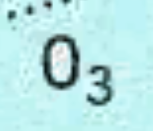
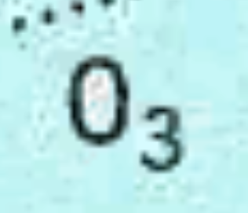Without OpenGL With OpenGL
Heavy over zooming reveals some of the secrets behind OpenGL
Why introduce OpenGL in OpenCPN?
The main reasons are:
- Better performance, leveraging modern PC graphics cards that are ubiquitous and powerful.
- Better "eye candy", such as smooth zoom and pan, with little impact on responsiveness.
- Future cross-platform support (e.g Android/IOS)
- Some features depends on OpenGL, such as horizontal text and numbers on skewed (course up) vectorcharts.
OpenCPNs performance with OpenGL is highly dependent upon your graphics hardware and drivers.
- Some graphics chip sets (e.g.intel 945G) have rather poor OpenGL driver support, so that we cannot fully utilize the hardware acceleration potential of these systems.
- nVidia graphics, even very old cards, seem to perform very well.
- Performance may not be improved with embedded graphics chips as often found in older laptops and netbooks.
- There is a lot of trouble with OpenGL on Vista and W7. Microsoft implemented a new screen compositing model for Vista and later, which "broke" many OpenGL apps
- Conclusion:Using OpenGL with OpenCPN will be a significant upgrade for some users of OpenCPN, but OpenGL may not be "better" for everyone's OCPN application.
- So, user's choice. If OpenGL works better for you, then use it. If not, the old DC based graphics render system is still in place, with performance equivalent to Version 2.5.0.
- Find the latest driver for your graphic card. The driver that came with your operating system, is not likely to be the best. Start looking at your graphic card makers home page.
- Go to the ToolBox->Settings and tick the two boxes "Use OpenGL" and "Enable Smooth Panning/Zooming".
If you have a lot of graphic memory, or very little, try to add the following to your config (ini on windows) file:
"GPUMemorySize=nnn"
where nnn is graphics card memory size, in MBytes.
256 MBytes is the default.
Low Power Systems
This is an advanced subject. Beginners need only bother, if on a system with very low resources and if the system feels very sluggish. The background is that OpenCPN, quite aggressively uses memory, to speed up the application, this can backfire in certain situations....There is a simple memory management scheme, for use with systems that has limited resources.
Two modes are available, only one of which can be active at any given time. The mode must be specified in the "opencpn.conf" file, called "opencpn.ini" in Windows and Mac.
1. Application memory limit target. Try to limit the total memory used by OCPN to the specified value, approximately.
Specify this mode by:
......
[Settings]
MEMCacheLimit=xxx
......
Where xxx is memory use target in Mbytes. Overrides NCacheLimit below.
2. Open chart limit. This is the default mode under Linux, and the default value is 20 open charts at any one time.
Modify this limit by the following:
......
[Settings]
NCacheLimit=yy
......
Where yy is the maximum number of simultaneously open charts.
If you do not enter any memory management specification in the config file, the following defaults apply:
a. Linux... behavior is the same as previous versions, Open chart limit is 20 charts.
b. Windows and Mac...Application memory limit target is used. Target limit is 50% of available physical RAM, up to a maximum of 1 gigabyte.
Settings for increased speed.
Try this setup in Options->Display, if your system is very slow.
Portable OpenCPN
The OpenCPN portable option allows the program to run fron an USB stick, or run independent from and parallel to a normal installation.To differ between various instances of the program, the titlebar on portable versions looks like this.
It is thus possible to run multiple portable instances and identify each version.
To create a portable Windows version
The following files/directories/folders must be in the directory containing the OpenCPN executable:
1. OpenCPN.exe (of course)
2. "opencpn portable.bat" (or other name of user choice)
A MSDOS batch file containing the one line:
"opencpn -p"
3. msvcr100.dll
4. msvcp100.dll
5. Eight wxWidgets dlls
6. OCPN data directories
plugins/
s57data/
share/
sounds/
tcdata/
wvsdata/
doc/
7. license.txt
To run OpenCPN portably within this directory, simply execute the "opencpn portable" batch file. There may be a way to build a click-able shortcut to OpenCPN, with the -p option specified in the shortcut. But I could not figure it out. Windows insists upon a drive letter in the command line of the shortcut, which would defeat the whole purpose of portability.
Thus, the batch file....
If the charts are also in the current dir, then the entire installation is "portable", meaning there are no hard-coded drive letter dependencies, and all write activities occur in the current dir only.
I find that this works pretty well from a USB stick...
A Linux version
On Linux, a similar functionality exists.
Copy the opencpn executable binary and the data directories mentioned above to a local directory.
In that directory, do
$ ./opencpn -p
This will cause all user data files to be created and used from within that local directory.
This can be useful for side-by-side testing...
Installing Charts
The potential danger to the mariner increases with
digital charts because by zooming in, he can increase the chart scale beyond what can be supported by the source data. The constant and automatic update of the vessel’s position on the chart display can give the navigator a false sense of security, causing him to rely on the accuracy of a chart when the source data from which the chart was compiled cannot support the scale of the chart displayed. Bowditch 2002 Ed p 412. |

OpenCPN does not come with any pre-installed charts. It is up to the user to find and install charts. Read on, and you will find detailed information about which chart formats that OpenCPN can display, as well as pointers to all available free charts that we know of.
Background Chart. OpenCPN comes with a worldwide background map, displayed if no charts are available for an area.

To install charts, OpenCPN must be pointed to a directory containing Charts of one of the recognized Chart Formats. Don't point OpenCPN to individual charts. You must specify the directory that contains the charts.
Where do I keep my charts ?
The installation tells you to go to the Options->Charts->Loaded Charts tab to install charts.
The top of the tab, "Available Chart Directories" is showing "My Documents" for Windows, and the users home directory, for Linux and Mac. These are good places to keep your charts. Create a "Chart" directory, and maybe some sub directories, to keep your charts in, and you can't go far wrong.
Seasoned users knows where they want their charts.
Regard charts as data, independent of OpenCPN. Store them in a place that is convenient for you and that is left alone by the operating system.
Download some charts (see Chart Sources) to your newly created Chart directory. Follow the directions below to make this directory an "Active Chart Directory"
The main consideration for charts is storing them in a directory where they will not be tampered with or moved accidentally.
Installing Charts
Open the Options Dialog by clicking

Then click the tab "Charts" and then the tab "loaded Charts".

There are no charts loaded. To add charts we have to add a directory that contains charts of a recognized format. To get started press "Add Directories" and navigate to your chart-directory.

Exactly how the dialog looks like depends on your operating system, and is not a part of the core OpenCPN.
When clicking the button "Open" above, the highlighted chart directory is added to the box "Directories". The screen-shots are from Linux, but this process works similarly on all platforms. Add more chart directories using the same process again. It's OK to load both raster- and vector-charts together.

All that remains is to click the "Apply" button. OpenCPN will then process your selection. You can now start using your charts. When you are done with your settings click "OK" and the Options Dialog closes. If you are just adding a chart directory, it works fine to just click the "Ok" button.
Note that in OpenCPN you must add directories (folders) containing charts, not the individual charts.
For BSB4 and nv-charts, first install the latest plugin version, then point OpenCPN to the correct chart directories and finally do a "Full Database Rebuild".
Eager to get some charts quickly, to get started? Go to: Chart Sources
Start using your charts.
You can click and drag the chart with your mouse. The cursor changes to an triangular green arrow near the edges of the OpenCPN window, left clicking in this situation, pans the chart in the direction of the arrow. The scroll wheel zooms in and out. Left clicking anywhere centers the view on that position. Right clicking brings up a menu with useful actions. Exactly what the menu contains depends on the circumstances. Read the rest of the manual for a full explanation.
If you are running OpenCPN for the first time you may see the background chart instead of the charts you installed. That simply means OpenCPN is pointed at a location that is not on any of the charts you installed. Click and drag, or use the arrow keys, to move the view-point to the location of one of your installed charts as described under "A few hints" below. Look for the rectangular outlines of the installed charts. An alternative is to right-click, and then click "Jump to position". Enter a location that is within the perimeters of your entered charts. The first time you start OpenCPN the view will be centered on Georgetown in South Carolina.
Single Chart Mode is the default display mode. In this mode only one chart at a time will be displayed. All the information printed outside the chart proper can be read. To change to another chart, select and click in the Chart Selection Bar. Read more in Status Bar. The other display mode is Chart Quilting.
1 Go to Options

2 Press this button
These are not the perfect settings, but you will see most of what you expect from a vector chart.
As soon as you have made yourself reasonably comfortable with OpenCPN and before using Vector Charts for actual navigation, make sure you understand all the settings in the Options-> Charts -> Vector Charts Tab by reading the Vector Charts page.
Loading Vector Charts
When using a vector chart for the first time, OpenCPN has to process the data, and transform the information to an internal display format. This can take some time, depending on your computer. This internal SENC chart, is saved for future use. The created files are quite large, but is in a format optimized for quick loading. OpenCPN is trading, creation time and size, for fast rendering when actually using the vector chart. The SENC files are saved in the SENC directory, in the same place as the opencpn.conf file - opencpn.ini on windows.
You probably do not want to build SENCs for all of your loaded S57 ENCs unless you plan to actually go there....
For an advanced approach to building SENC files look here.
Updating Vector Charts
Publishers of Vector Charts, such as NOAA and EAHC issues regular updates. OpenCPN updates the created SENCs automatically. The chart itself, the base-chart, is named "name".000 , the first update is "name".001 and so on. As a user you only have to make sure that the update files are saved in the same place as the base-chart. In the case of a new edition of the chart a new "name".000 file is issued. Just replace the old file with the new file and OpenCPN will update the SENC file. Don't forget to remove the updates to the old edition of the chart.
CM93 Charts
CM93-version2 Charts are different from the S57 vector charts, and has it's own data structure consisting of a number of folders and files. To load these charts in OpenCPN just add the top directory to the list of "Active Chart Directories".
In the top CM93 directory is an empty file with the ".EXD", for example 20110803.EXD. The format is YYYYMMDD.EXD. This is the version, or edition, of the CM93 -v2 release.
OpenCPN supports partial CM93 datasets, covering one or a few of the available regions. There is also support for multiple, as well asmultiple partial, cm93 datasets.
The CM93 top directory contains a number of (144) subdirectories named from
"00300000" to "04501020", as well as six other files. These sub directories each cover a geographical area of 40° x 40° . The first four numbers describes the latitude and the last four, the longitude of the SW corner of the area covered.
The key to understanding the numbers is to realize that CM93's coordinate system
of the world starts at the South Pole or to be exact at lat -90° long 0° and from there
proceeds North a East with a factor of 3 for each degree of lat and long.
The tile 00300000 hence has the SW corner at lat from -90° + 0030:3 = -80° or 80°S to
and longitude 0°E , and covers the area from 80°S latitude to 40°S and from 0° longitude to 40°E.
Looking at 04501020 it brakes down to lat -90° + 0450:3 = 60° and long 1020:3 = 340° subtracting 360° results in -20° or 20°W. So we have he SW corner at 60°N and 20°W .
One more example, the tle 03900840 has the SW corner at 40°N and 80°W.
Each of these sub-directories in turn contains directories with the individual charts. Ordered in scale from smallest to largest they are Z,A,B,C,D,E,F and G. Where Z contains overview charts and G contains harbor plans. Note that, generally, not all of these are present in each subdirectory.
Z covers 40° x 40° deg area and OpenCPN typically uses 1:3.000.000 scale
A covers 20° x 20° deg area and OpenCPN typically uses 1:1.000.000 scale
B covers 10° x 10° deg area and OpenCPN typically uses 1:200.000 scale
down to
..
G covers 20' x 20' and OpenCPN typically uses 1:3500 scale.
The individual chart tiles in these directories have the same logic in the naming scheme as described above.
A few hints.
- If you ticked the "Show Chart Outlines" box under the "Display" tab the loaded charts will be outlined in red for raster and green for vector charts. In CM93 the charts will be outlined in purple. The smallest scale charts in CM93, the Z scale and A scale charts, will not be outlined. Neither will all available charts be visible as outlines at the same time. The reason for this is computing speed and clarity. Generally the next level or two of larger scale charts are shown. When large scale plans are available directly from A scale charts, with no intermediate charts, the outline of the larger scale charts will be visible from a zoom level between 1.5 and 2.0 but only in single chart mode and with chart outlines switched on. Generally in areas where only A or Z scale charts are available, expect potentially dangerous omissions. Warning, do not use CM93 small scale charts alone for navigation without referring to other sources.
- Be aware that it is possible to "Over-zoom" charts in OpenCPN. A warning will appear on the display. Please respect that warning. It is recommended to not zoom more than a factor 2, for safe navigation. The actual zoom-factor appears in the lower right-hand corner of the display in single mode chart display.
- It is safe and reasonably efficient to put all your charts except the
CM93 database in one large directory, and set that directory in
Options->Charts->Loaded Charts. The CM93 database contains its own
file and directory structure. The top-level directory only, of this
database, should be loaded, as described above.
If you do a lot of chart downloads, updates, etc., then it will be faster to break the charts folder into smaller groups, and specify them individually in the Options->Charts->Loaded Charts dialog. Consider using Chart Groups - "Scan Charts and Update Database " Use this option if you have made any changes to the contents of your chart directories, as for example after downloading new charts from NOAA, etc. It need not be checked if directories are added or subtracted, as the entire database will be scanned and updated automatically in this case.
- "Force Full Database Rebuild" is mainly aimed at users converting or correcting existing charts, in a situation where changes are made to the geo-referencing, outline of the chart, or other attributes in the kap file header section.
- OpenCPN, supports Mercator Charts, Transverse Mercator Charts, Universal Transverse Mercator (UTM) Charts and Polyconical Charts
(used in parts of US and Canada). Charts using other projections will
not be displayed. A note about the reason for the display refusal, will
be found in the "opencpn.log".
"Other" projections could be Lamberts Conformal Conic Projection, mainly used in high latitude polar areas. Gnomonic charts, mainly used in older, larger scale BA charts, for smaller areas, for example harbor plans, in scales larger than 1:50,000. Newer editions of these charts are generally re-issued as Transverse Mercator charts. Gnomonic projection charts are also traditionally used for Great Circle Sailings. Such charts are not needed in OpenCPN, as Great-circles are handled internally.
- OpenCPN is not suited for Polar Navigation N/S of about 70 degrees.
These operating systems have a problem handling chart names containing spaces and non ASCII characters. A typical example is Swedish chart names. To sort this out use the utility program "detox". Detox changes the file names so space becomes "_"; "(" and ")" become "-"; and "å","ä" and "ö" become "a","a" and "o", etc.
To see what "detox" suggests to do, try a dry run first, like this:
detox -n File_with_swedish_charts > outfile
Setting Up GPS
Below we describe only the basics of getting a gps up and running.For a full description ov all options read Setting Options
Windows 98/ME/2000/XP/Vista/7
Note that the extensive use of the cheap gps mouse BU-353 as an example below, should only be seen as an illustration.
To use OpenCPN with a GPS, a GPS receiver is needed.
There are a variety of possible choices for a GPS receiver:
- A computer, such as a Sony Vaio P has a built in GPS receiver
- A NMEA Expander to amplify a nmea stream to multiple listeners
- A hand-held GPS receiver
- A dedicated GPS receiver
The remainder of this section describes using OpenCPN with a dedicated GPS receiver, however, the instructions for a dedicated receiver will be similar for any serial/USB connected NMEA data stream.
A Dedicated GPS Receiver
There are several companies making dedicated GPS receivers. The Supplementary Hardware section for GPS devices lists several manufacturers.
NMEA has traditionally been implemented as a serial protocol and
therefore, even if a USB connection is used, there needs to be a USB to
Serial Port conversion. The specific driver for the each GPS receiver
will handle this conversion.
An Example - Configuring BU-353
It is not necessary to use the installation disk to setup the BU-353. Following the steps listed below will result in the latest driver being installed.
- Download the latest driver from Prolific - http://www.usglobalsat.com/s-24-support-drivers.aspx#A
- Unzip and install the driver
- Plug in the BU-353.
- Start -> (Right Click) My Computer -> Properties -> Hardware ->Device Manager
or Start->Run devmgmt.msc - Expand Ports
- Look for the “Prolific USB-to-Serial Comm Port” and note the com port number (e.g., COM4)

- Right click on the “Prolific USB-to-Serial Comm Port”. Choose Driver
- Select 4800 bits per second, 8 data bits, None parity, 1 stop bit, and None for Flow Control

- Start OpenCPN
- Click on the Options Icon
- Select "Connections", and "Add Connection" and "Serial"
- Under "Data Port" select the Com port noted in #6
- Choose OK
- Select Auto Follow to center the map over your GPS location
Troubleshooting
There is a small LED located on the BU-353. If the LED is off there is no power being received. Check the connection.
If the LED is solid it indicates the BU-353 is searching for a GPS signal. Try moving the GPS receiver to a clear location.
If the LED is flashing it indicates the BU-353 has a position fix and is transmitting data.
- Try viewing the NMEA data stream in OpenCPN. Choose Options->Connections->Show NMEA Debug Window
- Alternatively, a diagnostic program is included on the installation CD called GPSInfo.exe. Launch this program to install the diagnostic utility.
If it appears that the NMEA data stream is being received, the most likely issue is that OpenCPN is not centered over your location. Click AutoFollow to center the map at your GPS location.
Known Issues
If you change the USB port for the GPS receiver Prolific will reassign the COM port number. This will require repeating steps 4-12 above.
On some computer / GPS receiver combinations when the computer
resumes from Stand By the GPS receiver will no longer transmit its NMEA
data stream, and only garbage instead of ASCII characters will be
visible in the NMEA Data Stream Window. The red indicator led will not
work.
To change back to NMEA mode search for and download SIRFDemo.exe.
Unpack and start. Set correct Baud rate and and com port as above.
Click connect to data source button. Action -> Switch to NMEA protocol, then exit.
There are many more settings available in SIRFDemo.exe
An alternative workaround for this issue is provided by using a COM port splitter such as XPort http://curioustech.home.insightbb.com/xport.html
- Download XPort.
- Unzip it to a folder of your choice
- Double Click XPort.exe
- Set the Baud Rate to 4800
- Under Enable Ports add an entry for COM10
- Click “Find GPS”. The port returned should match the port identified in Step #6 in the Configuring BU-353 Section
- Select Prolific USB-to-Serial Comm Port in the check box section
- Return to OpenCPN
- Click on the ToolBox Icon
- Select GPS
Linux
To proceed, the "user" you use on your computer must belong to the group "dialout".
Check your status by writing "groups" on a command line. The response
will be all groups that the user belongs to. Make sure that "dialout" is
included. If not, you have to add your user to this group. There are
many ways to do this, one is to issue this command:
"sudo usermod -a -G dialout $USER"
This applies to many Debian based distibutions, for other distros just drop the sudo and do the command as root, using "su".
All major Linux distribution includes a graphical user settings dialog, where adding a user to a group, could be fixed.
Two methods are available, direct connection or through gpsd.
We start with gpsd.
- Install the gpsd and gpsd-clients packages
- $ sudo apt-get install gpsd gpsd-clients
- Go to Options-> Connections-> Add Conection and select "Network" plus the GPSD radio button. Address should be "localhost" and DataPorts should be set to 2947.
- On Ubuntu 10.04 and later, that is really all you have to do. When you plug in your gps this will trigger gpsd to start.
- "xgps" is client that comes with the gpsd-clients package, and is useful for testing that the gps and gpsd is working properly. If xgps isn't working, it's a gps or gpsd problem, not an OpenCPN problem
Direct connection.
- Make sure that gpsd isn't running then connect your gps and start OpenCPN. On Ubuntu 12.04 the easiest way to achive this is to unistall gpsd.
- In the Options->Connections -> Add Conection, select "Serial".Set "dataPort to the port where you plugged in your gps. If you plugged in BU 353 this will probably be /dev/ttyUSB0.
- Choose 4800 baud, unless you know that the gps is set to something else.
- The gps should now work....if not, check the NMEA data stream window. If only binary garbage is visible, the gps has to be reset to NMEA mode, see more about this above in windows section. An alternative is to use gpsd, that will work with the gps in Sirf mode.
- To do this in Linux for BU 353 as well as many other gps:es, make sure that gpsd is running and that the package "gpsd-clients" is installed. On Ubuntu 12.04 gpsd needs to be temporarily installed. Make sure to kill any instances of gpsd with the command "sudo killall gpsd"
- The command $gpsctl -n will put the GPS into NMEA mode.
- If that doesn't work, try $ gpsctl -f -n /dev/ttyUSB0 .This will force a low-level access, bypassing gpsd. For more information: $man gpsctl
- More information is as always available through "man gpsctl" Close down OpenCPN before running gpsctl.
None of this is normally noticed when using gpsd, as this program reads both NMEA and SIRF binary sentences. -
More Linux hints
- If you can't connect to a physical port, such as /dev/ttyUSBO, indicated by a line in the opencpn.log file. Check that you, as a user, belongs to the group "dialout". To see which groups you belong to, run the command "groups". Not all Linux distributions add the user to this group by default. To add your self to the dialout group -> "sudo usermod -a -G dialout $USER"
- Check if gpsd is working:
$ ps aux | grep gpsd
nobody 12338 0.3 0.1 4124 1448 ? S<s 18:31 0:00 gpsd -F /var/run/gpsd.sock
you 12356 0.0 0.0 3036 800 pts/3 S+ 18:32 0:00 grep --color=tty -d skip gpsd
This or similar responses indicate that gpsd is running. If you only have something like the second line, ....it is not running. - Run the command "$ls -lrtd /dev/*|tail -10", and see the 10
latest created device files. Run this just after plugin in your gps to
see which device was created.
- Determine which device your GPS is on your linux system by checking the startup. Look for a line that says something about GPS and /dev/ttyUSB# in the command "dmesg"
- Or even better, after connecting a gps mouse, BU-353, we look for a dmesg by running this command.
$ dmesg | grep tty and get this response back. [13616.095305] usb 2-3: pl2303 converter now attached to ttyUSB0
- Add a script to start gpsd, if this is not done by your
distribution. I saved mine as startgps and set the executable
attribute. Edit line 3 to match your device, ie /dev/ttyUSB0
-
#!/bin/sh sudo killall gpsd sudo gpsd -n -D 2 /dev/ttyUSB0
-
- Run the script:
-
$ ./startgps
-
and configure your GPS source, chart directories, and other settings.
Other Distributions
- Install gpsd from source. More information is available here: http://catb.org/gpsd/
Udev Rules
- If you have problem with, for example gps, connecting to different ports each time you restart udev is your friend.
- udev supports persistent device naming, which does not depend on, for example, the order in which the devices are plugged into the system. The default udev setup provides persistent names for storage devices.
- There is a lot about udev on the Internet. For OpenCPN specifics, read this post:Udev in 2.5
Bluetooth GPS
More user experience of setting up bluetooth GPS are welcome, as the notes below just reflects a few users experience. Please use the Forum.
Ubuntu 10.10 and older.
If you have a bluetooth GPS you will need to first configure it through the standard Ubuntu Bluetooth "set up new device " proceedure. Once you have done that you will need to find what the address of the GPS is. To do that you run this command:"sudo hcitool scan"
it will then start looking for the Bluetooth GPS and hopefully find your GPS. You should see something similar to:
Scanning ...
00:1C:88:10:D3:4D iBT-GPS
In this case i have a IBT-GPS at address 00:1C:88:10:D3:4D (Your GPS address will be different)
Next we have to bind the GPS address to a "virtual" device OpenCPN understands in this case rfcomm0. We do this with the following command:
sudo rfcomm bind /dev/rfcomm0 00:1C:88:10:D3:4D Note put your GPS address in this line
You should not have to run these commands each time your linux is restarted as it will remeber your GPS address.
Now all you need to do is go into OpenCPN Toolbox and select GPS. Now in the NMEA Data Source options select from the pulldown menu: "/dev/rfcomm0", or write it in the box, if not present as an alternative.
Thats it - you should now have a Bluetooth GPS Connected.
Ubuntu 12.04
-Pair GPS with bluetooth icon
-break connection with bluetooth icon
-get device id: sudo hcitool scan
-get channel for gps: sdptool records 00:02:78:0A:4E:E9 (put your actual number here)
-sudo gedit /etc/bluetooth/rfcomm.conf #edit rfcomm input file. Text should be:
#
# RFCOMM configuration file.
#
# $Id: rfcomm.conf,v 1.1 2002/10/07 05:58:18 maxk Exp $
#
rfcomm0 {
# Automatically bind the device at startup
bind yes;
# Bluetooth address of the device
device xx:xx:xx:xx:xx:xx;
# RFCOMM channel for the connection
channel 1;#use channel number as provided by sdptool records XX:XX:XX:XX:XX:XX
# Description of the connection
comment "Your GPS Device Here";
}
- sudo rfcomm release 0 (not strictly neccesary)- sudo rfcomm connect 0 (you only need to to this once, not required if you reboot at this point)
...connected /dev/rfcomm0 to 00:00:00:00:00:00 (whatever)
...Press CTRL-C for hangup
in a seperate terminal, you can test the connection with rfcomm show /dev/rfcomm0
...rfcomm0: 00:08:1B:14:18:B6 channel 1 connected [tty-attached]
your bluetooth GPS should now be working in open CPN. run sudo opencpn to check that it works (/dev/rfcomm0 under GPS NMEA data source).
if it works, try running opencpn without sudo, chances are that you cannot see the gps. if this is the case, use the following fix: sudo usermod -a -G dialout $USER
Fedora
Run "hcitool scan" to get the ID of your bluetooth gps deviceMake a file "rfcomm.config" and put it in /etc/bluetooth.
This file is already present in Ubuntu, but needs editing for persistent connection.
# RFCOMM configuration file.
#
# $Id: rfcomm.conf,v 1.1 2002/10/07 05:58:18 maxk Exp $
#
rfcomm0 {
# Automatically bind the device at startup
bind yes;
# Bluetooth address of the device
device XX:XX:XX:XX:XX:XX;
# RFCOMM channel for the connection
channel 1;
# Description of the connection
comment "Your GPS Device Here";
}
Change XX:XX:XX.... to your device ID
Open Opencpn and write /dev/rfcomm0 as GPS NMEA device. Note that you can add it yourself by writing directly into the scroll down box.
Permissions for /dev/rfcomm0 are for group "dialout". Make sure you belong to that group.
The command "groups" will show all the groups you belong to.
Make sure that "gpsd" isn't running, issuing "killall gpsd" as root.
Mac OSX
Attaching a GPS device to a Mac is done via one of the USB ports. Whether using a device with its own USB lead or via a serial-USB adapter lead or an NMEA multiplexer with USB port, the appropriate OS X driver needs to be installed. Nearly all hardware uses one of just two chip makes: those from FTDI or Prolific. Both those companies make OS X drivers available on their web sites, but manufacturers of GPS devices usually package the driver with device.
When the driver is installed and the device connected, start OpenCPN, select the Toolbox and click the GPS tab. Open the "NMEA Data Source" menu & select the the device from the list. It is not always obvious which is the correct one, but in general the device will have a name starting: "/dev/cu." or "/dev/tty.". Some manufacturers make it obvious, like "/dev/cu.MiniPlex-99000125", but others may be more generic, like: "/dev/cu.usbserial". Set the "NMEA Baud Rate" to 4800 and click "OK". If the correct selection has been made, you should see the GPS status icon change from red to green.
GPS Status
The default Ownship icon is rendered as greyand like this when a gps fix is available
The GPS status is also indicated all the way to the right along the top of the screen, unless this position is covered by the floating ToolBar. The GPS status is then found bottom left.
The status icons should be interpreted as fallows:
In real life, various gps receivers may behave slightly different, especially when starting up and finding satellites.
The GPS status, including available satellites, is also available as an instrument on the DashBoard.
NMEA Sentences
OpenCPN Recognized NMEA Sentences:
- HDM - Heading, Magnetic
- HDG - Magnetic heading, deviation, variation
- HDT - Heading, True
- RMB - Recommended Minimum Navigation Information
- Status, V = Navigation receiver warning
- Cross Track Error, in nautical miles
- Direction to Steer, Left or Right
- TO Waypoint ID
- FROM Waypoint ID
- Destination Waypoint Latitude
- N or S
- Destination Waypoint Longitude
- E or W
- Range to destination in nautical miles
- Bearing to destination in degrees True
- Destination closing velocity in knots
- Arrival Status, A = Arrival Circle Entered
- *
- RMC -Recommended Minimum Navigation Information
- Time (UTC)
- Status, V = Navigation receiver warning
- Latitude
- N or S
- Longitude
- E or W
- Speed over ground, knots
- Track Made Good, degrees true
- Date, ddmmyy
- Magnetic variation, degrees
- E or W
- *
- WPL - Waypoint Location
- Latitude
- N or S (North or South)
- Longitude
- E or W (East or West)
- Waypoint Name
- RTE - Routes
- Total number of messages being transmitted
- Message Number
- Message Mode
- c = complete route, all waypoints
- w = working route, the waypoint you just left, the waypoint you're heading to, then all the rest
- Waypoint ID
- More Waypoints
- GGA - Global Positioning System Fix Data
- Universal Time Coordinated (UTC)
- Latitude
- Longitude
- GPS Quality Indicator
- Number of satellites in view, 00 - 12
- Horizontal Dilution of Precision (HDOP)
- Antenna altitude above/below mean-sea-level (geoid)
- Units of antenna altitude, meters
- Geoidal separation, the vertical difference between the WGS-84 elipsoid and the geoid
- Units of geoidal separation, meters
- Age of differential GPS data, time in seconds since last SC104
- Differential reference station ID, 0000-1023
- Checksum
- GLL - Geographic Position, Latitude / Longitude
- Latitude
- N or S (North or South)
- Longitude
- E or W (East or West)
- Time (UTC)
- Status A - Data Valid, V - Data Invalid
- *
- GSV - Satellites in view
- Number of sentences for full data / sentence 1 of 2
- Number of satellites in view
- Satellite PRN number
- Elevation, degrees
- Azimuth, degrees
- SNR - higher is better / for up to 4 satellites per sentence
- Checksum
- VTG - Track Made Good and Ground Speed
- Track Degrees
- T = True
- Track Degrees
- M = Magnetic
- Speed Knots
- N = Knots
- Speed Kilometers Per Hour
- K = Kilometres Per Hour
- *
- VDM - Automatic Information System (AIS) position reports from other vessels
- Time (UTC)
- MMSI Number
- Latitude
- Longitude
- Speed Knots
- Heading
- Course over Ground
- Rate of turn
- Navigation status
- VDO - Automatic Information System (AIS) position reports from own vessel
- Latitude
- Longitude
- Speed over ground
- Course over ground
- MMSI, navigational status, shiptype, callsign, destination, sizes (in AIS target list)
NMEA version 2.3.added a mode indicator to many sentences to indicate what
kind of fix the receiver has. The value can be one of
A=autonomous
D=differential
E=Estimated
N=not valid,
S=Simulator.
Sometimes there can even be a null value as well.
The A and D are the only vales that will indicate an Active and reliable Sentence.
This mode character has been added to the end of RMC, RMB, VTG, and GLL sentences.
Optionally, to some others as well, including the BWC and XTE sentences.
Basic Features
OpenCPN uses some basic settings or limitations.- Courses are always true, not magnetic .
- Distances are measured in Nautical Miles (meters for very short distances, less than a cable ~ 183 m).
- All distances and routes are calculated using Mercator Sailing. Great Circle Sailing is an oprion in route creating.
- Knots is used for speed. m/s is an option in displaying GRIB files
- Only edit to the opencpn.ini (opencpn.conf) file when OpenCPN isn't running.
Let's take a look at some of OpenCPN's basic features.
Toolbar Buttons
The Toolbar is floating and can be placed anywhere on the screen, vertical or horizontal.
Note the "grabber" symbol at the far right side of the toolbar. Use this
handle to drag the toolbar wherever you want it. The default position
is horizontal and docked top left.
It "snaps" to the edges. Right click on the grabber, and the toolbar
shifts to vertical format. On Windows (at least), unless in OpenGL
display mode, the toolbar dims down transparently until you roll over
it.
There are three different styles of Toolbars to choose from. Go to the
ToolBox->"User interface"-> "Toolbar and Window Style" and select
one of the following styles:
Traditional

Journeyman

Journeyman Flat

There are a lot of buttons available in the standard Toolbar, even more,
counting the many plugins. To control exactly which buttons to display,
hold the cursor over any button and right-click. This dialog pops up.

Only the buttons with a ticked box will be displayed. The available
shortcuts are also shown in parenthesis to the right of the button
description.
The MOB button is special. If unticked, you will get these choices:

#1: The MOB button will still be there, but anyone (crew?) may later hide it.
#2: If OpenCPN is used to handle a MOB situation,
choose this option. The MOB button will always be there. It is not
possible to change the state as long as OpenCPN is running. The MOB
button option will not even appear in the right-click menu.
To reset this option open the opencpn.ini(config) file and change the value below from
"1" to "0". Restart and all the options are once again available.
"[Settings]
....
PermanentMOBIcon=1"
#3: Use this option if a MOB situation is handled by
other means, and OpenCPN is not a part of the standard operational MOB
procedure.
The visibility of the plugin buttons is controlled in the ToolBox->Plugins Tab, by pressing the Enable/Disable toggle button.
Note that the Toolbar must have at least one active button.
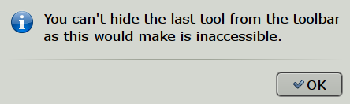
When a toggle button is pressed, it changes and becomes darker,
Traditional style also adds a stronger outer frame. For example,
tracking off 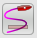, tracking on  .
.
A brief explanation of the use of each button is available by just hovering with the cursor
over a button. 
Traditional Style From left to right:
(For translation to other styles, check the buttons just below the Traditional in the above pictures.)
 Zoom In (Zooming)
Zoom In (Zooming)
 Zoom Out (Zooming)not
Zoom Out (Zooming)not
 Scale Next Chart Down (Scaling Charts) 1
Scale Next Chart Down (Scaling Charts) 1
 Scale Next Chart Up (Scaling Charts) 1
Scale Next Chart Up (Scaling Charts) 1
 Create Route (Marks and Routes)
Create Route (Marks and Routes)
 Find/Follow Boat. Toggles on/off.(Auto Follow and Display Orientation)
Find/Follow Boat. Toggles on/off.(Auto Follow and Display Orientation)
 Launch Toolbox(Setting Options)
Launch Toolbox(Setting Options)
 Show/Hide Text Labels on Vector Chart.(Vector Charts)
Show/Hide Text Labels on Vector Chart.(Vector Charts)
 Show/Hide AIS Targets 2 (AIS)
Show/Hide AIS Targets 2 (AIS)
 Show/Hide Currents On Chart (Tides and Currents)
Show/Hide Currents On Chart (Tides and Currents)
 Show/Hide Tides On Chart (Tides and Currents)
Show/Hide Tides On Chart (Tides and Currents)
 Print
Print
Route/Track/Waypoints/Layer- Manager.(The Route Manager and Gpx Data )
Toggle Track On/Off (Ship Track)
Adjust Screen Brightness for Dawn/Dusk and Night viewing.(Night Navigation)
 Drop Man Over Board(MOB) marker(Man Over Board)
Drop Man Over Board(MOB) marker(Man Over Board)
 About OpenCPN and Help File
About OpenCPN and Help File
 Show/Hide the Dashboard Plugin (Dashboard Plugin)
Show/Hide the Dashboard Plugin (Dashboard Plugin)
Show/Hide the Grib Overlay Plugin (Grib Weather Plugin)
 A separate GPS status and Chart Orientation Status is normally in the upper right corner of the display, unless the floating ToolBar covers this position. Then the "Staus-bar" will be moved to the lower left corner,
were it will stay, unless the main ToolBar iis moved to cover this
position, in which case the "Status Bar" goes back to the default
position.
A separate GPS status and Chart Orientation Status is normally in the upper right corner of the display, unless the floating ToolBar covers this position. Then the "Staus-bar" will be moved to the lower left corner,
were it will stay, unless the main ToolBar iis moved to cover this
position, in which case the "Status Bar" goes back to the default
position.
 Course Up/North Up 2 (Auto Follow and Display Orientation)
Course Up/North Up 2 (Auto Follow and Display Orientation)
Note 1: These icons are "grayed out" when only CM93 vector-charts are available, as the feature makes no sense.
Note 2: These icons changes, depending on status.
 Go to Table Of Contents
Go to Table Of Contents
Right Click Menu
The right click menu is always available as long as the cursor is somewhere in the chart area. The content of this menu is very context sensitive. The reason for the "Focused Context Menus", is to keep the number of options down to a reasonable level, and still be able to deal with all situations. There are basic right-click menus when clicking at a random point, and very focused menus when clicking on a waypoint, a route, a track or an AIS target. If you have just created or deleted a waypoint, or if chart groups are defined, there are further entries added to the basic menu. Below, the basic entries are explained.The more context specific entries are dealt with as the concerned feature is explained.The basic single charts right-click menus.
Below is first the rastercharts menu to the left and then the vector chart menu.Available "hotkeys", if any, are shown to the right.


Starting with the left menu for rastercharts.
Measure
Activates a "pencil". Move the pencil with the cursor. Put the tip of the pencil on a position that you want to measure from. Left-click, a dot Position with a circle around is created. Move the pencil with the mouse and see the distance and bearing from the point to the pencil-tip in "real time". Left-clicking again creates a temporary waypoint. When moving the "pencil" again, distance and bearing, once again are shown from the temporary waypoint. The total distance from the original measure point, via the temporary wapoint(s) are also shown as "Route Distance". Right click and mark "Measure Off" to stop measuring.For longer distances, specially on east.west courses on higher latitudes, the measure tool seamlessly switches to display and measure great circles instead of Mercator rhumb-lines. Read more Great-circle Sailing .
The "Create Route" tool works in a similar way, but you can't use the two tools at the same time.

Max Detail Here
Displays the largest scale, most detailed chart, available in the position of the cursor.It is assumed that there are more than one chart available at the position.
Scale In
Displays the next larger scale chart.It is assumed that there are more than one chart available at the position.
Scale Out
Displays the next smaller scale chart.It is assumed that there are more than one chart available at the position.
Drop Mark Here. Drops a mark in the position of the cursor. Further explained on this page::Marks and Routes
Move Boat Here
Moves own boats position to the position pointed at. This item is only visible in the right click-menu if the GPS isn't connected.Navigate to here
Creates an instant active route from own boat to the position clicked. More about routes: Marks and Routes
Center View...
Activates a small dialog where latitude and longitude can be entered. Pressing "OK" centers the display on this position, keeping the same scale. If a position has been copied, and is in your copy buffer, it will be displayed as default values. OpenCPN accepts a wide variety of position formats. The values entered is kept during a session, but goes when restarting OpenCPN.
Course Up Mode
Is shown because we are in North Up Mode. Clicking this entry changes the display to "North Up Mode." It is a toggle switch between "North Up" and "Course Up". Read more about display orientation: Auto Follow and Display OrientationAIS Target List
Shows a list of discovered AIS targets, if any. Read more on the AIS page.
Looking at the right click menu for vector charts, to the right above,we can see these additional entries.
Object Query
Every point on a vector-chart has certain attributes, or information. This can vary from just the depth in mid ocean to much more. Double clicking is an alternative to display the object query dialog. Here is an example from a lateral buoy in the entrance channel to a medium sized port.
The scrollbar on the right side of the dialog, reveals that more info is available by scrolling down. Much more about this on the Vector Charts page.
CM93 Offset Dialog..
Apply corrections to CM93 chart cells through this dialog. Read more on the CM93 Offsets page inthe Advanced section of this manual.
The basic quilted charts right-click menus, for raster charts and vector charts


The only new item in the quilted menus is
Hide this chart. The chart becomes excluded from the quilt. To show the chart again, find it in the chart bar, now marked with a red "X", right click and press "Show this Chart". Read more here: Chart Quilting
Zooming

 These buttons allow you to zoom in and out on the chart currently being displayed.
These buttons allow you to zoom in and out on the chart currently being displayed.
 Will zoom the chart in for more detail, larger scale.
Will zoom the chart in for more detail, larger scale.
 Will zoom the chart view out for more area, smaller scale.
Will zoom the chart view out for more area, smaller scale.
Alternatively, the + and - keys on your keyboard will zoom in and out. If you have a mouse with a scroll wheel, it can also be used to quickly zoom in and out.
For zooming in smaller steps try- Ctrl + Z or Ctrl + for fine scale zooming in.
- Ctrl + X or Ctrl - for fine scale zooming out.
- Ctrl + scroll wheel, zooming in/out in small steps.
Overzooming
 Overzooming
Overzooming
If you zoom in enough there will appear a warning "OverZoom" in the upper left part of the chart area. This means that you have zoomed in way to far, and is using the chart
at a scale that was never intended, and that is not supported by the original survey. No new information will be seen, and the situation is potentially dangerous
as it could give the impression of increased distance between dangers.
On a raster-chart pixelation will be seen, but on a vector chart it is not so
obvious when you have over zoomed. This is where the warning is useful.
Your first action when the warning appears should be to zoom out at least one snap.
Charts are generally based on surveys in twice the scale of the released chart, so when zooming in beyond a factor of 2, there is no support, increased details etc, in the underlying survey.
Nigel Calder "How to read a Nautical Chart, Second ed. 2012", is recommended to all users who want to know more about charts, the surveys they are based on, and their horizontal and vertical accuracy.
OpenCPN allows quite a bit of over-zooming by default, but it is also possible to change this by editing a line in the opecpn.ini (config) file. Find this line:
AllowExtremeOverzoom=1
and change it to
AllowExtremeOverzoom=0
This will still allow over-zooming up to a factor of about 2.5 for larger scale raster charts and about a factor 4 for similar vector charts. A stricter recommendation based on how charts are compiled, and their de facto accuracy, would limit this to a factor 2.
All About Charts
Status Bar
At the bottom of the display, is the Status Bar(s). Activated from 'Tool Box-Show Status Bar'.
Just above the Status Bar is the 'Chart Selection Bar'. CTRL +B toggles this bar on/off.
It shows all the available chart for the present view represented by one
segment for each chart. The order between the segments represents the
scale of the charts. Largest scale to the left, smallest to the right.
If CM93 is available, it is always furthest to the right.
The segmented color bars in the Status Bar represent:
- Blue for Raster
- Green For ENC's
- Brown/Yellow for CM93 charts
- The current chart displays as a lighter shade of its color, or if quilting is active, the charts currently making up the quilt are displayed in lighter shade.
- The Chart bar below consisting of 12 segments shows a quilt of two active charts. Five charts in the quilt are hidden, due to small scale. CM93 is in it's place, to the right. Four charts of larger scale than the present view are available. The largest scale chart is a Transverse Mercator chart.
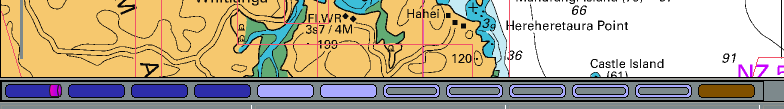
Limitation
The Chart Bar handles a maximum of 100 charts. The largest scale charts will be dropped first if more than 100 chart are available on a position. It is unlikely that this will be much of a limitation, but the possibility certainly exists if a lot of info charts, pilot charts and weather charts etc, are loaded. The symptom will be that large scale charts becomes impossible to display.
When you hover the mouse pointer over the bar, and not in quilting mode, a thumbnail of the chart will appear under the Scaling Charts icons
and a chart information box will pop up just above the button. If
quilting is on, instead of a thumbnail, the chart represented by the
button will be highlighted in a transparent reddish color. By clicking
on the appropriate bar, or using the appropriate Hot Keys and Shortcuts,
you will switch to the chart shown in the thumbnail. This feature is
especially useful if you wish to view an ENC or a Raster chart of the
same area.

The bottom line starting from the left, a bar, that imitates a paddle
wheel, if a gps position is received, and the gps position. Then
follows SOG, COG, the position of the cursor, and course and distance
from the gps position to the cursor. To the far right there is true
Scale of the display and the Zoom Factor. If the Zoom Factor is missing,
the chart quilting feature is activated. The Zoom factor is the Scale
(as above) divided with the natural scale of the chart.
The buttons are displaying a lot more information however.
 These buttons shows that the two charts are Transverse Mercator.
These buttons shows that the two charts are Transverse Mercator.
 This button indicates that the chart is a Polyconic chart.
This button indicates that the chart is a Polyconic chart.
 This button shows that the chart is Skewed.
This button shows that the chart is Skewed.
 This chart is excluded from quilting because of user action. Right
This chart is excluded from quilting because of user action. Right
click to include in quilting again.
 The raster chart represented by this button don't participate in the
quilt because it is hidden by other, larger scale charts. Vector charts
are represented similar.
The raster chart represented by this button don't participate in the
quilt because it is hidden by other, larger scale charts. Vector charts
are represented similar.
To illustrate a lot of this, here is a screen shot in quilting mode.

The screen is a quilt of two Polyconical charts. Hovering the mouse
pointer over the left chart-button highlights the lager scale chart for
Manitowoc. Two smaller scale charts that cover the area displayed on the
screen are included in the quilt, but are invisible as they are covered
by the larger scale charts. To view these charts, right-click anywhere
on a chart in the quilt and select "Remove this chart from quilt", one
of these charts will now be shown in the quilt.
The Brown right most button shows that CM93 version 2, charts are available for the area, but not currently displayed.
The information box shows relevant information about the chart. We can
see that the chart is Polyconic, and because of this a warning is
displayed for poor accuracy. The reason is, that although Polyconic
charts are allowed to participate in quilting, the result is not totally
free from errors, however small.
 Go to Table Of Contents
Go to Table Of Contents
Scaling Charts

 These buttons will allow you to change the scale of chart you are using, unless
only CM93 charts are loaded, in which case these buttons has no effect,
and are grayed out. If just a yellow bar is visible in the Chart
Selection Bar, above the Status Bar, then CM93 is the only available
chart for the area.
These buttons will allow you to change the scale of chart you are using, unless
only CM93 charts are loaded, in which case these buttons has no effect,
and are grayed out. If just a yellow bar is visible in the Chart
Selection Bar, above the Status Bar, then CM93 is the only available
chart for the area.
 Will scale down/out to the next chart of less detail but greater area, if available, within the current view
Will scale down/out to the next chart of less detail but greater area, if available, within the current view
 Will scale up/in to the next chart of greater detail but less area, if available, within the current view
Will scale up/in to the next chart of greater detail but less area, if available, within the current view
Hint: Scaling down and up corresponds to available charts left and right on the Chart Bar just above the Status Bar.

Above the largest scale chart is a raster chart ( blue ) on the far
left. To the far right is CM93 ( Yellow), and it will always be there,
if available. The green ENC vector chart, next to CM93, is the smallest
scale raster/ENC chart available at the center of the display.
The scale of the displayed chart.
The chart display indicates the true scale of a particular chart at
the present zoom level. Look to the far right on the bar above:
"TrueScale 22600 Zoom 0.73x.
There is also an always present quick reference visual indicator in the SW part of the display.


When the indicator is gray and orange the total length is 1 nautical mile an each segment is 1 cable.
When the indicator is gray and black the total length is 10 miles and each segment is 2 miles.
 Go to Table Of Contents
Go to Table Of Contents
Chart Quilting
Chart quilting is a way to display parts of several charts together on the screen, redrawn to the same scale.Limitation
Mercator charts, Transverse Mercator charts and Polyconic chart are quilted separately and don't mix. The transition from one form of quilting to the other is seamless. The background world chart can appear in Tmerc and Polyconic quilt in areas where there is no other chart coverage.
By quilting, any information available in the white border around a chart, will be hidden.
To see this information hit "F9" to temporarily get into single mode display.
Skewed charts don't quilt, unless the skew is less than 5°.
Quick Start
Go to Options -> Display -> Enable Chart Quilting. Tick he box. Once quilting is on in the Toolbox, F9 becomes a toggle switch to temporarily get into single mode display. Zooming in, automatically brings up larger scale charts, if available. Panning reveals a continuous quilt of the available charts. If you started with a raster chart, only raster-charts, and perhaps CM93, will be in the quilt. The same logic applies to S57 Vector Charts (ENCS). Make sure you are familiar with the Status Bar as this will help you interpret all available information. The quilt, like a single chart can be displayed North Up or Course Up read more: Auto Follow and Display Orientation.
More details
What is the use of this feature?

In single chart mode, getting near the edge of the chart there is no information outside the chart. You manually have to change to the next chart, by selecting one of the charts in the chart bar.

The situation changes dramatically when quilting mode is
activated. The amount of relevant information on the screen increases,
and the next chart is automalically available.
Displaying charts
OpenCPN has two modes of displaying charts, single chart mode and quilting mode.Single Chart Mode only shows one chart at a time, and a switch to other charts must be done by clicking another chart in the Chart Bar. All printed general chart information, outside the chart proper, can easily be read.
To activate chart quilting go to Options -> Display and tick the box "Enable Chart Quilting", tick the box "Show Chart Outlines" at the same time as this will help you see which chart mode is active. For CM93 the outline of individual charts can bee seen only if quilting is disabled.
Full Screen Quilting. Options -> Display -> "Disable Fullscreen Quilting". By default all visible charts of an appropriate scale are used in the quilt. With this box checked only charts that overlap the center of the screen are used in the quilt. Checking this box is easier on the system and may give a performance boost in certain circumstances.
Is Chart quilting on?
There are some visual indications on screen to confirm if quilting is on or off.
- The colored rectangles in the status bar have rounded corners and the white borders of the charts are invisible when quilting is on. When quilting is off in ToolBox->Settings, the colored rectangles have "square" corners.
- If you have the status bar visible at he bottom of the screen, a value in brackets after the scale, to the far right, is only shown in single mode. The value within the brackets is the zoom factor.
- When hovering with the mouse pointer over a inactive raster chart button in single chart mode, a thumbnail of the chart is displayed in the upper left corner of the screen. At the same time an information box pops up above the button with details about the chart. This changes with quilting, as the thumbnails are replaced with a transparent reddish high-lighting of the charts that is a part of the present quilt or has a larger scale than the reference chart in the quilt. This means that if Mercator charts are quilted the Transverse Mercator Charts will not be highlighted, and vice versa.
- The exception to the last rule is CM93 charts. When an area is only covered by CM93 charts, indicated by a long yellow chart button in the status bar, and in quilting mode, no info-box is displayed and no reddish highlighting is taking place.
- When CM93 quilting is off, the outline of the individual cells are outlined in magenta.
More than one chart can be displayed and active at the same time, on the picture above, for example there are two pale blue buttons, as there are two raster-charts in this quilt. In single mode only one chart button is highlighted at a time.
Depth units that is normally shown in the upper right corner of the display, if activated in the toolbox, is only displayed in quilting mode if all participating charts uses the same unit.
Zoom level, normally displayed on the far right on the Status bar, is not present in quilting.
Many of these features are illustrated in this screen-dump.

This is a quilt consisting of three raster charts, two that are actually displayed and one smaller scale chart that is hidden behind the larger scaled charts of St Croix.
The mouse pointer is over the middle raster chart and the chart information box is shown, together with the red highlighting of the chart on the screen.
If the chart info box contains much less info than above, just click the button to display the chart, then go back and hover with the cursor over the chart button again. The full info will now be available.
No depth unit is shown in the quilt as the left chart is in Feet and the right in Fathoms and parts thereof. Notice the lack of zoom level in the status bar, a quilt , by definition, consists of several different zoom levels.
Which charts are quilted?
There are several rules built into OpenCPN governing exactly how different charts reacts to the quilting mode.
Raster charts and Vector charts are quilted separately and don't mix together. You can quilt either raster charts or vector charts, but not both at the same time.
The exception to this rule is that CM93 ver2 charts, if available, are shown if no other Mercator chart cover exists for a displayed area, for both raster- and vector- chart quilting.
CM93 chart also kicks in (if available), if the view is so far zoomed out
that the rightmost (smallest scale) raster chart is too small to be useful. OpenCPN remembers that this selection of CM93 is due to attempted under-zoom of a raster chart. Then, when you zoom in again, it tries to return to the raster chart that caused the auto-shift to cm93. If that chart is not available, it makes best effort to find a useful small scale raster chart.
Transverse Mercator Charts, which are all raster charts, are strictly quilted on their own. In this case, the background map is visible where there is no coverage.
Polyconic Charts, which are all raster charts as well, are also strictly quilted on their own. The background world map is visible where ther is no other chart coverage.
CM93 ver2 charts can be quilted separately.
Mercator Charts are always quilted in quilting mode but don't quilt together with Transverse Mercator charts or Polyconic charts.
Polyconic Charts, are quilted separately, and don't mix with Mercator or Transverse Mercator Charts
Skewed Charts are allowed in the quilt as long as they don't deviate more than 5 degrees
from North Up.
Transverse Mercator Charts are quilted separately from Mercator- and Polyconic- Charts.
"BSB4" and "nv-charts", using plugins, quilts with other Raster Charts, following the rules above.
User control.
Users can control if an individual chart, is allowed in the quilt or not. Right clicking on any chart in a quilt and clicking "Remove this chart from quilt" on the pop up menu, removes the chart from the quilt. The chart button in the Status bar changes to
To activate the chart again right click this button an then click "Ad this chart to quilt"
Controlling the scale of the quilt view.
The "quilt reference chart" is the left-most, largest scale chart, highlighted in the chart bar. This is the left of the two pale blue chart buttons above.
Click the next chart blue button "one-to-the-right" of the of the current reference chart. The reference scale of the quilt will be decreased, but the viewpoint will not change. The same logic applies if clicking a chart-to-the-left of the present reference chart, except that the scale of the quilt will increase. Zooming in/out will also move the reference chart to the left/right.
Known issue with some NOAA ENC:s

Some NOAA ENC:s are produced with "holes" in. OpenCPNs handles almost all of these cases. The picture above is from S:t Croix in the Caribbean.
The gray rectangle above is a "hole" in a chart, where a smaller scale chart with coverage exists. The "hole" is due to the fact that this area wasn't surveyed to the scale of the chart.
Chart Groups
Chart Groups solves the following problem: You may have many charts loaded in your active database. Some of them have overlapping coverage at the same scale, so that when quilted the logic does not know which of potentially several
Another example: Pilot charts as one Group, normal navigation charts as another Group, makes it possible to quickly switch between them.
Final example: in another universe, NGA charts in one group, standard NOAA RNCs in another, British UKHO in a third group.
The Chart Group function allows us to define multiple Groups, with different chart directories in each group. The Group desired for viewing may be selected quickly without adding or deleting charts from the Active database.

In Options ->Charts, select "Chart Groups"
You will see two panes. The top pane contains you installed ("Active") chart directories. The bottom pane allows you to create, edit, and delete Groups. Note that there is always an "All Charts" group. This Group is not editable. New Groups which you create may have chart directories or individual charts added to them by selecting the item in the top pane and touching the "Add" button.
You may also remove individual charts or directories from Groups by selecting the desired item in the bottom pane, and touch "Remove Chart". Please note that "removing" an item from the Group does not remove it from your "Available" set of charts. The item is simply made unavailable when the Group is in use.
Using your Groups

In this illustration the navigator generally uses the US charts, when available. Coming into Baia do Porto Santo a detailed chart would be great, but no such US chart is available on board. A switch to the UK chart group solves the problem.

Select the Group you want to use, by a right-click context menu item called "Chart Groups". As you switch Groups the logic tries to select a chart and scale that closely matches the situation present before the switch. As you may understand, sometimes the fit is not reasonable, so the resulting view may be surprising.
Finally, if you have no Groups defined, as in the default installation, all installed charts are always available.
Chart Groups and CM93

It is possible to have multiple instances of CM93v2 in different Chart Groups. Above we have 5 instances loaded in various chart groups. The view is of "All Active Charts".
OpenCP also supports multiple partial CM93 datasets.
The instances are loaded, from left to right, in the order of the chart groups.
In this situation, only the leftmost instance of CM93, that is not excluded from the quilt, will be displayed. Above, it is the instance represented by the yellow rectangle.
Vector Charts
First, one very important setting for vector charts is handled directly from the main toolbar.
 This button toggles all text displayed on a vector chart On and Off.
This button toggles all text displayed on a vector chart On and Off.
The hotKey "T" is an alternative for toggling the text.
In OpenGL mode, all text will always be horizontal when using the "Curse Up" option.
Second, double clicking on a vector chart, as long as
the cursor has'nt changed to a green arrow near the edges, brings up an
information dialog, displaying the available vector-chart information
at the selected point. Scroll down to see all the information. An
alternative to double clicking is right-clicking an select "Object
Query".
Note that a single normal (left) click will center the chart at on that point.
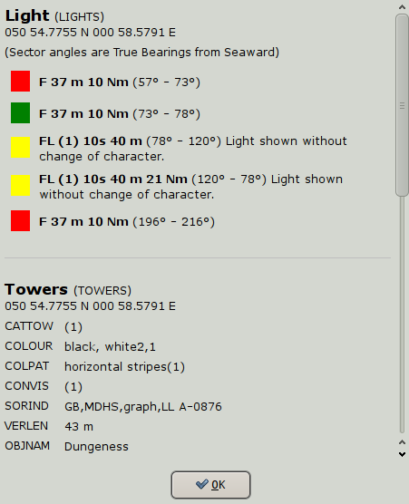
The example is taken from double-clicking on a lighthouse in a busy area.
Exactly what is shown in this dialog depend on the settings described below in "Display Categories".
Third, it is possible to select what font is used for
the text on vector charts. There is an entry in
theToolBox->Languages/Fonts->Choose Fonts tab, called ChartTexts.
Here you select what font-face to use, and a template size. Weight and
final size of the displayed texts depends on the charts you are using,
but if the charts contain various weights and sizes, they will all scale
together depending on what size you select.
The Options-Charts-Vector Charts Tab is where everything else is handled.

Display Categories
Navigators has the choice of three pre-defined, different, presentations of ENC content, Base, Standard and Other. OpenCPN also has the very flexible Mariners Standard, which is better described as "Mariners Choice".
Base
Displays general information, including coastline, safety-contour, isolated danger,buoy, beacon traffic separation zone, etc.
From the IMO definitions:
Display Base means the level of SENC information which cannot be removed from
the display, consisting of information which is required at all times in all geographic areas and all circumstances. It is not intended to be sufficient for safe navigation.
Standard
Everything in "Base" and aids to navigation, fairways, channel limits, restricted navigation zones, restricted areas, etc..
Other
Everything in "Standard" and more. This level could be described as "all essentials". More about what the IMO ECDIS
says about the content of these three levels. This is a good choice for
actual, underway, navigation, avoiding the possible risks involved in
"Mariners Standard". See more below.Mariners Standard
Users can use the filter tick box to set exactly what he or she wants displayed. A large set of filters, about 186, can be employed. They are all to the IHO S57 standard, but has been given a label that is easy to understand.Note that Mariners Standard gives the user a much wider choice of what to display, than approved ECDIS system are allowed. It is for example possible to not display items in the Base category.
These Hot Keys all works in "Mariners standard". Features are toggled on/off with the keys.
| T | Texts. The visible texts are still affected by the settings in the Vector Charts settings tab. |
| L | Lights. Lighthouses as well as buoys etc are all affected. |
| S | Soundings. |
| A | Anchoring. This will affect information needed when anchoring. Anchorages and anchorage areas. Submarine cables and pipelines. Type of bottom. |
| O | Chart Outlines |

WARNING - it is possible to suppress essential information with "Mariners Standard".
If in doubt, switch to "Other", or use the "Select All" button.
Vector Palette
It's possible to change the whole look of a vectorchart. One example below....Detailed information is available in Vector Palette
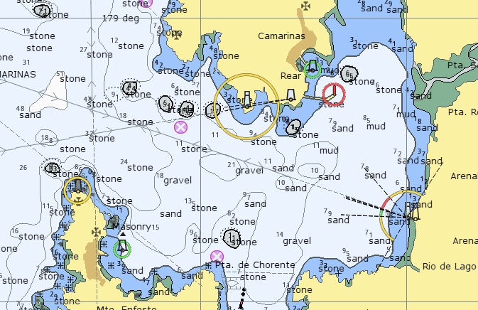
Practical usage
A general recommendation would be to use "Mariners Standard" and to "Select All", to start with, and then switch of certain features as required.
As an example let's look at passing through the British gas fields in the SW North Sea
This is not easy, so we want to get rid of all those red and yellow circles.
Right click on one of the platforms, square with a dot.

Click "Object Query", and then one of the "Light" lines in the left column.

At the top of the right column i says "Feature Class: LIGHTS".
Find "Light" in the Mariners Standard list of available filters, and untick it.

Press the "Apply" button!

Much better!
In this particular case, there is a shortcut. Use the Hot Key "L" to toggle all lights on/off.
Depth Soundings
turns the measured depths on and of. Other settings also affects when soundings are displayed, for example "Reduced Detail at Small Scale". The dark black numbers are not soundings. Instead they refer to heights of nearby islets or cays. On official paper charts the soundings are printed in italics.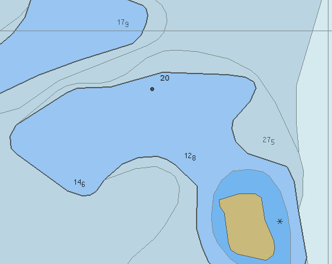
The bold number 20 refers to the land height of the unnamed cay SW of the number.
"Safety Depth" is set to 20 m, so the 20 m contour stands out in black.
Chart Information Objects
earlier called "Meta Objects", relates to information about the chart itself. With this switch on, an object query reveals such information as the buoyage system for the area, the quality of the survey, the latest NTM update and sources for the chart.
Important Text Only
displays only a bare minimum of text essential for navigation, such as course and bearing in a leading line (range) and bridge clearances.Reduced Detail at Small Scale
makes sure that a minimum scale is required before certain objects are shown. If this box is not ticked, everything is always shown, leading to very cluttered view at small scale (zoomed out).Bouy/Light Labels
displays names and purposes of aids to navigation, such as number or name of buoys, information about conspicuous objects etc
Light Descriptions
this tick box control display of light characteristics. Checking this
displays a label with a text describing the marker or lighthouse's
characteristics.
Extended Light Sectors
It is often difficult on a vector chart to see exactly what the light-sectors are supposed to do.

Activating the Extended Light sectors clarifies the situation. All
sectors are extended and leading white sectors are emphasized in yellow
and extend the full nominal range of the light-house. Just hold the
cursor over a ligt and the extended sectors are activated.

De-Cluttered Text
Even when using "Reduced Detail at Small Scale", there are cases when text labels overlaps or overwrites other labels and creates a cluttered impression. Ticking this box clears up this mess. To see all the labels, increase the scale for the area. For Lights with many sectors, the text label for each sector overwrite each-other. With this box ticked only the first sector label is displayed. For full information regarding sector lights, do an object query.
Chart display style
Points
Paper chart draw the markers and lights just like the printed paper chart, while simplified uses icons to represent the same. Some like the one and some the other, a matter of taste.Paper Chart mode closely follows the IHO standard standard in this area. This mode is currently more developed than the simplified mode, as it has a higher priority in the development effort.
Boundaries
Plain normally just uses a dashed line, while the Symbolized version also uses triangles pointing into the area.Colors
Depth on the chart can be displayed with either 2 or 4 colors. This setting is closely related to the "Depths Settings". With 2 colors, and using a relatively large scale, areas with depth less than "Safety Depth" is blue, the rest is white. With 4 colors, there are different colors for areas less than "Shallow Depth", areas between "Shallow Depth" and "Safety Depth", areas between "Safety Depth" and "Deep Depth" and finally for areas deeper than "Deep Depth".CM93 Zoom Detail
Normal settings depend on a combination of personal preferences and present usage of map. To see more detail the "Zoom detail" can be set to a higher positive number or for navigation in shipping lanes to a negative numbers. Typical zoom level 5 is good for fishing when as much details are possible is of interest. Zoom level of +1, zero or -1 is usually fine for normal use.Positive values give more detail, but at a cost:
a. It simply takes longer to render larger scale charts covering more screen real estate.
b. There will be more instances of gray (NODATA) areas surrounding the larger scale charts as you zoom out, unless quilting is activated.
c. It can become dramatically slower if high detail is specified, and chart outlines are requested. In this case, the program has to read a lot more cells to get their outlines.
Conversely, negative values give less detail. Zooms are faster.
The slider can also be activated through the right click meny, and displayed directly on the screen.
Depth Settings
These settings are very important as they affect how the different depths are colored.They can help you identify a deep channel for example, or they can, in the worst case secenario, prevent you from beeing aware of a shallow area.
There is no setting that fits all circumstances. For example a Seamount with a depth of 20m in the middle of an ocean should be regarded as "shallow" and be avoided, while 20 m depth in a harbor approach in protected water, probably is safe.
The Depth Settings controls the coloring of the water as a function of depth. By setting the Safety and Deep water right you will have a visible border to show when to take care about shallow water.
CM93 charts and S57 ENCS works very similar in this area.The charts contains depth area features according to fixed depth cutoff zones, usually 5, 10, and 20 meters. Intermediate values are not available in the database,if you select a value between those available, opencpn chooses the next higher value available for display of color.
The charts are inconsistent in this area, depending on the country issuing the original charts. For example in UK and the Netherlands the depth contours in CM93 are 2, 5 and 10 meter while in Sweden they are 3, 6 and 10 meter!
Generally for both S57 ENC and CM93, find these fixed depth cutoffs by right clicking -> Object Query ->Chart -> Depth Area. The two values DRVAL1 and DRVAL2 represents these built in cutoffs.
If for example, as is the case on the South China Sea Hydrographic Commissions charts, the shallowest area has a DRVAL1 = 0 m and a DRVAL2 = 10 m, there is, in most cases, no point in setting "Shallow Depth" to anything but 10 m.
Find out these cut off depth for your area and set the "Depth Settings" with this knowledge together with your preferences and activity.
Note that Shallow,Safety and Deep Depths are always in meters, even if soundings are chosen to be displayed in another unit.
With all the reservations above, the general case for 4 colors, will be described.
Shallow Depth
will color all water areas with water depths shallower than the set depth to a dark blue color.Soundings are in black.
Safety Depth
water deeper that Shallow but shallower that this depth will have a
paler blue color. The Shallow Depth contour clearly marked with dark
gray borderline.Soundings less than this depth are in black, while
soundings greater than this value are gray.
Deep Depth
water deeper than Safety Depth but less than Deep Depth will display a
light gray color. The Safety Depth contour is clearly marked with
black borderline. Water deeper than Deep Depth is displayed in white.Finally a word about drying heights, displayed in green. There is no detailed information available for the value of the drying heights, neither in CM93 ver2 nor in many S57 charts, currently available for OpenCPN. Some S57 charts have negative DRVAL1 and DRVAL2 = 0 m in areas with drying heights. This adds very little, as it really only gives the information that the drying height is less than DRVAL1 in an area of unspecified size. Raster charts seems to be the only alternative for navigation in shallow areas with a large tide.
Hopefuly this will change.
A set of new charts released in april 2012, by the Dutch Authorites, sets a standard for others to follow in this regard.

Compared to CM93.

When is safe to pass across Bramble Bank? The CM93 vectorchart gives us no information whatsoever, neither on the chart, nor in the Object Query dialog.

While a raster chart tells us that we need a Hight of Tide that is 1.2m + safety margin + the draft of our own vessel.

Heights of islands etc. are not available in CM93, while S57 charts have info about heights of summits and peaks but no contour lines.
Is Balls Pyramid a high Island, that the name implies, or is it named with the same sarcastic humor as "Greenland" ? CM93 can't tell.
Chart Formats
OpenCPN supported chart formats:
BSB Versions 1, 2 and 3, with chart files ending with ".kap".
BSB Version 4 , with chart files ending with ".cap", works with a non free plugin, for Windows only.See the PlugIns download page.
NOS/GEO Version 1, with chart files ending with ".nos" and ".geo". (Subsequent versions are probably supported but need to be tested. However, this format is obsolete for new charts.)
"nv-charts", with chart files ending with ".eap", are supported through a non free plugin, for Windows only. See the PlugIns download page.
CM93 Version 2.
(C-map Version 3, and later, is in a preprocessed proprietary SENC format and is not supported.)
S57/S52 (ENC), with chart files ending with ".000".
OpenCPNs internal SENC files has a ".S57" file extension.
If a chart is said to be a S57 Vector chart, and has a different file
ending, it is likely to be a SENC file, a processed version of a ".000"
chart file, in a proprietary, platform specific format, that OpenCPN
can't handle.
Pictures of charts, can be converted, and used.
Generally chart pictures in gif, jpeg, pdf, png, tif, bmp and other formats can be used, when properly geo-referenced, to generate kap files. For the details about this process read the Chart Conversion Manual. Also, make sure to browse around the forum as there are a handful of interesting chart related threads.
The Zoomify image tiling format, can also be converted to bsb charts.
Not supported formats that can be converted.
WCI charts generated with SeaClear and MapCal can
also be transformed to BSB charts and used by OpenCPN. The key is to
open a WCI chart in MapCal and then "Tools->Convert->Current WCI
to BMP" to convert the chart to a BMP picture. More about using MapCal, a
part of SeaClear, for chart conversions, is available here: Conversion Using Linux. MapCal works just fine with Linux, using Wine.
The necessary utilities for making or converting charts usually only run on Windows or Linux. For Mac OS X, use boot camp, Parallels or VMware to run one of these operating systems.
OziExplorer charts consisting of picture in one of the standard formats, together with a georeferencing ".map" file, can be converted to a bsb kapfile. A Ruby script for this conversion is available here and a more developed windows version here.
Ozi charts of the ozfx2 or ozfx3 format can not be converted with this
tool. These Ozi formats are not documented and proprietary, and cannot
be displayed in OpenCPN.
The HDR/PCX charts, used prior to the BSB format, was used from the late eighties to mid nineties. While these charts cannot be used directly in OpenCPN, the chartpicture as such, can be extracted. These charts consists of many picture tiles in pcx format, more than 100 tiles is not unusual. The tiles can be merged to one big picture, and then used as any other picture, to make an OpenCPN compatible chart. For details on this process see the Chart Conversion Manual and this post and the following posts in the forum. A script for merging the pcx tiles to one picture is available here.
The HDR format is from an era when computer-memory and processing power were less powerful than today, as a consequence these charts are not of the same quality as more modern charts. Furthermore, most of these charts are not using WGS84 as reference datum. These charts should not be the first choice, but can be useful if nothing else is available.
Other formats that are not supported.
S63 Encrypted ENC charts are not supported. This is the format for the majority of newly produced vector charts from many national hydrographic offices. S63 charts are exactly the same as S57 except the they are encrypted to keep them from being illegally distributed.The Hydrographic Chart Raster Format, HCRF, used by
the United Kingdom Hydrographic Offices' ARCS (Admiralty Raster Chart
Service), Australian Hydrographic Services' Seafarer products and the NZMariner, New Zealands Official charts, are not supported. This is also due to proprietary encryption algorithms and copyright issues.
Charts from Mapmedia, Navionic, C-map(with
the exception of CM93 version 2) and various other formats are not
supported, for the same reasons as for the other proprietary charts.
 Go to Table Of Contents
Go to Table Of Contents
Chart Sources
High Resolution Background Map
A more detailed version of the built in background map is available here.
It is a big file, 230 mb(unzipped) compared to the standard 26mb, and
may slow your computer down. The presentation is better when zoomed in,
but most users don't need it.
Install by unzipping and placing the files in the <install_dir>/gshhs .
<install_dir> is normally ...Program Files/OpenCPN on Windows and
/usr/local/share/opencpn/ on a Linux default installation.
Free Nautical Charts
- To get you started quickly, here are three sample raster charts from Puerto Rico:
- Right click and use "Save Link As", or similar. Just clicking shows you the actual file as a text file (more about that advanced subject here:imgkap). Don't use these charts for navigation. Download their current versions from NOAA's Web site. Save the charts in a "directory", also called a "folder". Install the charts by adding this directory to the Options -> Charts -> "Loaded Charts" Tab.
- For those interested in U.S. waters, raster charts and S57 vector charts are available as free downloads from NOAA. Find all NOAA charts, both raster (RNC) and vector (ENC) charts, for your region through NOAA OCS Website at: http://www.nauticalcharts.noaa.gov/staff/charts.htm.
- Official Inland Electronic Navigation Charts (IENC) of U. S. inland waterways are available from the US Army Corps of Engineers at http://www.agc.army.mil/echarts.
- Links to a wide selection of ENC's for U.S. inland waters and other countries are available at : http://www.dacust.com/inlandwaters/index.html.
- Argentina publishes free raster charts (RNC) for a large part of their coast: Argentinian Charts
- Brazil publishes free raster charts (RNC) for their whole coast and new charts for inland waters are published regularly.There is also coverage for part of Antarctica. Here is a direct link to the download page: Brazilean Charts. Don't miss the link to CARTAS DE RIOS at the bottom of this page.
- The East Asia Hydrographic Commission provides free offshore S57 vector charts for the South China Sea area at: http://scsenc.eahc.asia/main.php. The motivation for releasing these charts is well worth reading.
Realizing that official and high quality small scale ENCs conforming with the established IHO standard were not available for the SCS, the EAHC MSs decided to cooperate closely and resolve the situation so that mariners could use most up-to-date chart information for voyage planning and enhancing safety of navigation, rather than resorted to some commercially developed electronic products which were either prepared in proprietary formats, or containing unofficial data with very infrequent updating... It was the view that if the SCS ENC could be freely and widely available to mariners, it would further enhance the safety of navigation in the region. This in turn could reduce the chances of environmental damage from grounding and oil pollution, which have tremendous cost impact. The EAHC decided to provide the SCS ENC to users free of charge.
- Colombia and Australia publish sample S57 single charts.
- New Zealand publishes high quality tiff pictures of almost all their charts. These are all converted to charts, and available for OpenCPN here.
- Many European countries publish free S57 ENC charts for their inland waterways:
Austria
Belgium
Bulgaria
Croatia
Czech Republic
France
Germany
Hungary
Netherlands
Romania
Serbia
Slovakia
Switzerland - The US Pilot Charts, are available as BSB charts, on the OpenCPN.org download page.
- The OpenSeaMap project publish raster charts in many formats (including KAP which work with OpenCPN). This project relies on mariners to survey their local waters and upload their data using the OpenStreetMap database and editing tools. This project is still in its infancy, so only a few areas have been mapped to any extent. Currently only sea-marks are displayed, but it is planned to include depth & other data in due course. For the maps, go to: map.openseamap.org/map/
Other Charts
- "Antares Charts" are producing a lot of very large scale charts covering "The West Coast of Scotland". These charts are available in many formats, including BSB3. A nominal sum is charged for the charts, to support this impressive effort by unqualified enthusiasts.
Commercial Nautical Charts for OpenCPN
- The Swedish company "Hydrographica" produces large scale BSB3 charts for popular areas, based on their own surveys.
- The VisitMyHarbour "ChartStick" A USB stick covering UK and Ireland. Windows only.
- Windows users have access to world wide chart-coverage through the "BSB4" and the "nv-charts" plugins. This coverage includes Europe. UK, for example, is covered by both BA and Imray charts. A simple Internet search will reveal all necessary information.
Auto Follow and Display Orientation
- Clicking the Auto Follow button
 will center the chart directly on your vessel's current location. This
is a toggle button that is slightly larger and greyer when on. If the
the gps is working own ship is red
will center the chart directly on your vessel's current location. This
is a toggle button that is slightly larger and greyer when on. If the
the gps is working own ship is red  otherwise the icon is gray.
otherwise the icon is gray.  . If zoomed out to a scal that is smaller than 1:300.000 the icons changes to , when receiving gps signals and
. If zoomed out to a scal that is smaller than 1:300.000 the icons changes to , when receiving gps signals and  otherwise. More about he OwnShip icon is available in Marks and Routes.
otherwise. More about he OwnShip icon is available in Marks and Routes. - The default own ship icon can be replaced by putting a file "ownship.png" in the User icons shared data directory. More about this shared directory here: Marks and Routes
- The Auto Follow button useful for two different situations:
- When you have panned the map away from your current location and want to quickly move back to your vessel.
- When underway, this will keep the display on the chart around your vessel, with the boat at the center of the chart.
- Panning the chart will disable Auto Follow mode. Simply click again to turn Auto Follow
mode back on. Zooming in/out with the scrollwheel is OK as no panning
takes place unless Options->Display->"Zoom-to Cursor" is ticked.
- The display can be oriented three different ways, normally it is North Up but Course Up is an alternative. With Course Up OpenCPN uses COG, course over ground. The easiest way to change between these two modes is through the "Right Click" menu. One situation where course up might be considered is when navigating a river or a canal. The third orientation is when skew charts are displayed, they are simply shown as "Chart Up", but an optional setting exist to show them as "North Up".
- In the picture below the Course Up is active. COG is 41Deg. Notice how all text on the vector chart, is aligned correctly. This only works in OpenGL mode. The red arrow, in the upper right corner, is always pointing North.

- If the option "Show skewed raster charts as North-up" in the Options->Display tab, is not ticked, the right-click toggle option "Course Up Mode/North Up Mode" will be replaced by "Course Up Mode /Chart Up Mode", for skewed charts.
- If an electronic compass is available in the NMEA stream the own ship icon will be orientated according to this heading. The difference can be seen on the chart if there is a cross current, for example. The boat below is heading WNW but is being set SW. An AIS CPA, Closest Point of Approach is also visible.

 This icon (blue color) to the far right in the ToolBar indicates that the display is in North Up mode.
This icon (blue color) to the far right in the ToolBar indicates that the display is in North Up mode. The red version of the icon indicates Course Up
mode. These settings are toggled in the rightclick menu, but can also
be controlled in the Options -> Display -> Course Up Mode. Just
below this option, the update period for course up, can be set. This
comes in handy, for example, to perevent the display jerking around in a
chop.
The red version of the icon indicates Course Up
mode. These settings are toggled in the rightclick menu, but can also
be controlled in the Options -> Display -> Course Up Mode. Just
below this option, the update period for course up, can be set. This
comes in handy, for example, to perevent the display jerking around in a
chop.- Note that both the red and the blue arrows are always pointing North.
- Look Ahead! To see more of the chart in front of the boat, activate Options -> Display -> Look Ahead Mode. Your own boat will no longer be in the center of the screen. Instead it will be located away from the center, in the opposite direction to your present gps course(COG).
- Don't always Look Ahead! If you are at anchor,
swinging on the hook produces random courses and low speeds.If Look
Ahead is on in this situation the chart rendering will constantly be
redrawn, with the boat in all possible lookahead positions as the course
changes. To prevent this kind of scenario OpenCPN works like this:
*If the boat speed is less than 1 kt, then lookahead is disabled.
*If boat speed is greater than 3 kts, lookahead is enabled.
*In between 1 and 3 kts, the lookahead "distance" is adjusted smoothly.
*If the problems still there when doing more than 3 kts, consider using "Options->Connections -> FilterNMEA Course and Speed data" to average out the "jumpiness". - Show skewed raster charts as North-up. Skewed charts are normally showed "chart up", as intended by design. If ticking this box, these charts are shown North-Up. In both cases, activating course up, works as expected, the difference is when course up is not on.

Tides and Currents
Notes
- Tide and Current predictions are not available for all areas.
- OpenCPN comes with a built in tidal data file, but can use any legacy IDX or binary tcd file. Multiple tidal files can be used at the same time. More about this further down this page.
- As with all predictions, the displayed values are calculated using mathematical models and actual tides and currents will vary
Enable Tides and Currents Display
- Click the toolbar button
 to see tide stations.
to see tide stations. - Select
 to see current stations.
to see current stations. - Important: tide and currents will not be displayed unless these toolbar buttons are selected.
Displaying Tides
- Available tide stations will show on the chart as green graphs with a "T" logo:
- The "T" becomes a yellow and blue vertical bar when the scale is greater than 1:500.000


- The vertical bar contains a lot of information at a glance.
 The tidal rise is 2.5m above the chart datum. The blue part is "water".
The "V" inside he bar indicates that the tide is decreasing towards
Low Water.
The tidal rise is 2.5m above the chart datum. The blue part is "water".
The "V" inside he bar indicates that the tide is decreasing towards
Low Water.
 Here, the tide is rising towards High Water.
Here, the tide is rising towards High Water. Low Water looks like this.
Low Water looks like this. High Water Looks like this.
High Water Looks like this.- Right click the middle of either icon to see the tidal graph:

- If a waypoint, route or a track is, or passes, on top of a tidal icon, a rightclick will show a context menu for those features. To see the tidal graph, press "Show Tide Information" at the bottom of the menu.

- The Tidal Dialog gives the name of the station as well as the the name of the Data Source file. This is important when you have multiple sources covering the same area. Time and height for HW and LW is displayed in the upper right part.
- The Yellow box, with the tidal rise and time, follows the cursor when hovering over the dialog. The time axis at the bottom displays the time, in this case he timezone is "Z +01:00", which is the same as one hour ahead (east) of UTC, that used to be called GMT.
- In North America it is common to use a three or four letter acronym for timezones.
CODE
|
UNITED STATES TIME ZONE CODES
|
UTC OFFSET
|
AST
|
ATLANTIC STANDARD TIME
|
UTC - 4
|
EST
|
EASTERN STANDARD TIME
|
UTC - 5
|
EDT
|
EASTERN DAYLIGHT TIME
|
UTC - 4
|
CST
|
CENTRAL STANDARD TIME
|
UTC - 6
|
CDT
|
CENTRAL DAYLIGHT TIME
|
UTC - 5
|
MST
|
MOUNTAIN STANDARD TIME
|
UTC - 7
|
MDT
|
MOUNTAIN DAYLIGHT TIME
|
UTC - 6
|
PST
|
PACIFIC STANDARD TIME
|
UTC - 8
|
PDT
|
PACIFIC DAYLIGHT TIME
|
UTC - 7
|
AKST
|
ALASKA TIME
|
UTC - 9
|
AKDT
|
ALASKA DAYLIGHT TIME
|
UTC - 8
|
HAST
|
HAWAII-ALEUTIAN STANDARD TIME
|
UTC - 10
|
HADT
|
HAWAII-ALEUTIAN DAYLIGHT TIME
|
UTC - 9
|
SST
|
SAMOA STANDARD TIME
|
UTC - 11
|
SDT
|
SAMOA DAYLIGHT TIME
|
UTC - 10
|
CHST
|
CHAMORRO STANDARD TIME
|
UTC +10
|
Displaying Currents
- Available current stations will show on the chart as orange diamonds, when zooming in arrows will appear pointing in the direction of the set. Note that "current" here is short for "Tidal Current", and is the same as the UK term "Tidal Stream".
- Master current stations are shown like this
 in all scales. No direction is associated with these stations but they
can be queried, trough a right click, for the magnitude of the current.
in all scales. No direction is associated with these stations but they
can be queried, trough a right click, for the magnitude of the current.

- Arrow indicates current direction and strength - the bigger the arrow, the more current.
- The size of the arrows can be customized by users in the opencpn.ini (opencpn.conf) file.
In the [Settings/Others] section you can set the option CurrentArrowScale to a positive number representing a percentage scaling factor of the current arrows. The values bellow 100 mean the arrows will be smaller than now, the values above 100 will cause them to be bigger. - Right click the orange box
 to see current graph:
to see current graph: 
- If a waypoint, route or a track is, or passes, on top of a current icon, a rightclick will show a context menu for those features. To see the current graph, press "Show Current Information" at the bottom of the menu.
- The Yelow box, with time,speed and direction, follows the cursor when hovering over the dialog.
- Note that OpenCPN can only display "Reversing Currents" found in restricted waterways, such as rivers and straits. The general case with "Rotary Tidal Currents", can not be displayed with this interface, but are available for some areas as Grib files. More here Grib Weather Plugin .
Using an alternative data set
- The default dataset for tides and currents is limited, mainly for copyright reasons.
- Xtide, a well known free software tidal aplication (GPL license), maintains regularly updated .tcd files for US, UK and the Netherlands. These are presently the only areas with, up to date freely available, tidal data. The latest updates are available from the Xtide site, http://www.flaterco.com.
- A number of different datasets are available on the Internet, with vastly greater coverage. Some of these datasets are quite old, and they also contains glitches and errors, many of which have been corrected in the OpenCPN default dataset.
- In many areas there are no free alternatives, and OpenCPN makes it possible to switch between data sets and even using them at the same time. If two stations are located on exactly the same position, only one will be visible......

- Go to Options->Charts->Tides & Currents. Press "Add Dataset.." to add another dataset.
- Tidal files can be located anywhere on your file system, but it will pay off to be organized. The first entry above shows the default location for the built in datafile on Linux. On windows a typical location is "C:\Program Files\OpenCPN\tcdata".
- The last two entries above are the latest available Xtide tcd files.
 Go to Table Of Contents
Go to Table Of Contents
Marks and Routes
Marks...
are the basic points that is used for many things, such as creating routes, marking fishing spots, good anchorages or anything of interest.Once a mark is created a focused right-click dialog becomes available, when clickin on the mark.

Creating a mark
There are a few ways to directly create marks.- Pressing "Enter" or "Space" creates a mark at the boats position.
- "Ctrl + M" creates a mark at the cursor position.
- Right-click and and press "Drop Mark" creates a mark, at the position of the cursor, when clicking.
- Marks are created at the start of each leg in a route, and one at the end of the route. More about routes a bit further down this page.
The default icon, when creating a mark, is settable by changing the the value "DefaultWPIcon" in the opencpn.ini(config) file. Use the name of any available icon in the properties dialog.
|
In the [Settings/Others] section set the option DefaultWPIcon to one of [empty, airplane, anchorage, anchor, boarding, boundary, bouy1, bouy2, campfire, camping, coral, fishhaven, fishing, fish, floating, food, fuel, greenlite, kelp, light, light1, litevessel, mooring, oilbouy, platform, redgreenlite, redlite, rock1, rock2, sand, scuba, shoal, snag, square, triangle, diamond, circle, wreck1, wreck2, xmblue, xmblue_, xmgreen, xmgreen_, xmred, xmred_, activepoint] values representing the default set of built-in icons or to a filename of any of your UserIcons, without the the path and .xpm extension. If you have a file called MyICON.xpm in the user icons folder, the value will be simply MyICON |
You can move the mark by left-click-dragging it around.
You can delete a mark by right-clicking its icon, and selecting "Delete".
There is an built in undo/redo buffer for creating,
deleting or moving marks or waypoints. If you have just created, deleted
or moved a mark the right-click dialog will have relevant entries. The
undo/redo, for moving or creating marks, follows a straight time-line
and is not tied to an individual mark.

Above is a right-click menu just after moving a mark a few times and
undoing the last move, and one mark was deleted, and then the deletion
was undone. CTRL + Z and CTRL + Y works as hot-keys for undo/redo.
All marks have properties that can be seen by right-clicking and
pressing "Properties", or even simpler just double click the mark.
Read all about the properties dialog in Extended Marks
Marks can be manipulated through the Route Managers Waypoints tab as
well. Deleting a mark that is part of a route, will also change the
route.Marks that are a part of a "layer" cannot be changed at all. Marks
can also be imported into OpenCPN in a number of ways.
Read all about the The Route Manager and Gpx Data
A general locking of all marks is available. Goto Options -> User Interface

and tick the box. This feature is handy, to prevent accidentally moving a
mark. Activate this feature when underway, deactivate it when planning.
The Man Over Board mark can be activated through the icon  in the toolbar, or through hitting Ctrl + Space-bar. The mark looks
like the button and is dropped on own boats present gps position. This
mark cannot be moved or deleted with the cursor or keyboard (by
mistake), but can still be deleted from the Route/Waypoint manager
dialog. More about Man Over Board here.
in the toolbar, or through hitting Ctrl + Space-bar. The mark looks
like the button and is dropped on own boats present gps position. This
mark cannot be moved or deleted with the cursor or keyboard (by
mistake), but can still be deleted from the Route/Waypoint manager
dialog. More about Man Over Board here.
All the details of the Mark/WP Properties dialog are dealt with in Extended Marks
Use your own Icons
OpenCPN comes with a handful of different icons that can be assigned to a mark. Right click or use the Route Manager and activate the properties dialog. The Mark Icon window in the dialog shows the available icons.A user can install his or her own icons to use with marks and "own ship".
1. Create a directory called "UserIcons" in the same place that holds your opencpn.ini(config) file. Instructions to find the directory (folder) location here:Installing OpenCPN
2. Add .png image files to this directory. The legacy .xpm format works as well. The icons can be any size. The name of the file (without the extension) becomes the name of the new waypoint icon. These new icons will appear on the Waypoint Properties dialog, and can be assigned to any waypoint. They can also be assigned in GPX Import files.
3. The User Icons page contains links to a few sets of user contributed icons.
4.To replace the default own ship icon
More about "ownship" icons and setting "ownship" size in Setting Options.
Routes
Press the  -button and start the creation of a route. Hotkey "CTRL R" is an
alternative way to start a route and "Esc" ends the route. The cursor
changes to a (
-button and start the creation of a route. Hotkey "CTRL R" is an
alternative way to start a route and "Esc" ends the route. The cursor
changes to a ( ) pencil. Left click along the desired route you want to make. This
will leave sequential numbered waypoints as you click along, the numbers
will not be visible, but are available in the Route Properties Dialog,
accessible through the right click menu or the Route Manager. The
running total distance of the whole route will be shown along the
"pencil" together with the course and distance from the last marked
waypoint. When creating routes, OpenCPN will ask if it should use a
nearby mark, when a route point is added that is close to an already
existing mark. If answering "yes", the existing mark is copied to the
route.
) pencil. Left click along the desired route you want to make. This
will leave sequential numbered waypoints as you click along, the numbers
will not be visible, but are available in the Route Properties Dialog,
accessible through the right click menu or the Route Manager. The
running total distance of the whole route will be shown along the
"pencil" together with the course and distance from the last marked
waypoint. When creating routes, OpenCPN will ask if it should use a
nearby mark, when a route point is added that is close to an already
existing mark. If answering "yes", the existing mark is copied to the
route.

For longer distances, specially on east.west courses on higher
latitudes, the Create Rout tool seamlessly switches to also offer a
great circles alternative, instead of Mercator rhumb-line route legs.
Read more Great-circle Sailing.

Holding the cursor over the route brings up a roll-over info. The name
of the route, if it is set in the properties dialog, the total length of
the route, the course and distance for the leg under the cursor and
distance run so far along the route, to the first waypoint in the
current leg.
Looking at the four legged route above. The total distance is 8.8 NMi.
The third leg is 1.89 NMi i true direction 160° and the accumulated
distance in the first two legs is 4.76 NMi.
If your desired route extends off the currently displayed chart, move
the route cursor in the desired direction and the display will
automatically pan to show the area. You can zoom in and out with the
mouse scroll wheel or keyboard +/- keys during route creating. You can
also right click and select 'MAX DETAIL HERE' or 'Scale Out' during
route creation. When finished right click and choose end route from the
context menu, alternatively just press the "Esc" key.
You should now have an inactive (Blue) route. Active routes are Red, inactivated routes are Blue.
Right-clicking on a route brings up a focused menu

Multiple Routes
In OpenCPN multiple routes can be handled in a couple of different ways.
Many routes can be created in a session or imported into a session.
The visibility of every route is controlled in the Route Manager. There
is an "eye" to the far left on the line for each route. This works as a
toggle switch. A PLAIN Eye means that the route is visible, while an
eye with a red cross, means that it's hidden.
This way only the route(s) of interest for the moment can be shown.
Another way is to create and export routes, and later import them when needed.
To keep the chart clear of useful, but not needed routes follow these steps:
• Create a folder called, 'GPX_Routes', or another suitable name.
• Create your route.
• Use the Route Manager to export the route, with a descriptive file name and save it in GPX_Routes.
• Delete the route from the chart.
• You can export all your routes as one big file or export and delete a route as you create them
• When needed, simply use the Route Managers "Import" Button to open the route file.
To get rid of the way points left on the chart when a route has been imported and then deleted, which may happen depending on the imported gpx file.
1. Open the Route Managers Waypoint tab and press the "Delete All" button
2. Say 'Yes' to: 'Are you sure you want to delete <ALL> waypoints?'
Saving and Loading Routes and Marks
- Refer to The Route Manager and Gpx Data to load and save data using The Route Manager
Activating and using routes
Right clicking on the track, changes the color from blue to orange and brings up a comprehensive menu.
Clicking "Activate Route" or performing the same action through the Route Manager, changes the route color to red and new, route information window appears on the right side of the display. Once a route is activated, you are presented with the choice of "Deactivate Route" in the different menus.
Right clicking on a waypoint in a route brings up a few options, otherwise not available.

- Properties. The dialog is the same as for an individual mark.
- Activate - Gives the direction to the chosen waypoint instead of the first waypoint in the route, which is the default. Useful when joining, for example, an imported route, at an arbitrary waypoint.
- Remove from Route, but don't delete it.
- Copy as kml, for use with Qtvlm or Google Earth.
- Delete Waypoint from Route.
- Send to GPS is seen in the rightclick menus for routes and waypoints. If a port is not selected, the case in the picture above, a dialog is shown to select an output port. To change the selected port, go to the route manager and select "Send to GPS".


XTE Cross Track Error. How far off course your boat is.
BRG Direction to next waypoint.
RNG Distance to next waypoint.
VMG Velocity made good to next waypoint
TTG Time To Go to next waypoint.
Right clicking on "This Leg" above brings up this dialog

Show just the current leg or the entire route. Show or hide the highway.
Autopilots and Routes
If an autopilot output port is defined in the Options->Connections tab, OpenCPN sends instructions to the A/P when a route is active. OpenCPN creates and sends the NMEA RMC sentence to the A/P output port when a route is activated. Read more in Setting Options.OpenCPN automatically shifts to the next waypoint in the route using an arrival radius of 0.05 miles (= 92.6 m). This is all automatic and not user configurable or "signal-able".
This works fine in the general case. The A/P is watching the RMB strings. It sees a new destination lat/lon, and new heading to steer, and then asks the user for confirmation to make the turn. Raytheon/Autohelm work this way.
Ship Track
Toggling the track icon  turns tracking on and off. When tracking is on, the button becomes
slightly larger and darker (shown here). Tracking means that a record is
kept of the vessels position as it proceeds. A trail is left behind the
vessel.
turns tracking on and off. When tracking is on, the button becomes
slightly larger and darker (shown here). Tracking means that a record is
kept of the vessels position as it proceeds. A trail is left behind the
vessel.
The way the track is recorded can be set in Options -> Ships -> Ownship.
A full explanation is available in Ownship

Recorded tracks can be imported, exported and managed using the The Route Manager and Gpx Data.
When right clicking on a track you can select Track Properties from the
context menu, and a new dialog pops up. The same thing can be achieved
through the Route Manager. A record of all the track point will be
listed. On the screen dump below the tracking precision is set to
"Medium". The Waypoints, track points really, appears at irregular
times, due to the smart tracking. Only trackpoints that contributes to
the track are recorded. In other words, a change in the track occurs at
every recorded trackpoint.
Click anywhere on a line in the list of track points, to mark the line and a blue square will mark the position on the track.

From the right click menu the Delete track option is available as well. To prevent mistakes a confirmation dialog pops up.
For more about Tracks read about the Route Managers Track Tab in The Route Manager and Gpx Data.

As a backup, a logbook entry is made every half hour in the OpenCPN log file. The format is similar to this:
14:30:00 CEST: LOGBOOK: 2011-06-28 12:30:00 UTC DR Lat 44.43657 Lon -65.17280
 Go to Table Of Contents
Go to Table Of Contents
Man Over Board
|
An Alternative MOB Approach.
Look at this page AIS SART |
Drop a Man Over Board Marker at your present position by pressing
* Man Over Board Button
or hit the Keys
*Ctrl + Space bar.
A mark, looking like the button is instantly created - the MOB mark.
The MOB mark will be called "MAN OVERBOARD at + time-stamp"
A temporary route, from a point 1 mile ahead on the current COG, and to the MOB mark is created and activated. On the screen, a course and bearing to the MOB mark will be displayed. This temporary triangular mark is labeled "1.0 NM along COG".
If COG, course over ground, is not available, no route is created but the MOB position is marked. This can happen if no GPS is connected, if the GPS signal is (temporary) unavailable or if the speed is so low that the GPS doesn't calculate COG.
To delete a MOB
The temporary route can be deleted, through the right-click menu, but no action of the user with the mouse or keyboard will move or delete the MOB mark, except for a right click -> Mark/Wpt Properties and select a different icon, and then delete the mark (ex mob mark) from the right click menu, or through the Route Manager. A MOB mark is not included in "Delete All" in the Toute Manager, to avoid mistakes. The mark has to be selected alone and then "Deleted".
Multiple MOB marks can be deployed, and multiple temporary routes will be created. The active route will always be associated with the last dropped MOB mark.
Be very careful when using this capability in waters with strong tide or current.
The person overboard will not be at the position of the MOB mark for long. Both Own Boat and the person in the water will move with the current, but OpenCPN knows nothing about this.
The MOB mark has just been dropped

Own Boat has moved on and the MOB bark is 0.65 miles in bearing 200 degrees.
One option in this situation is to drag the triangle to the Own Boats position.

A second MOB mark is dropped.

Setting Options
Quick links to content of this page.
The Display TabThe Connections Tab
The Chart Tabs
Loaded Charts
Vector Charts
Chart Groups
Tides & Currents
The Ships Tabs
Own Ship
Ais Targets
The User Interface Tab
The Plugins Tab
Click the
All Settings that are not context sensitive, are set in Options.
The Display Tab
Course-Up Mode Display Update Period: This relates to how often the entire displayed chart is updated. The own-ship and AIS icons are still updated every second. The default value is 15 seconds. A "zero" value is allowed! The default mode is North-up. It's easy to switch between the two modes through the right-click menu.
Lookahead Mode: Auto Follow and Display Orientation.
Show Grid: Activate a latitude and longitude layer on the display. This feature only works if the display is in North Up mode. The grid is handy on vector charts, that normally lacks this feature.
Show Depth Units: Shows the charts depth units on the screen in embossed letters in the upper right corner. When in quilt mode, depth units are only shown if all charts in the quilt has the same depth unit.
Use Accelerated Graphics OpenGL Read the OpenGL page!
Smooth Panning/Zooming This works best together with OpenGL. Test to see how it works with your graphic card. If you are using OpenGL, tick this box as well. This feature will not work if "Zoom to Cursor",below, is activated.
Zoom to Cursor: Normally when clicking on the screen, the display centers on the clicked point. The wheel zooms in/out always using the center of the display. With this box ticked, the zooming happens at the point of the cursor. This means that as soon as you start to zoom in the cursor stay in the same place on the screen and on approximately the same geographical position. The advantage is that the zooming in position can be fine tuned just using the cursor.
"Smooth Panning/Zooming",se previous item, will be completely disabled if ZoomToCursor is enabled.
Preserve scale when switching charts: Normally when switching charts OpenCPN will open the new chart scaled close to it's natural scale, the zoom factor stays the same. With this box ticked OpenCPN will keep the scale from the last chart, when switching, not exactly, but generally of the same magnitude. The zoom-factor will increase as you switches to smaller scale charts.
Enable Chart Quilting: Chart Quilting.
Disable Full Screen Quilting: By default all visible charts of an appropriate scale are used in the quilt. With this box checked only charts that overlap the center of the screen are used in the quilt. Checking this box is easier on the system and may give a performance boost in certain circumstances.
Show Chart Outlines: The borders of the available charts are shown. Vector charts are green, raster charts are red, and on CM93 available larger scale charts are purple. The CM93 chart outlines are not on if using quilting mode. As a safety precaution, the outlines of isolated dangers with large scale charts available, are shown in CM93 even if "Show Chart Outlines" is off, provided that quilting is not used and the scale is large enough. At a scale of 1:200.000 or larger these isolated Islands and dangers will be shown. Hence it is recommended not to use quilting in CM93 when on a longer passage. More on Installing Charts
Show skewed raster charts as North-up: Skewed chart are normally shown as intended by the cartographer, "Chart up". With this option they are rotated to show North-Up. If you are looking for speed, don't tick this box. I slows down the screen rendering . Skewed charts are a common feature along the US Inter-coastal Waterway. More here: Auto Follow and Display Orientation
Goto top of page
The Connections Tab

For a full explanation of this tab read Data Connections .
Goto top of page
The Charts Tabs
Loaded Charts

Add Directory In OpenCPN charts are added by adding the directory (folder) that contains the chart files. This tab is where charts are added and removed, read about the details in Installing Charts
Remove Selected Mark the chart directories that are no loger needed, press the button an then "Apply" or "OK" .
Scan Charts and Update Database Use this option if you have made any changes to the contents of your chart directories, as for example after downloading new charts from NOAA, etc. It need not be checked if directories are added or subtracted, as the entire database will be scanned and updated automatically in this case.
Force Full Database Rebuild is mainly aimed at users converting or correcting existing charts, in a situation where changes are made to the geo-referencing, outline of the chart, or other attributes in the kap file header section.
Goto top of page
Vector Charts
Read more about Vector Charts !
Goto top of pageChart Groups

Read more about Chart Groups !
Goto top of page
Tides & Currents

Read more about Tides and Currents !
Goto top of page
The Ships Tabs
Own Ship

COG Predictor Length (min): Shows a red dashed line in front of your own boat, with present COG and ends in a small square, which represents where you will be in the set number of minutes, with the present speed. 6 minutes is a good starting value for piloting. If your vessel has a SOG of 10 knots the dashed line will be 1 nautical mile long. 60 minutes makes sense on a coastal passage and 24 x 60 = 1440 minutes on longer blue water passages.
If a heading sensor is available in the nmea data stream, and differs from COG, this is shown as a finer line with shorter dashes ending in an open small circle.

Ship Icon Type: The following options are available for ownship

Default: This will use the icon that comes with OpenCPN, unless you have installed
your own icon, "ownship.png". More about installing your own icons in Marks and Routes .
Real Scale Bitmap: This option will adjust the size of the default icon, depending on your settings. When using this setting, the dialog expands and five more options related to the size of "ownship" becomes available. See picture below
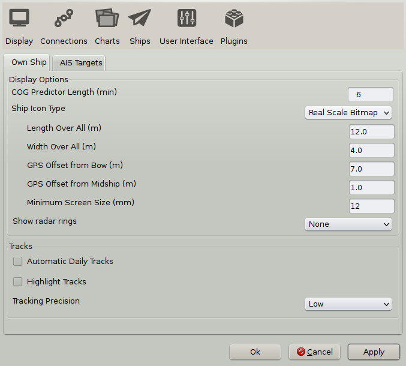
Length Over All (m)
Width Over All (m)
GPS Offset from Bow (m)
These settings needs no further explanation as their names are clear.
GPS Offset from Midship (m): Use a positive value for an offset to Starboard and a negative value for an offset to Port.
Minimum Screen Size(mm): The size of the ownship icon on the screen. Default is set to 1mm.
Real Scale Vector, works the same as the previous option with the exception that ownship is a somewhat boxy, computer rendered ship. It's currently not possible to change the vector-own-ship.
 The dot represents the set location of the GPS.
The dot represents the set location of the GPS.Show radar rings: These show up as red rings centered on your gps position, and can be useful in different circumstances, such as keeping clear of dangers. The settings are, hopefully, intuitive.


Automatic Daily Tracks.
Automatic Daily Tracking ensures that the track-points collected throughout a single day (midnight to midnight in local zone time) are stored and managed as a single (possibly multi-segment) track.
If the Automatic Daily Tracking check-box is selected, the "Toggle Tracking" tool will - as before - turn tracking on and off. However, on turning it off, the accumulated track will be extended with the previous one, if it does not extend into yesterday. Disjoint segments are kept separate, time-adjacent segments are merged into a single segment.
Disjointed track segments, can be joined through the right-click menu, when they are selected in the Route Managers Tracks Tab.
Every Midnight the tracking is turned off and on again automatically, to ensure that the track does not span dates.
If Automatic Daily Tracking is selected during the day, when some tracks have already been created, only the last one will be merged with future daily tracks.
Assuming Automatic Daily Tracking is on, normally during tracking periods there will be two tracks visible in the Route Manager: the current track (red color track-points on the chart) and the previously accumulated track for the day. After toggling tracking off there will be just one track for this day.
If the timezone needs to be changed, it is a good idea to close OpenCPN application before..
With the manual capability of splitting and extending, the daily tracks can be easily managed at any time.
The daily tracks will be automatically named with the date in the local Time Zone, but can of course be changed manually.
The Automatic Daily Tracks follows the settings in Tracking Precision, see below.
Without Automatic Daily Tracks selected, OpenCPN handles tracks as before.
Highlight Tracks shows a 7 to 10m wide highlighting, either side of the track. This is not selectable for individual tracks. The idea of the highlighting is to remind us that following a previous track exposes us to the inherent inaccuracy of GPS, and that the real track followed is most likely within the highlight region, but not necessarily in the middle. And this says nothing about the accuracy of the underlying cartography. For many charts it is prudent to assume at least 1.5 mm inaccuracy using the nominal scale of the chart. For a chart in scale 1:20,000 this translates to 30m.

Tracking Precision

With track button in the ToolBar activated this setting affects the size of the data saved. It also affects the "smoothness" of the track, though this is only visible when zoomed in to a very large scale.
OpenCPN uses smart dynamic tracking, and only uses those track points that actually contributes anything to the track. A straight line track for example is only represented by it's endpoints. This is done by analyzing the track just behind the boat. The process is visible in real time, close to "ownship". The end result is good track accuracy while keeping the size small.
Low: Good for offshore passages.
Medium: Very good for all normal uses.
High: Only necessary when very tight maneuvering needs documenting.
Goto top of page
AIS Targets

Read more about AIS.
Goto top of page
The User Interface Tab

Languages: The following languages are available in OpenCPN 3.2 :
Brazilian Portuguese
Catalan
Chinese, Traditional
Czech
Danish
Dutch
English
Estonian
Finnish
French
Galician
German
Greek
Hungarian
Italian
Norwegian Bokmaal
Polish
Portuguese
Russian
Spanish
Swedish
Turkish
Choose your language here. Make sure your selected language has the support files installed on your computer (Linux). Default language is US English.
Remark: Changing the language will reset the font settings.
Goto top of page
Toolbar and Window Style. The alternatives are described in Toolbar Buttons
Fonts. Fonts can be selected for many elements on the display. Selecting the right size of font can have a dramatic impact on how values are presented. It's well worth playing around with these settings if you think that something is difficult to read for example. Note that even the text displayed on vector-charts, can be adjusted.


The result of adjusting the "Console Value" font size.
Toolbar and Window Style. The alternatives are described in Toolbar Buttons
| There is a side effect of the Font management module, which is worth noting. One must actually display something in a particular Font List category (ChartText, Console Legend, Console Value, etc.) in order for the item to appear in the list for the first time. Thereafter, the item should stay in the list and be available for editing. For Example: You may not see the Font List entry for "AIS Rollover" unless you have actually displayed an AIS Rollover message at least once. Of course, if you re-install OpenCPN, or start with a new config file, there may be limited entries in the FontList. |
Show Status Bar: The status bar at the bottom of the display contains a lot of navigation information. If you have this info available elsewhere, turning this setting off increases the available space for the chart.
Show toolbar in fullscreen mode: The key F11 toggles fullscreen mode on/off.
Enable transparent toolbar: This option is greyd out in OpenGL mode, as the feature only works in traditional mode. On Linux it is necessary to activate a window manager compositing system, such as Compiz or GNOME Shell, to have a transparent toolbar.
Show Lat/Long as: Pick the format for position display. This setting may not work for all plugins.
Play ship bells: Every half-hour the traditional ship bell will be heard.
Lock Waypoints. Unless a waypoint property dialog is visible. Locks waypoints, and prevents accidental moving of them. This box should normally be ticked when under way.
Confirm deletion of tracks and routes. A safeguard against deleting important data by misstake.
Goto top of page
The Plugins Tab

The Plugin tab is treated on these pages
About Plugins
Dashboard Plugin
Grib Weather Plugin
Goto top of page
Data Connections
OpenCPN version 3.2 features a complete redesign of the NMEA message handling structure, including a new GUI and monitor window. This new scheme provides extensive NMEA management capabilities, including:
-Input message filtering, by TALKER ID and/or message type.
-Virtually unlimited input port multiplexing, with shared I/O and individual data rate settings.
-Selective message echo capability, similar to third-party mux applications.
-Programmable output port messages, for e.g. autopilot interfaces.
-Full Network input and output, including TCP, UDP, and GPSD services.
-GPSD client support for Windows platforms.
- All this is different from the logic in earlier versions of OpenCPN. In 3.2, there is no defined "autopilot" port. The autopilot is simply connected to any available output- enabled datastream, and gets everything on the bus, subject to user specified output filtering. There is no specific "shared" AIS and GPS port, as all ports are shared.
- The key point to keep in mind with this new setup is the complete orthogonality between message sources, message destinations, and transport media. All messages come and go from an internal "buss", and all internal modules have access to all messages. Any message can be received, and possibly re-transmitted according to the configuration established. If the messages get onto the buss, OpenCPN will do the right thing. For example, if it is an AIS message, the AIS module will get the message and act accordingly. Plugins also get all messages.
- To get a taste of what can be done, we start with a lab scenario. In the screen-shot above, four Data Ports are enabled. GPSD on localhost port 2947, /dev/ttyUSB1 as ais port, the San Fransisco AIS feed is next and last is an output port to a computer on the local network. Note that the connections are automatically sorted in order of the priority setting The picture is from a Linux computer, but the receiving box is an Win XP. Both boxes are configured to use the same broadcasting address 192.168.0.255(*) on the local network, using the default 10110 port. Note that UDP, and not TCP, is used. OpenCPN on the XP box receives and shows all info from the three first ports and even data from the VDR plugin, if it's running. All input sources are merged together and available to transmit to an external computer. Every computer on-board can be used as a repeater to the main box!
- Note that it's important, in this scenario, that the real NMEA sources have a higher priority than the UDP retransmit on te broadcast address. The reason is that all hosts on the local network receives a broadcast, including the sender, and to avoid eternal source flip-flops lower priority is essential.
- (*) There is no advantage with using a broadcast address on the local network with just a few computers. It's as easy to just specify the addresses of the receiving computers as outgoing connections on the transmitting computer. The "receivers" specify the "transmitter" as address for a connection.
- In real life, a common setup will include input from GPS, AIS and output to an Autopilot. If your GPS produces GPRMC, then this will be automatically shipped to the autopilot. Everything on the internal multiplex bus will be sent to the output port that the autopilot is connected to, even if a route is inactive. If, a route is active, OpenCPN will create and send NMEA (EC)RMC sentences to output data ports. The only reason OpenCPN "synthesize" an ECRMC sentence is to cover those odd cases when there is no other source of RMC in the system, and the Autopilot wants variation, SOG, etc. This might be the case if an older GPS produces GPGLL alone, for instance, which has no var. There is no "new" information in the transmitted, synthesized ECRMC.
- The autopilot might be complaining that it is getting RMC information from two different talkers (GP and EC) at the same time, and cannot decide what to do. The easiest solution if don't like the ECRMC, is to filter it out of the output stream of the port connected to the autopilot. Or choose a filter to allow only GPRMC and ECRMB for this port.
- Filter NMEA Course and Speed Data: Providing a rolling average of COG/SOG, with configurable sampling period. This feature is useful, for example, if you find that course and speed from the gps is varying erratically due to the sea state. The Dashboard plugin is not affected by this setting - COG and SOG are updated about once per second.

- Show NMEA Debug Window: If you check this box you will get a window that shows the NMEA data sentences coming into or going out from OpenCPN. In the picture above we can see the color-coding at work. Messages in red could occur as well, and indicates a transmit error. Connections Priority change messages, will also be printed to the NMEA Debug Window. The reason that AIVDM messages are both dropped and appear as "Output message", is that there is more than one source for this message, and the filter just applies to one source.
- Known issues: The pause button only works if the main Options dialog is closed. In Linux, the debug window can only be closed by unticking the Show NMEA Debug Window box, unless the the main Options dialog is closed.
- If there are NMEA sentences in the debug window, then OpenCPN has opened the port set in the Data Connections. Note that the source of each NMEA sentence is printed after the time stamp o each line. If your GPS port is configured, and there is no "red" boat, then the only reasons are: no gps fix or wrong sentence configuration from the GPS.
- Messages originating from GPSD or the VDR (Voyage Data Recorder plugin) will also show up in the debug window.
- For simple NMEA data stream debugging, add the following to your opencpn.ini file:Under [Settings] add a line
This will provide up to 1500 debug messages pertaining to NMEA traffic to the
opencpn.log.
- Format uploads for Furuno GP3X input filtering: If the special Furuno gps protocol is needed, tick this box. The reason is that Furuno uses their own version of NMEA for uploading routes. Furuno GPS users take note. It is now allowed to use a numeric, two digit OpenCPN route name (e.g. 10, 21, etc).
- Use Garmin GRMN (Host) mode for uploads. Make sure that this box is ticked, if you have a Garmin GPS. The reason for this is that Garmin units cannot accept route uploads via standard NMEA0183. This is a "design feature" of all Garmin receivers.
Data Connections
- Two Buttons "Add Connections" and "Remove Connections", to the right of the Connections window are the key to this whole tab.
- The enable choice at the start of each connection line, is handy to organize connections, but still only use those that are needed for the moment. Tick or un-tick, and then press "Apply", to activate the setting.
- A connection can be used for input and output at the same time, with the reservation that they have to use the same Baud rate. For more details, read on.
- When pressing "Add Connections" two basic choices are given, a serial or a network connection.
Add a Serial Connection
- DataPort: Pick a port by pressing the \/ o the right side of the field. If the port you are looking for does not appear in the selection, write the correct port yourself in this field.
- Baud Rate: This is normally 4800 for GPS and 38400 for AIS, but check the documentation for the connected device. It's important to get this right and not just guess.
- Protocol: For future use, as only NMEA 0183 works, for now.
- Priority: Higher number equals Higher priority. The priority is set for each NMEA sentence individually. As long as a higher priority stream is available it's used. If this fails the next stream in line, with lower priority, kicks in and is used, until a higher priority stream appears. The present filter does not handle the case where, for example position messages, are received from different sentences.As an example, GPGLL and GPRMC both transmits the position information. The last received of either message will be used.
- Control Checksum. At the end of each NMEA sentence is a checksum, that makes sure that sentences are correctly received. This box is ticked by default, as OpenCPN calculates the checksum and compares it to the received checksum. Only sentences with a valid checksum are passed through. Un-ticking may help in some cases, for example if an application calculates checksums incorrectly.
- Use Garmin (GRMN) mode for input: Make sure that this box is ticked, if you have a Garmin GPS set to this mode. The reason is that Garmin uses their own serial protocol.
Add a Network Connection

- Protocol: There are three choices of protocols TCP, UDP and GPSD.
- TCP: is the standard Internet protocol, and sometimes there is no choice. That is the case if you are receiving AIS over Internet, for example. If communication with an NMEA-enabled device is interactive, connections are usually established on the TCP port 10110, not on the UDP port. UDP does not establish a session.
- OpenCPN can also work as a TCP server. A suitable setup is a connection with the address set to.0.0.0:10110, and output activated. A client simply connects to the IP address of the server using the same port as the server, 10110 in this case. It is not a good idea to set up a connection, to receive on the server address. TCP set up this way works, but UDP, described below, is the recommended way.
- UDP: This is an ideal protocol for local distribution of NMEA data, since it is non-connection oriented, so there is no notion of a client and server. It is just a stream of data, like NMEA. The messages typically repeat at reasonable frequencies, so masking any intermittent transmission errors.
- GPSD: is a Unix/Linux gps server, which means that several different applications can share one gps receiver. Linux users have the choice between using serial or GPSD connections for their gps input.
- OpenCPN also has support for Windows clients. So a windows computer should be able to connect to GPSD running somewhere on a network (testing), as an alternative to an UDP connection, described earlier.
- Address: The network address to connect to. In the example above we used the broadcast address for convenience, but specifying host to send to, and host to receive from, works as well.
- Port: The port to connect to on the network address. The default port for UDP is 10110. Port 10110 is designated by IANA for "NMEA-0183 Navigational Data". There should not be any reason to change this port, but it is possible. See below. The default port for GPSD is 2947. Do not change this!
- For your own local connections use port-numbers greater than 1023 and avoid ports used by other applications. Ports in the range 49152 through 65535 are not assigned to other applications and should be OK. Make sure that no firewall is blocking the port you pick.
Network GPSD connection

- When connecting to GPSD, running on your local computer, use the settings shown above.
Connections Filter
- For each source line in the data connection windows, it's possible to specify exactly which NMEA sentences to receive, and which ones to drop. Similarly it's possible to control exactly which sentences to send out to, for example, an autopilot.
- The applied filters for each connection are stated in in the "Filters" column in the Data Connection window. The default for a connection is no filters at all.
- Filtering can be observed in real time, through color coding in the Debug Window.

- Accept only sentences: Either base your filtering on stating which sentences to accept or which to ignore.
- Ignore sentences: Same as above.
- To select filters press the button. The dialog below becomes available.

- A lot of NMEA sentences are listed. Just tick the box to select a sentence. "Select All" or "Clear All" are also available.
- For sentences not listed press "Add", and enter a new NMEA sentence.

- Your entry must conform to these rules.

- When you are finished, press "OK", your new entry will appear at the bottom of the list of NMEA sentences to filter. It will already be ticked, so just press "OK" until you are back in the original Connections tab. Now press "Apply". The implemented filtering should now be visible on the connection line. For more, see below
- Output on this port (as Autopilot or NMEA repeater ): Tick this box if the connection will be used for output. A common case is sending NMEA to an Autopilot.
- OpenCPN creates and sends the NMEA ECRMB and ECRMC sentences to the A/P output port when a route is activated. If variation is not otherwise present, OpenCPN includes variation, coming from the WMM plugin, if installed and enabled.
Input Filtering
- Some examples to illustrate how things works.

Accepting the filter above leads to this in the filter column on the connection line:

If "Ignore sentences" is marked instead, the line looks like this:
Output Filtering
- Similar to input filtering above.
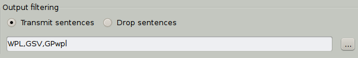
Transmitting three sentences.
Send to GPS

Dropping them instead.
Connection Notes
- If a NMEA sentence is filtered on an input connection, it will still enter the internal multiplexer. So, it will be available to output connections, unless it's filtered there as well. This will only work for serial connections. Echoing back a network connection, on the input port for output, will not work
- If you do UDP re-broadcasting, then you should set the priority of the "real" NMEA input to something higher than the UDP stream. If not, prepare for problems. The reason is that if you are broadcasting, then you yourself will get the UDP message as well, which again will be retransmitted...... Obviously, it duplicates the "real" incoming data. Thus we get source priority flip-flop on each message, since they have the same priority. For example set the UDP priority to "0" and real incoming connection to "1" or higher.
- When using an UDP... the UDP address is necessary only for output connections, and may be x.x.x.255 for broadcast. On input, it is strictly not necessary, but recommended, to specify an address. The port is necessary for both input and output, default is 10110.
- NMEA data can also come from the VDR plugin. They will be labeled as such in the Debug Window and have "0" priority.
Sending an Active Route to an Autopilot
- On Route activation, OpenCPN sends the ECRMB, ECRMC and ECAPB NMEA sentences to an Auto Pilot, if it is connected to a port, with output activated.
Sending Routes and Waypoints to a GPS
- The feature "Send to GPS", which appears in the right click menus for waypoints and routes and in the Route Manager, is not linked to connections. The upload port does not even need to appear in the Datastream connections list. Its a completely separate concept. For this reason users must define a separate upload port, that is remembered by OpenCPN. The port can be changed by clicking the button in the Route Manager.
- NMEA provides no handshake protocol for Route and Waypoint upload. So, OpenCPN simply sends the Route/WP information out on the port, without having any way to know if there is actually a device connected to the port.
- The Garmin protocol does provide handshaking, so OpenCPN can be sure that the information is uploaded correctly. The Garmin protocol will fail if the device is not a Garmin.
- In the case of standard NMEA, the indication "Route successfully uploaded"
is not very meaningful. You can say that it just means that a port was found,
and writing to that port succeeded. - In the case of "hockey puck" GPS receivers, they probably ignore Route and WP uploads, since there is nothing for them to do with this information anyway.
- The key to remember is that Route and Waypoint upload process is completely independent of normal running Datastream operation. They are two separate sub-systems.
- It does no harm to assign the Datastream GPS port as an output and input device together. Some users might reasonably expect that this would be required for Route and W/P uploads. Most GPS receivers would ignore input sentences other than Route and W/P uploads anyway.
Hot Keys and Shortcuts
The Hot Keys, native to OpenCPN, are described below.These may not work for you, depending on other settings on your computer.- Ctrl + Space Man Over Board, sets MOB Marker at current GPS position.
- Left clicking on a chart, centers the chart on that point.
- Double clicking a vector chart, displays all info for that point (exception below).
- When the cursor becomes a green arrow, clicking pans in the direction od the arrow.
- Double clicking on an AIS target, displays the target query dialog.
- Double clicking on a mark or waypoint, displays the Mark Properties Dialog
- Double clicking on a route or track, displays the Route/Track Properties Dialog
- Right clicking on any chart, access a context sensitive menu.
- Keyboard Arrow Keys. Moves the chart view
- Alt + Arrow Keys. Moves the chart view in very small steps.
- + Zoom In,
- - Zoom Out
- Ctrl + for fine scale zooming in.
- Ctrl - for fine scale zooming out.
- Ctrl + scroll wheel, zooming in/out in small steps.
- Esc ends the process of route creation or stops the measure pencil.
- F2 Toggle Auto Follow on / off.
- F4 Starts the measure tool. Esc Stops it.
- F5 Toggle Daylight, Dusk and Night mode, if it is built into the Chart.
- F6 General Dimming, in steps, of the entire Screen.
- SHIFT + F6 reverses the dimming.
- F7 or Ctrl + Left-Arrow Larger Scale Chart (Scale In)
- F8 or Ctrl + Right-Arrow Smaller Scale Chart (Scale Out)
- F9 Chart Quilting temoratily off/on, if quilting is on in the ToolBox
- F11 Toggle Full Screen view.
- Enter or Space Drops a Marker at current GPS position.
- Ctrl + B hide/show the Chart Bar.
- Ctrl + G cycles through (monochromatic) green, red and normal screen.∗
- Ctrl + M Drops Marker at current cursor position.
- Ctrl + Q Quits OpenCPN
- Ctrl + R Starts the Routing tool. Esc ends creating route.
- Ctrl + Y Redo Mark/waypoint create, move or delete.
- Ctrl + Z Undo Mark/waypoint create, move or delete.
- A toggles objects related to anchoring, includig cables etc. ENC Mariners Standard display category.
- L toggles all Lights on/off. ENC Mariners Standard display category.
- O or F12 Show / Hide Chart Outlines.
- T or F3 Show / Hide ENC Text.
- S Show / Hide ENC soundings.
- A Show /Hide bottom features, usefull when anchoring.
- D Show /Hide CM93 Detail Slider. Hide only works, if the slider lost focus.
Advanced Features
- Only edit to the opencpn.ini (opencpn.conf) file when OpenCPN isn't running.
AIS
For a general introduction to AIS, Wikipedia is a good place to start.
The screen-dump below gives you a first feel for how AIS targets are presented and used in OpenCPN.

The Lookahead mode is activated here and our own vessel is
proceeding 352 deg at 13.8 kts, leaving an activated track behind, and
projecting a dashed line ahead representing the course. This ends in a
dot, that represents where we will be in 6 minutes, or 1.38 nautical
miles ahead. We are meeting a vessel, steaming in the opposite direction
following the traffic separation. This target also has a line and a dot
in-front of it representing course and where it will be in 6
minutes(user configurable), and a track behind it.. The two blue dots
with a red/yellow line between them, represents where the vessels will
be at CPA - closest point of approach, or when the are nearest each
other, with present courses and speeds. The meeting vessel is red, as it is a potential danger to us. An AIS target alert dialog has just popped up.
There is a lot of information about the vessels that transmits AIS signals.

The cursor is on top of the the meeting vessel on a SW course. As we
have not yet received full information, this can take a while, we don't
get the name but an id number, the so called MMSI number, instead.
Exactly what is shown in the yellow pop-up is configured in the AIS tabs
Rollover heading.

This vessel is identified by name, and has a green color, as it does not represent any danger to our navigation.

If we instead of just hovering the cursor on an object, double
click it, the dialog above pops up. A lot of relevant information is
displayed. TCPA is the time until CPA, how long before we are at the
closest point to the other vessel.

Right-clicking a target brings up a dialog focused on AIS.
The AIS Target List
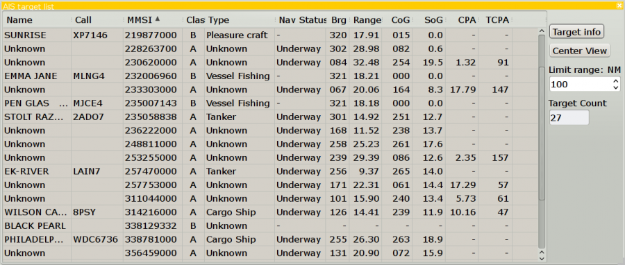
Another way to present the AIS information. The AIS target list is available through the right click menu. Click on the header in a column to sort according to this criteria. For example, clicking "Range" sorts the targets with the nearest target on top. Click one more time to get the target, furthest away on top.
Active Search And Rescue Target (SART) and Digital Selective Calling (DSC) distress targets, will always stay at the top of the list, even when sorting.
AIS targets with Lat > +/-85 deg will show brg "unavailable". OpenCPN is not suited for Polar Navigation.
Target Info button: Click on a target to highlight it and then click the button to display the information dialog.
Center View button: Highlight a target an click this button and the screen will center on the target.
Limit Range: The list will only show targets with a range less than, or equal to this value.
Target Count: Total number of AIS targets.
AIS Transponder and Ownship.
OpenCPN 3.2 does not show the ownship (i.e. AIVDO message) neither as
an AIS target, nor in the target list. AIVDO is processed only in the
main navigation thread.
Earlier releases did show ownship, but this was a bug, simply an illusion.
The earlier presence of AIVDO (ownship) information in the data stream,
really only indicated that the transponder was turned on and received
GPS signals. The only true way to monitor the output of a transponder, is with a separate AIS receiver.
AIS data port
Select your AIS input port in the Connection Tab. The AIS button in
the ToolBar, appears different according to the following conditions.
 AIS Alive. The default AIS button. This icon appears as soon as an AIS
port is active in the tool-box. It is also the normal state with an AIS
receiver working and with no targets of interest.
AIS Alive. The default AIS button. This icon appears as soon as an AIS
port is active in the tool-box. It is also the normal state with an AIS
receiver working and with no targets of interest.
AIS
Alive and Activity, a small green circle will illuminate in the lower
right corner of the Ais buton. If there is at least one AIS message
every 4 seconds, the light will remain illuminated.
 AIS Suppressed. This icon indicates only that target suppression is
activated in the AIS tab in the ToolBox. Referring to the picture above
there are two sort of suppression:
AIS Suppressed. This icon indicates only that target suppression is
activated in the AIS tab in the ToolBox. Referring to the picture above
there are two sort of suppression:
* Suppress display of all moored/anchored targets, max speed specified in dialog.
* Suppress Alerts for moored/anchored targets.
This icon will be over-ridden with the AIS alarm button if an alarm is,
or becomes, active according to the AIS tab alarms settings in the
toolbox.
 AIS Alarm. A target exist that raises the alarm as defined in the AIS
tab in the ToolBox. It is the three settings "CPA Calculations", that
rules if and when an alarm is raised.
AIS Alarm. A target exist that raises the alarm as defined in the AIS
tab in the ToolBox. It is the three settings "CPA Calculations", that
rules if and when an alarm is raised.
AIS Disabled. No targets, if available, are shown on the screen. This
button toggles with the other buttons. For example, if the AIS alarm
button is visible, click the button and it will change to the "AIS
Disabled" button, and all targets, alarms etc, disappears from the
display. Click again and the original button and AIS display comes back.
The ToolBox AIS Tab

This tab controls the behavior of many thing in the
AIS display. There are no "best" settings. It all depend on where you
are, what kind of navigation you are into and what kind of vessel you
are on. It is your responsibility to evaluate this.
CPA calculation: Rules for when the Closest Point of
Approach- CPA (when two vessels are nearest each other) is calculated
and when warnings are activated.
There are three tick boxes, which can be activated with user set values.
1. If the vessel is far away it is less interesting to
calculate CPA. In a busy waterway this could cut down on clutter and
processing speed if a reasonable value is set.
2. Similar arguments to No 1. This controls when a
warning for minimum CPA distance is given. A warning can be both on the
screen and a sound. The CPA is shown on the screen when a warning is
active.
3. Similar to No 2 this controls the alarm based on a minimum time to CPA.
If a target is within the distance set in #1 and without an active
warning, theCPA can bi shown anyway through right-clicking on the
target.

"Show Target CPA" toggles with "Hide Target CPA"
More About Target CPA, a few more tricks are available.
Lost Targets: Rules for how lost targets should be handled on the display.
1. Target is regarded as lost if no transmission are
received for the number of minutes set here, the target will change on
the display and have a black bar across.
2. The lost target will be removed from the display after the number of minutes set here.
Display: If and how a vessels course and speed should be displayed and if stationary vessels should be on the screen.
1. An arrow will be shown in front of the vessel
representing it's COG (Course Over Ground). The length of this arrow and
the dot at the end of it represents the calculated position in the
number of minutes set here. Set easily calculated values. If a vessel
approaches you doing 15 kts and the time is set to 6 minutes, the dot
will be 1.5 nautical miles ahead of the vessel.
2. A track will be shown behind a target. This helps to judge the target vessels intentions.

3. An anchored or moored target  will not be displayed if the speed is less than the value set here.
This "Navigational Staus" is set by the ships and may not be correct.
will not be displayed if the speed is less than the value set here.
This "Navigational Staus" is set by the ships and may not be correct.
Be aware that the COG arrow will not be shown for any target with a COG
less than this value, hence it's important to enter a very low value.
4. Show Area Notices. More about AIS Area Messages here.
5. Show AIS targets real size. Zooming in on a target will eventually show a rectangle using the real size , if available.

Rollover: Tick the boxes for the kind of information
shown when hovering with the cursor over a target. This is what you get
with all the settings ticked.

CPA/TCPA Alerts: When an alert is triggered, a jagged
circle in red is drawn around the target that set off the alarm.
Additional events can be set here, drawing more attention to the alarm.
For practical navigation, make sure your alarm sound is set.
1. Shows an alert dialog on the screen with target information when an alarm is triggered.
2. Sounds an alarm when an alarm is triggered.
3. Don't show alarms for anchored and moored targets.
Select Alert Sound. Select an alarm that suits you.
This alarm will also be used if an anchor watch is set. Due to copyright
issues, only a few sound files are included. Users can add their own
generic ".wav" sound files. The location for these files are
"/usr/local/share/opencpn/sounds/" on Linux and typically C:\Program
Files\OpenCPN\sounds on Windows XP.
Test Alert Sound. Test the selected sound and make sure this important feature is working
Enable Target Alert Acknowledge timeout. Once a target alert is acknowledged, wait the set number of minutes before the alert comes up again (if still applicable).
.
When exactly is an alarm activated?
An alert is set off if your boat is approaching the CPA, the blue dot on the extension of the course line, and the previously discussed set of conditions are met. Once the distance to the CPA increases, this happens when the involved vessels has passed each other, the alarm stops, even if the other conditions still apply.
+++
Quick Reference for targets:
Note that AIS targets reporting position unavailable will be rendered in grey colour.
 An active AIS SART and is a distress call equal to a "Mayday" transmission.
An active AIS SART and is a distress call equal to a "Mayday" transmission.
More about AIS SART.
 Icon displayed when testing an AIS-SART device.
Icon displayed when testing an AIS-SART device.
 Potential Danger.
Potential Danger.
 No Danger. Not Identified (Name not received)
No Danger. Not Identified (Name not received)
 No Danger. Identified
No Danger. Identified
Lost Target
 Ship which has lost fix - position unavailable. Displayed at the last known position.
Ship which has lost fix - position unavailable. Displayed at the last known position.
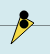 Vessel not under command.
 Vessel restricted in ability to manoeuvre.
Vessel restricted in ability to manoeuvre.
Vessel constrained by draft.
Vessel aground.
 Vessel engaged in fishing.
Vessel engaged in fishing.
 High Speed- and Wing In Ground- crafts. This includes Hydrofoils,
Hovercrafts and low flying crafts utilising the ground effect.
High Speed- and Wing In Ground- crafts. This includes Hydrofoils,
Hovercrafts and low flying crafts utilising the ground effect.
Anchored or moored. Displayed when the transmitted "Navigation status"
is "at anchor". There is no guarantee that this status is correct, as it
is set manually on the transmitting ship...
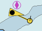...illustrated
by this ship. Note the black line on the yellow circle. This indicate
that the vessel is turning to port (left), also illustrated by the lag
in the display update. ROT - Rate Of Turn is available in the "Ais
Target Query" dialog, through the right click menu.
 The V-shape stern indicates a Class B target. Tugboats and pilot boats
very often carry Class B transponders. These are often designed
specifically for small commercial boats, fishing boats and pleasure
crafts.
The V-shape stern indicates a Class B target. Tugboats and pilot boats
very often carry Class B transponders. These are often designed
specifically for small commercial boats, fishing boats and pleasure
crafts.
 This "Inland Blue Flag" part of the European, Inland AIS standard,
"Blue Flag" signal, commonly seen on inland waters indicates that the
vessel requests a "stbd-stbd" passage or crossing. This Blue Signal is
manually switched on/off, by the target.
This "Inland Blue Flag" part of the European, Inland AIS standard,
"Blue Flag" signal, commonly seen on inland waters indicates that the
vessel requests a "stbd-stbd" passage or crossing. This Blue Signal is
manually switched on/off, by the target.
 Aton, Aid to Navigation, for example a Lighthouse or a Buoy with an AIS transmitter.
Aton, Aid to Navigation, for example a Lighthouse or a Buoy with an AIS transmitter.
 Aton, Aid to Navigation, that is off it's suposed position. For example a buoy equiped with AIS that has come adrift.
Aton, Aid to Navigation, that is off it's suposed position. For example a buoy equiped with AIS that has come adrift.
 Virtual Aton, Virtual Aid to Navigation, not a real marker. Can be useful for a range of situations.
Virtual Aton, Virtual Aid to Navigation, not a real marker. Can be useful for a range of situations.
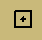 AIS Base Statio
The following tagets only displays if DSC messages and GpsGate mesages
are mixed in to the incomming AIS stream, by using, for example a
multiplexer. More on next page.
 DSC Station
DSC Station
 DSC Station transmitting a distress signal. Treat this as a "Mayday" call.
DSC Station transmitting a distress signal. Treat this as a "Mayday" call.
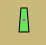 GpsGate Buddy target.
 Go to Table Of Contents
Go to Table Of Contents
AIS SART
The US FCC has recently approved transmissions by AIS SART devices. These devices were originally designed for SOLAS class ships as an alternative to radar SARTs for carriage on life boats, but the efficiency of design has encouraged applications down to man-over-board devices. (www.exactearth.com/media-centre/exactblog,May 3, 2012)Search And Rescue Transponders (SART) or an EPIRB, transmitting AIS messages are now available on the market. In an emergency situation the position will be displayed as an AIS target in OpenCPN. AIS SART can be a device on a vessel, in a life raft or a personal Man Over Board (MOB) device. The common thing is that the icon below marks an emergency.
On OpenCPN a distress signal sent by a SART, triggers an visual alert and a warning sound, if this is activated in the ToolBox-->AIS Tab.
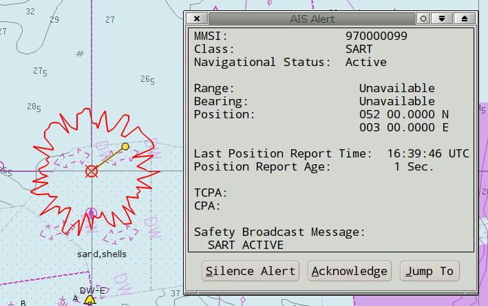
Once the alert is "Acknowledged", the target behaves as any other AIS target. In the picture below the cursor is over the target.

And here is an AIS target query.

AIS SART messages and DSC distress calls are always found at the top of the AIS target list.

Testing
It is possible to test a SART, to make sure it works.
AIS Area Messages
To display the messages, tick the Options->Ships->AIS Targets->Show area notices(from AIS binary messages).Many countries around the maritime world are testing the AIS binary messages. Expect a lot of development in this area.
In OpenCPN, this is very much a work in progress, the areas were only added April 2012 and the messages in December 2012.
Areas and the messages included for each area, are available.
In the US, Cape Cod is transmitting experimental Right Whale information. For testing, copy vislab-ccom.unh.edu/ais/notices.aivdm into a text file and point the VDR (Voyage Data Recording) plugin to this file.
These messages are updated quite often.
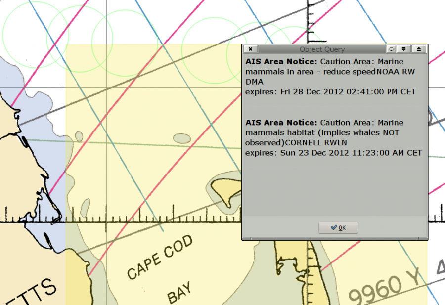
The area messages are found as the first entries in a normal object query for vectorcharts. The easiest way to display this dialog is to just double click in an area. The screen picture above shows that this works for RNC:s (raster charts) as well as ENC:s (vector charts). The first notice above is for the yellow tinted rectangular area while he second notice is for one of the circles outlined in green.
More About Target CPA
OpenCPN displays warnings about targets CPA & TCPA according to the setup in the AIS tab. But it's also possible to show CPA & TCPA for any target, that is no immediate danger, but where internal CPA calculation is still done, to assist in the decision making.The AIS rollover window shows the CPA and TCPA of a target :

But it doesn't tell us where we and the target are at CPA, and if the target passes in front of us or behind us (i.e. should we speed up or slow down ?).
See the following (real) example:
We are sailing hard on the wind, while a vessel is approaching us, more or less from the wind direction. A CPA of 0.78 miles is normally safe, but there is this island in our way, meaning we had to tack towards the vessel, and it is still 14 minutes to go ...

What will happen with our CPA after the tack ?
Have we already passed each other or do we get closer when tacking just in front of the island ?
The answer to these questions is a context sensitive menu for AIS targets. Move the
mouse over the target, and when you see the CPA / TCPA info in the rollover window,

you can right click and select “Show AIS Target CPA”.

The function is only available when we have a “valid CPA”, i.e. when the rollover shows
CPA and TCPA (it uses the internal CPA calculation).
It simply shows the “CPA line” which is used in case of a CPA alert :
Showing the CPA-line as in the screen-shot above, makes life much easier. Nothing to worry about ...
At CPA ...
• we will be just in front of the island, exactly at our tacking position and
• she'll already be behind us (CPA line points backwards from our CPA position)
The CPA line is constantly updated, so you can follow the situation.
This is, what it looked like directly after our tack

To get rid of the CPA line for a specific target, right-click on the target and select “Hide AIS Target CPA”.

As already mentioned, the CPA line is shown only, when there is a valid CPA.
A minute later, we don't have a CPA anymore for the target --> the CPA line isn't drawn anymore !.

Another example :

He'll pass behind us, so “full steam ahead !”
Monitoring several targets
You can also monitor more than one target in parallel. Simply right-click on a second target and “Show AIS target CPA line”
Situation could be :
What happens to a second target if I get out of the way of the first one ?

DSC and Buddy via AIS.
If DSC or GPSGate Buddy-messages are available in an incoming data stream, OpenCPN will show them with their own icons, and they will show in the "AIS Target list". They are not a part of AIS, but are displayed the same way, for convince.DSC is used on all new VHF set (or should be!). More on Wikipedia.
GPSGate is a commercial service GPS tracking and sharing. GPSGate Buddy Tracking is part of this service.
Quick Reference.
GpsGate Buddy target.
A normal DSC target, is someone using a dsc-capable VHF

Distress message via DSC, Digital selective Calling, from an unidentified AIS target.

A green Buddy target on an island.
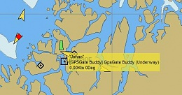
The AIS Target List View

Extended Marks
The properties of Extended marks described on this page expands the use of marks.
It is now possible, for example, to make a interactive Cruising Pilot.
An extended mark is sometimes called a POI, a point of interest.
The "Mark/WP Properties" looks like this for a default mark.

The dialog is available by double-clicking the mark, in the right-click menu or through the Route Manager.
The Basic tab.
Name: Give the mark a suitable name. This will be visible on the chart, but can be hidden by un-ticking the Show Name box.
Icon: Change the default icon for the mark. Only the "Name" will be displayed if selecting the "Empty" icon.
The position of the mark: You can drag the mark with the mouse to the desired position or enter the correct Latitude and Longitude in these fields.
Right clicking anywhere in the latitude or longitude display gives you the sub dialog shown above. Latitude and longitude can be copied separately or together. A copied lat/long will be available in the paste buffer, and will be displayed if you activate the "Jump to position..." dialog. It is also possible to paste a position. A Paste will try to be smart about parsing the format, and accepts a lot of different syntaxes. Even the GPX <wpt lat="0.00" long="0.00"> should work.
Description: Enter anything about the mark. Long descriptions can be read easier by switching to the Description Tab. See examples below.


Links: Marks can, as an option, have embedded links to the Internet or the the local computer. These are either opened in the default browser or through the default application, for example for pictures or pdf files.
For security reasons, the links does not work for launching other programs.
Create a link by pressing Add. Give the link a good description in the new dialog.
Enter an Internet address in URL or find a local file through the button Local File..

The new link will appear under Links. Add more links as required.
Edit links by pressing the "Edit" button. The description will change from "Links are opened in the default browser." to " Links are opened for editing" when the button is pressed. The color of the "Edit" button gets a grayer shade when it is pressed down. Press once more to release the button. Press once - the button is down. Press again - the button is released and goes up.


Right-click an existing link for a related action menu.

In the illustrated case, the link was to a local JPG picture, that opens in the default program associated with the jpg extension.
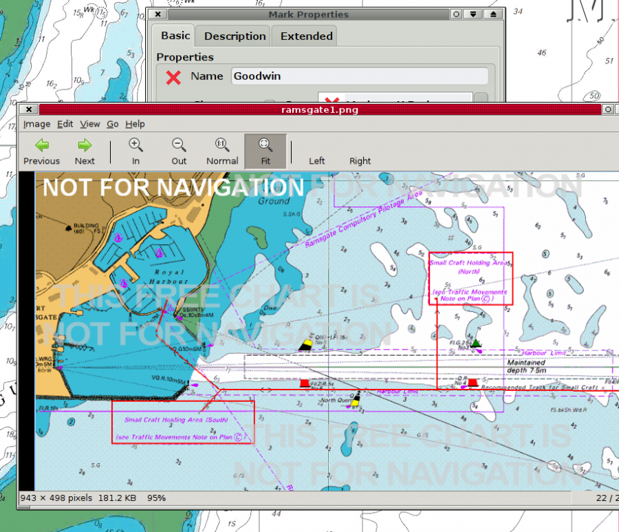
If the mark belongs to a Layer, it can't be changed. A warning about this appears above the name of the mark
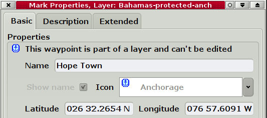
The Description Tab
This is simply an expanded view of the Description box in the Basic tab.
The Extended Tab
Show on Chart: Untick this box, and the mark will not show on the chart. To make it visible again, use the Route Managers Waypoint Tab. Click the "Icon" column, to the far left, on the line with the waypoint.
GUID is a unique identifier for the mark.
The Route Manager and Gpx Data
- Through the Route Manager OpenCPN can save and load waypoints, routes, tracks and layers using the GPX transfer format.
- This lets you save your routes and marks so you can have more than the active ones - for example to do route planning, or archive existing data.
- GPX format is supported by a wide variety of programs.
- You can have as many saved files as you wish, there are no limits on the number of saved files.
- Use this for passage planning by saving multiple possible routes for a passage.
- Save routes and tracks for historical/log purposes.
- Prepare layers as an aid to navigation en route.
- All Navigation Objects on this page, except for "Temporary Layers", are persistent between sessions. More here:Navigation Data Backup
- All objects visibility is toggled by clicking the "eye", or other icon, to the left of the route/track/waypoint name on each line.
- All objects can be sorted by the header in the columns in the Manager. By clicking "Route Name below, the routes will be sorted alphabetically, pressing once again reverses the order. Similar for the column "To", the destination.
- Double-clicking on a Waypoint, Route or Track brings up the respective Properties dialog.
Routes

- Click the "eye" to the far left on the line with the route to toggle if the route is displayed or hidden on the chart. A small dialog let you choose, if existing marks, included in a route, will also become invisible. Once a route is deleted, such a mark will go back to be a "normal" waypoint.
- To Sort routes click "Route Name" or "To"
- Properties:This button brings up a new dialog with settings that can be changed for each route.

- Wpt 005 is right-clicked, and new dialog has popped up. The waypoint properties can be reached and edited. For example, change the default name, "005" in this case, to something more appropriate. Read more in the Extended Marks section. The waypoint can also be deleted. The last entry, "Copy all as text" copies all Route Properties for pasting into a text or Spreadsheet document.

- Plan Speed The overall planned speed for the route. The speed for each leg can be set by going to the waypoint Properties->Description tab for the waypoint that starts the leg, and write in the speed. For example " VMG=9.7". [Unfortunately this approach presently excludes writing descriptions for the waypoint. One or the other, be warned!]
- Departure Time:With no departure time the ETE
(Estimated Time En route) is calculated. Enter a Departure Time and the
ETA will be calculated. Make sure to press "Enter/Return" after entering
a departure time. This guarantees that the entered time is used in
calculations.
To enter the present time, enter ">" (meaning: "Now") in the departure time box. This works provided "Time shown as" -> Local@PC is selected. Press "Enter" and all the times in the "ETA" column will change. ">" differs from entering the same tim manually, say "5/23/2011 08:00":
- "5/23/2011 08:00" - calculates departure at 0800 on May 23rd 2011 from the first waypoint of the route
- ">" - issued at 0800 on May 23rd 2011 - calculates departure Now from the current boat position, including the distance to the first waypoint of the route - Times shown as: UTC is a new name for GMT. LMT is a local mean time based on the present longitude. For Local Zone Time one can also enter the keyword "now".
- Color: Set the displayed color of the track or keep the default.
- Style: Solid, dashes, dots, a combination or keep the default.
- Width: Set the width of the track or keep or keep the default.
- Marking a line with the leg number and the destination Waypoint in
the Properties Dialog also marks the Waypoint on the chart with a blue
square.

- 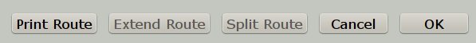 The lower part of the Route properties dialog now has a Print Route button. It is possible to first select what features to print before being sent to the normal print routine.
- Extend Route:Extending is possible only when it is
obvious, what should be joined with the current route (current =
visible in the Dialog). Eligible are all visible route points shared
with, or lying nearby to the current route's endpoint. If there is
exactly 1 such point, then it is considered obvious, and the Extend
button is enabled. If there are more, some should be hidden before
proceeding, until just 1 remains.
Routes are extended forward, based on the geographic location, next route point must be very near, as when mouse-extending the route. If the next route point is to far away for extending, just create the joining leg and extend twice. - Split Route:For splitting, the split point is selected as the row in the listing. The point-of-split becomes part of both new routes (shared) or tracks (cloned). Original route/track is deleted.
- Here is a basic example of first splitting then extending. The test route is shown below
 "Split Test_A"
"Split Test_A"- In the Route Managers property dialog for the route we have selected a waypoint where we would like to split the route. The "Split Test" Route now consists of two parts, that has been renamed.

- Next we extend the first leg "Split Test_A" with the second leg "Split Test_B". This extended route s now named "Split Test_B_plus.

- Activate/Deactivate: Activates/Deactivates a route marked in the left part of the window.
- Zoom to: Zooms in on a route marked in the left part of the window.
- Reverse: Reverses a selected route.
- Delete: Deletes selected route or track. Use the Shift key to mark multiple routes for deletion. This also work in the other Route manager tabs.
- Export Route: Save the route on your computer for later use (import)
- Send to GPS. Send the Route to your GPS. Pressing
the button activates a dialog were an output port is selected. This port
does not have to be listed in "Connnections" as it is an independent
feature. This choice also appears in the right click menu for routes and
waypoints. For Garmin Users, make sure that the
ToolBox->GPS->"Use Garmin GRMN/GRMN(Host) mode for Waypoint and
Route uploads" box is ticked. The reason for this is that Garmin units
cannot accept route uploads via NMEA0183. This is a "design feature" of
all Garmin receivers.

- Delete All. Be careful. If you know you have saved the routes on your computer and are able to import the again, this is a simple way to clear the screen from routes. Better be safe than sorry, so save before deleting, if you want to be able to use the routes again.
- Import. Import one or more previously saved Routes. It is possible to select and import multiple routes.
- Export All, now called "Export All Visible..." Saves all visible routes, waypoints and layers, in one gpx file. This is done through a normal file saving dialog.
- If a Tidal Height Curve Dialog, for an individual tidal station is
shown on the screen, the tidal situation for this station will be
tabulated along all route points in the route properties dialog. It is
essential to enter a departure time and a planned speed. Once "Enter" is
pressed the tidal column will show the nearest High or Low water
considering the ETA at each waypoint.


- If no tide dialog for any station is open and a waypoints name contains the string @~~<name>, for example "@~~York Spit Light", then the tide report for the closest station with matching name is shown in the tide column for this waypoint. The most appropriate tidal station for each waypoint can thus be selected.
- When entering a departure time the ETA, Expected Time of Arrival will be shown, instead of ETE, Expected Time En-route.
- The individual waypoints "Description" field can contain the
setting of planned speed specific just to the next route leg (e.g.
"VMG=4.5;") and/or the specification of Estimated Time of Departure from
this waypoint (e.g. " ETD=2/14/2011 12:00;"), allowing for planning
extended stopovers. Time can be specified as UT, LMT or local zone time
at the PC (default).

- Make sure that you have read all about Automatic Daily tracks and track Highlighting in the Documentation for the Toolbox Settings
- The visibility of tracks is controlled by clicking the "eye" on each line. Tracks can be sorted by clicking the column headers.
- Tracks are extended backward, based on the time-stamp sequence, a track is selected, which ends as the latest one before the start of current track. Tracks are extended as a single segment if they share the extending point. If they ha no common point a new "empty" segment, with no visible track, is added. Joining two tracks (i.e. extending a track) results in just track one remaining. It may look like two tracks but the Route Manager treats it as a single track.
- "Merge Selected Tracks" is an alternative to "Extend Track", where tracks are joined. The difference is that Merged tracks are visibly joined by straight track-lines. Read on for instructions on merging tracks.
- If you have ever hit the Track icon by mistake, or closed down OpenCPN in the middle of a passage, you know that it's very frustrating it is, to have a voyage split up in a number of different tracks that does not come together.
- This can be fixed. Just select any number of tracks in the Track tab of the Route Manager window, right click the mouse to bring up the context menu, and choose to Merge Selected Tracks. The selected tracks will be merged in chronological order, with the track properties (name, color etc) of the resulting track keeping those of the earliest track in the selection.
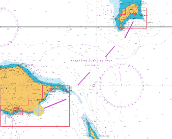

- "Copy as text" copies the track name, unless it's the default time stamp, and the track distance.
- The result of clicking the merge button.

Reduce Track Data
- Do you have have massive amounts of tracks and finds them bogging down OpenCPN? This feature is for you!
- It is available from the context menu in the Track Manager. Right click on an existing track, and then click "Reduce Data..." .

- Pick one of the options, it reduces the amount of points in an existing track while maintaining the specified maximum error between the original track and the reduced track. Testing on an old OpenCPN track or an imported track, with an error setting of 10 or 20 meters tracks, will, in many cases, reduce the size to less than half and one can't really see the difference.
- Tracks made with the new intelligent dynamic tracking available in OpenCPN 3.2 will not reduce much, unless a large error is tolerated.

Waypoints
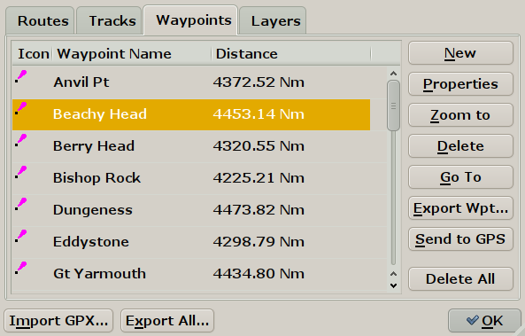
- Control the visibility of each waypoint by clicking the waypoint icon to the left on each line. Sort the waypoints by clicking the column headers.
- New. Create a new waypoint. This brings up the properties dialog.
- Properties. All about the dialog in Extended Marks
- Zoom to centers the chart display on the waypoint.
- Go To. Makes an instant route from present position to the mark and activates the route. A similar instant route is created by right clicking and selecting "Go To Here" without first creating a mark. This instant route will be listed in the Route Tab.
- Export Wpt and Send to GPS buttons behaves similar to corresponding buttons for Routes.
- Delete All, does not delete any Man Over Board marks. All other marks are deleted.
- Use the Shift key to mark multiple waypoints for deletion. This also work in the other Route manager tabs.
Layers
- Layers are one or more routes, tracks or waypoints that have been saved together in a gpx file. A layer is represented as a single gpx file. A layer is persistent and protected from changes. A waypoint in a gpx file for example, can be imported either as a "waypoint" or as a layer. The difference is that when imported as a layer it cannot be changed or deleted.
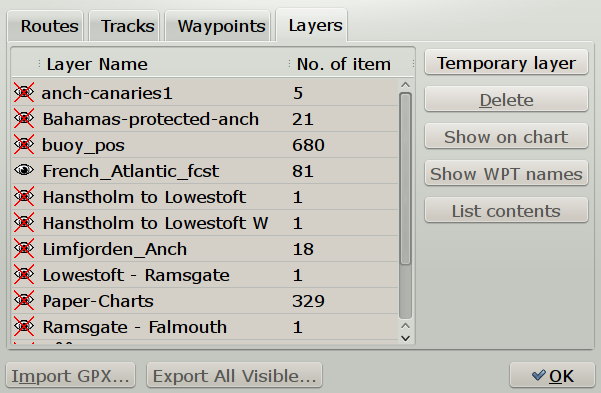
The Route Managers Layer Tab

- Layers are useful for many things. It can for example be used to update charts with new navigation marks and dangers as per Notices to Mariners, and to add Radio Call-In Points or to build a database of lights and locations, that will be visible on chart regardless of current scale. See the first picture above, where French and UK forecast areas are good examples of Layers. In the second picture, a very good celestial fix, plotted with a gpx script has been saved as a layer.
- More advanced uses could for example be an interactive cruising guide, using the possibility to embed links in waypoint descriptions.
When is a feature a part of a Layer?
- Layers are immutable, nothing can be changed. This could make them confusing, unless you are aware of the fact that they are .... layers!
- To see if a waypoint, route or track, is a part of a layer,
right-click the object. If it is part of a layer, the context sensitive
menu will say so. Alternatively, open properties and check the top of
the dialog, if part of a layer, the layers name is printed. As
always,double clicking on a object, directly brings up the properties
dialog,


- A route belonging to a layer is also identified as such, by just hovering with the cursor above the route.

- A Route belonging to a layer also has the option "Activate". It can thus be used, but still, no changes can be made. A much more flexible option, would be to import the route layer file as a normal gpx file.
Handling Layers
- Layers can be created in OpenCPN, and saved as a gpx file, or be created offline, manually or by scripts, for example.
- Layers that are saved in a directory called "layers", in the same place that holds your opencpn.ini(config) file, are automatically loaded on start of OpenCPN. These layers will be listed in the Route Managers Layers Tab on start up. The first time they will all be visible. Adjust visibility by clicking on the "eye" in the first column. This setting will be remembered. Have a look at the first picture on this page!
- The easiest way to find this directory is to go to the - button in the ToolBar and look all the way down in the first tab (About).
In Linux create the directory: /home/$USER/.opencpn/layers. - On Mac OS X, the location is "/Users/"user name"/Library/Preferences/User Icons". Note that "library" is a hidden directory in "Lion".
- Any subdirectories in the layers directory, are also loaded.
- Layers worth keeping, could be kept in the mentioned "layers" directory and visibility during a session can be handled through "Hide from Chart" or "Show on Chart" buttons. New layers, gpx files, can easily be added in a subdirectory of it's own.
- A few restrictions apply to layer marks. A layer mark cannot be used to set anchor-watch on. If right-click-selecting co-located objects, priority is given to non-layer objects.
The Route Managers Layer Tab
- Temporary layer: Any gpx file can be imported as a layer. This can be used for developing layers, or for import from a user defined directory with predefined layers, as necessary. Layers imported this way will be saved when closing down the computer, they are persistent. More permanent layers should be kept in the "layers" directory, as described above.
- Delete: Unloads the layer, but doesn't of course touch the originally imported gpx file. A progress bar will appear when deleting large layers. It is not possible to stop the deletion, once started. For size restrictions, see below.
- Hide from Chart or Show on Chart Controls if the marked layer is visible. The same thing can be achieved by clicking the "eye" to the left of the layers name. A red X across the eye marks a hidden layer. See picture above. These settings are persistent, they will be remembered after a restart.
- Hide WPT Names Shows a visible layer without waypoint names. This helps to un-clutter layers, when zoomed out.
- List contents or Delist Contents Listing is this context means showing the individual points in the layer as waypoints in the "Waypoints Tab"
- Import GPX.. and Export All.. Warning these buttons has nothing to do with Layers. They work as if you are in an other tab. For import use "Import New Layers". For export, create layers as described above.
- Export All Visible.. exports all visible layers, routes and waypoints to a gpx file. Use this button to create new layers, for example. Just save the gpxfile in the right place, described above. Note that "visible" in this context is the opposite to a layer, route or waypoint being "hidden". This means that objects not visible on the screen, may be included.
- A progress bar will appear when exporting large layers. It is not possible to stop the deletion, once started. For size restrictions, see below.
- If a layer includes extended marks, linked to pictures, for example, the pictures will not be exported, only the links to the pictures. To "export" the whole layer to another computer, copy all the pictures separately. Adjust all the links in the gpx file, to the new computer, by doing a "search and replace" in a text editor on the new computer.
Size Limits for the Layer feature
- OpenCPN is presently not suited to handle very large permanent layer files. Exporting and deleting such layers bogs down the program. A few hundred Kb is OK, a 1 Mb file is barely acceptable, while a 10 Mb gpx file, certainly is way to big. With older hardware or limited available memory, even these recommendations may be to optimistic.
Where to find ready made Layers?
- A few samples are available in Download->Layers Library on the OpenCPN.org.
Great-circle Sailing
Very few cruising boats needs to use Great-circles, but it's certainly an important consideration for commercial vessels across the North Atlantic and North Pacific.
The advantage of a great circle is obvious, the shorter distance. The disadvantages, depending on latitude, could be quite a few. Colder weather, stronger winds, higher seas and perhaps even icebergs. The great circle is just one factor in the decision making, when planning a route, the weather is likely to be the deciding factor in most cases.
OpenCPN has a builtin Great-circle tool as well as a Great-circle plugin.
The built in Great-circle tool.
The "Measure" tool in the right-click menu and the "Create Route" button on the ToolBar switches seamlessly to a great circle mode when asked to do long distance tasks. This mainly happens when using these tools in some east-west direction and far away from the equator. The mode kicks in when the difference between the normal, rhumb line and the great circle becomes larger than two nautical miles. This will be some 0.2% to 0.5% of the total distance, depending on latitude and direction. When this happens a clear curve towards the pole will appear.
The Measure Tool

Testing the measure tool for Manila to San Francisco (approximately). For a good illustration to Great-circles, find a second point that is opposite the first, on the other side of the globe, and just move around slightly.

Once the first leg in measuring is done, it's plotted as a rhumb-line, to keep things simple. The active leg is still displayed as a Great-circle, if long enough. The distance displayed is the combined Great-circle distances.
The "Create Route" Tool
If you answer no to the above question, OpenCPN will use a traditional rhumb line for the leg. Answering yes, will kick the Great-circle option into action and a number of intermediary waypoint points will be created. There will be at least 3 waypoints. The exact number of waypoints is calculated by OpenCPN and is appropriate for most cases.

The created route is now available in the RouteManager dialog, as a normal route.

As a real example let us looka at a route from Mossel Baai South Africa, to the western entrance to Investigator Strait South Australia. The Rhumbline is 5660 mautilcal miles, and the Great-circle, as approximated by the created route is 5249 miles. The "real" Great-circle is som 15 miles shorter.
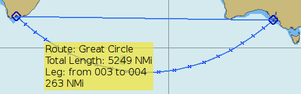
Composite Saling

Composite sailing is a Great-circle sailing with a maximum allowed latitude. OpenCPN has no such built option, but it's easy to create.
Above is the same route as before designed for composite sailing, not going further south than 45° S latitude. Start a route at Mossel Baai extend it until 45° S becomes a tangent to the visible Great-circle. End the route.

Do the same thing, starting with the destination and going backwards. Create a rhumbline route, using the two point along 45° S. The three routes together is the composite route. The total distance of the composite route is 5293 Nautical Miles.
Route Plugin
"Salty Paws" route plugin handles much more than Great circles, introduced here.

The plugin have a few features not present in the built-in tool. It can calculate a composite route, and the distance between the waypoints can be set by the user. The end result, however, is a "gpx" file that is exported, and then imported into OpenCPN via the Route Manager.

A Great-circle from Cook Strait to Cape Horn limited by 60° S
Using Routes
To include existing waypoints in a route
How to use split and extend - an example.
Hm...a bit of a miss in the planning. An islet with a shallow bank extending southward on our route. We put two marks north of the obstruction and would like to include these in our route.

The waypoint west of the islet is #2. We mark this in "Route Properties", from the right-click menu. The Button "Split Route" is highlighted, meaning it is available to use. This is exactly what we want to do, so we click the button and split the route at wpt #2.

Right click at #2 and choose "Append Waypoint",

Move the cursor to the first triangle, and answer yes to "Use nearby waypoint?".
Then move the cursor to the second triangle , and answer yes to "Use nearby waypoint?".
Same thing for the original wpt to the east of the islet.
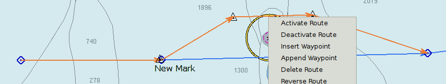
Click "Activate Route" to see that this extension worked.

Once again mark "Route Properties" in the right-click dialog. #3 is the last wpt in our "new" temporary route. The "Extend Route" button is highlighted, so we click it.

Open the Route Manager to view the result. Notice the naming of the routes. _B_plus is active. What remains is to delete route _B and to rename _B_plus to a suitable name, for example the name of your original route.

Deleting route _B.

And here is the finally adjusted route.
This was just an exercise.....in real life, it would be easier to just move the existing waypoints in the route, to avoid the Islet.
Weather Routing
OpenCPN can import optimized routes from the Free and OpenSource QtVlm
program. Make yourself familiar with QtVlm if you intend to use it, as
many things are done differently from OpenCPN.
QtVlm Thread on OpenCpn Cruiser's Forum
OpenCPN and QtVlm Summary of Route Transfer, see below

Once a route is created, the option "Copy" will be available in the right-click menu.
The option dialog above pops up when pressing "Copy".
Before going any further, make sure you really understand grib files, what they are and their limitations. A good place to start is Franks Singletons pages.
Let's look at an example of importing an optimized route from QtVlm. It's a situation most of us try to avoid. Going across the Bay of Biscay with an active Atlantic Low just west of the British Isles.
The busy, time constrained, delivery skipper intend to find the best route from Lizard Point to Cape Finisterre. He has entered into QtVlm, the constraint, to route away from more than 30 kts headwinds. Below is the QtVlm optimized route based on the latest available grib file. Note that QtVlm doesn't know anything about tidal streams, currents local squalls nor about the state of the crew etc. These are more reasons why the final route always is the responsibility of the skipper.

Right-click on the route and export in the kml format.

Open OpenCPN. Right-click and "Paste Route"

This looks a bit ugly, and both the route and all waypoint have been exported.
We want somthing better!

One alternative is to let QtVlm (Edit Route) "Simplify" the route before copying.

Another alternative is to first use the "Paste Track" option.
*Note that this is no true track, it's just another way of exporting a route, possible due to the KML format. A track describes where we have been in the past, while routing is planning for the future. Importing the track gives a "light-weight" overview of the suggested route. Read more about the Grib Weather Plugin.
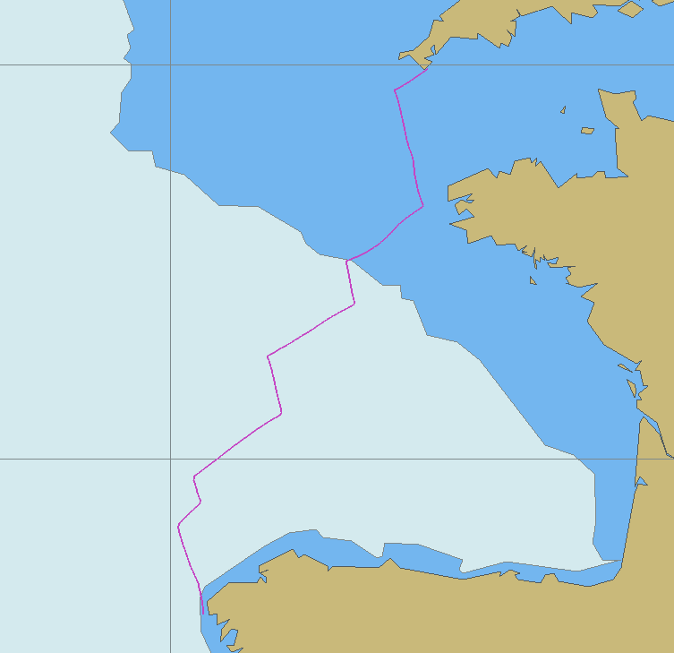
Next open OpenCPNs Route Manager Track Tab and press "Route from Track".

Much better. We now have a track with a route on top. Right-click and delete the track.
Next, it is smart to display the same gribfile, used by QtVlm, in OpenCPN, using the Grib Plugin.
All this looks impressive, but it's still based on a grib file. So it's still based on a computer prognosis, with no human input. All other reservations connected with gribs, still applies. An on board calibrated barometer is a good way to check what confidence can put on a grib forecast. Read more about the Grib Weather Plugin
A reasonable polar diagram is essential as well. Producing one is standard procedure on racing boats, but not that common on cruising boats. Cruising specific factors, such as "comfort" also plays a part in a cruisers true performance capabilities.
Summary of Route transfer process.
Using OpenCPN and qtVlm 4.8.2 in "Real Boat Mode"QtVlm English Documentation and Download is here .
Copy Routes
OpenCPN to QtVlm
- OpenCPN Right click on the route, pick "Copy as KML", Pick "KML with extended waypoint data (qtVlm)"
- QtVlm Right click on the Ocean, pick "Paste a Route" or Hit "CTRL-V"
QtVlm to OpenCPN
- QtVlm Right click on the route, pick "Copy Route xxx"
- OpenCPN Right click on the Ocean, pick "Paste Route"
Copy Tracks
OpenCPN to QtVlm
- OpenCPN Right click on the Track, pick "Copy as KML" Open Text Editor, Paste into new txt, save as .KML .
- QtVlm Pick "Routes- Imports Routes - In Ortho mode - browse to the directory, Pick the *.kml file.
- Note If all of the Track (now route) does not show up, current Grib data is not long enough.
- Note: Route Manager "Route from Track" selection, then simply copy the route.
- Note: Route Manager also provides Export Track as Gpx, however qtVlm does not support *.gpx format.
QtVlm to O
- QtVlm There are no tracks in qtVlm, just copy the route.
Planning Data
The examples shown on this page are all suitable for import as layers, as that will prevent any waypoint from being moved by mistake.
Need to see some offshore weather observations?
NOAAs NDBC site gives access to a lot of offshore observations from buoys and ships worldwide.
To easy visualize all this data the "ShipWxRep" script transform a limited set of all the available data into gpx waypoints. The format, as seen above is "wind direction, wind speed, time for observation, and air pressure". This can be helpful when evaluating the accuracy of grib files, even though the best tool in this respect probably is a calibrated digital barometer.
Plotting Miami Tropical Forecast Advisories.
If you only have access to low bandwidth Internet, this script is a way to quickly plot the contents of, for example an email, containing the forecast advisory. In any case, it is a good idea to have the forecast track of a tropical system available where you normally do your navigation and planning.
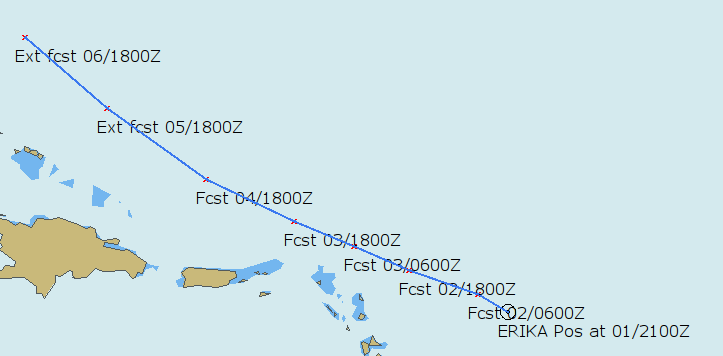
Download the gpx scripts here. The old great-circle script is included. For some help run each script without arguments.
Night Navigation
Dimming the whole screen for Nighttime Navigation.
Use the F6 key for dimming and SHIFT + F6 to reverse the dimming.This is not connected to a chart feature, and dims the whole display, not just OpenCPN.
"CTRL + G" cycles through (monochromatic) green, red and normal screen. The color change applies to the whole screen as well.
"Ctrl + G" may not work on some Windows systems, depending upon the graphics driver implemented.
When pressing F6 the word "MAX" appears on the screen in the NW part. Press again and the screen gets a bit dimmer and "MAX" is replaced by a "9" and so on.

"Print Screen" refuses to catch the dimming!!
Mac OS X users can easily adjust the screen brightness with the F1 and F2 keys.
Change Color Scheme
This Button has 4 levels corresponding to standard US raster charts built in levels.
These represents the Default level, the Daylight level, the Dawn or Dusk level and finally the Night level. Generally there is no difference between the Default level and the Daylight level.
The way this button works differs between different category of charts.
S57 Vector Charts and the CM93 ver2 charts.
All charts display the Dawn/Dusk and Night levels. This means that there is no change when the button is first pressed, but further pressing brings up a Dusk and then a Night palette.
US Raster Charts
These works the same as the vector-charts.
Other Raster Charts
Most other raster charts just contains a standard palette, and pressing the Button has no effect other than dimming part of OpenCPN, except for the chart display.
The Brazilian Raster Charts includes a dusk and night palette, but the colors displayed is not what one would expect.
Charts converted with the help of libbsb,tiff2bsb and imgkap, normally only contains the standard color scheme for daylight.
CM93 Offsets
Caveat lector
There is absolutely no guarantee that a correction, based on one point, as described below, will be valid for the whole chart cell. Be very careful when using this feature.
Starting with offsets.
- Go to single chart (i.e. non-quilted) mode, with cm93 charts displayed. Use F9 to flip quilting on and off
- Zoom/Pan to the region of interest.
- Right click and activate "CM93 Offset Dialog"

- In the list of cells/MCOVR IDs, selected the one MCOVR of interest. The coverage area for this MCOVR object will be outlined with a heavy yellow border.
- Some cells have built in corrections already applied. The values wgsox and wgsoy, are offsets to bring the original chart cell to WGS84. See the first and third cell in the picture above. The values are for information only, and cannot be changed. These corrections are generally correct, but not always. Sometimes the corrections are wrong and sometimes there are no corrections where there ought to be. This is where this manual offset feature comes in handy.

In order to use this feature effectively, one needs a geographically known reference point. As an example, say there is a NAVAID present on the chart cell with known WGS84 lat & long, as from a light list. In this case, one can drop a waypoint on the chart, edit the waypoint properties to the known lat/lon, and then use the CM93 Offset Dialog to slew the cell/MCOVR so that the dropped waypoint coincides with the NAVAID feature on the cm93 cell (chart).
You may also use a geographical feature such as a Cape or point whose location is absolutely known, as by reference to observation, or by rendering on another, more accurate chart such as a trusted scanned raster chart or georeferenced photo chart.
To see how this feature works, here is an example from the South Pacific.

This is Tongareva, also called Penhryn atoll. A mark, with a triangle is dropped at the westernmost point of the Island.
 Zooming
out to next smaller scale chart makes the triangle mark jump NNE. Time
for some corrections, as we, at least for the purpose of this example,
are confident that the larger scale chart is correct.
Zooming
out to next smaller scale chart makes the triangle mark jump NNE. Time
for some corrections, as we, at least for the purpose of this example,
are confident that the larger scale chart is correct. Quite large corrections brings the chart into reasonable agreement.
Quite large corrections brings the chart into reasonable agreement. - Use the spin controls on the right side of the dialog to adjust the desired user offsets. It is also possible to write numbers directly. Notice that positive corrections is towards North and East.
- In some cases it is not clear exactly which M_COVR ID that represents your position. A simple test will reveal if a mark reacts to (large) corrections.
- The offsets are automatically saved in the binary MCOVR cache files found in the program data directory as CM93/...
Anchor Watch
Anchor watch can be set on any mark that you have created with OpenCPN, except for a mark that belongs to a layer, as long as the boat is within 1 nautical mile of this mark. This means that the Anchor watch items, on the right click menu, will only be visible if your boat is within 1 nautical miles of a mark. If the boat is closer than 5 m to the mark the anchor watch can't be set either.
A maximum of two marks can have anchor watch set at the same time. Get around the restriction with a mark in a layer, by creating a new mark nearby.
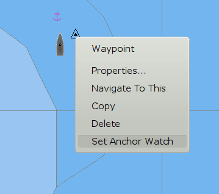
This feature can be used in other situations than just anchoring, but keeping an eye on your anchor, and making sure it isn't dragging, is the main purpose.Basic usage
To learn how it works let's make a dry run to a nice trade wind anchorage.

After circling around and exploring the bay, we know where we want to drop our anchor.
At the chosen spot we drop the anchor, at the same time we right click on the "Own Boat Icon" and press "drop Mark Here".

The wind, ENE at 15 kts let us drift back until we are satisfied with our scope. A burst in reverse convinces us that the anchor is set, later confirmed by a leisurely snorkeling over the anchor. Time to sort out the anchor watch
Right click on the mark and press "Set Anchor Watch". The name of the mark changes to 50, and a green circle appears with a radius of 50 meters.

The anchor watch is now active, with a default max distance of 50m from the mark, and an alarm will be set off if the boat for some reason exits the circle. If "Play sound on CPA/TCPA Alerts" is set in the AIS ToolBox Tab, the same audio alarm is activated together with the visual alarm on the screen. To deactivate the anchor watch, right click on the mark and select "Clear Anchor Watch".
If you are more than 50 m from the anchor when activating the watch this happens..

Sort this out by open the Mark/WP Properties Dialog.

Change the name from "50 m" to a name that is relevant to the amount of chain and/or rode that you use, for example "75". Change the icon to, if you like. Pressing OK should stop the alarm.
To get protection from the wind and a bit of northerly swell, we have really anchored to close to the beach. To keep an eye on this potential danger we set another mark on the beach.

This time we change the "Mark Name" to -150, this means that if the boat comes within 150 meters of this mark, the alarm is set off. Green circle, OK to be inside. Red circle OK to be outside.
An hour later, after a heavy squall passed, the wind goes light and fluky. The boat drifts towards the beach and the anchor alarm sounds and comes up on our computer screen.
The alarm sound is the same as the AIS warning sound and is set in the ToolBox under the AIS tab.
Alternatives and Settings
A mark can also be created by hitting "Enter" or "Ctrl + M". The mark will be created at the position of the cursor. The anchor watch can now be set as demonstrated above with the default alarm distance being applied.
A way to easily drop a mark, exactly at your current position, is to hit "Ctrl + Space". This is the "Man Over Board" shortcut. Right click and go to properties. Change the name to a suitable alarm distance and pick a different icon. Set the Anchor Watch.

The picture is an illustration to what happens if you use the MOB keystroke, and then just activate the Anchor Watch. As the mark is already named, the default watch distance doesn't work. The green circle is the 5 m default minimum distance. The alarm goes off, of course.
Both the default Anchor Watch Radius and Max distance from mark can be changed by editing the configuration file, opencpn.ini on Windows and opencpn.config on Linux.
Close down OpenCPN and open the configuration file in a text editor.
Find the section that starts with "[Settings] ".
Create two new lines, looking, for example like this.
AnchorWatchDefault=45 (default is 50 m)
AnchorWatchMax=2500 (default is 1852 m)
Enter your own preferences, 45 & 2500 are just for illustration.
Automatic Anchor Mark
Automatic Anchor Mark. This is what it does:
If the following are ALL true:
1. In "Cruising" mode, meaning that speed has at some point exceeded 3.0 kts.
2. Current speed is less than 0.5 kts.
3. OpenCPN has been up at least 30 minutes
4. OpenCPN is exiting normally
5. There is no anchor watch set on an "anchor..." icon mark.
6. Any "Anchorage - icon" waypoint within 0.25 NM of current GPS location is deleted.
Then, OpenCPN will drop a waypoint at the current location, with the name - "Anchorage created on [Date Stamp]".
Thus waypoints are automatically created for known good anchorages as you shut down the computer.
The 0.25 NM condition prevents clogging up frequently visited anchorages with closely spaced waypoints.
The other conditions help to prevent spurious waypoints.
To use this feature find opencpn.conf or opencpn.ini as it is called in windows.
Search for a line like this:
AutoAnchorDrop=0
and change the value from "0" to "1".
Navigation Data Backup
A rotating backup of navobejcts is created on every program run. OpenCPN keeps backups of the last 5 runs. This can be changed.In the opencpn.ini/opencpn.config file you can find a configuration setting to control the number of backups kept, defaulting to KeepNavobjBackups=5. This value can be changed using a text editor.
The backups are then stored in files navobj.xml.[1..x] (in the same directory as the ni file) where .1 is always the newest backup and the oldest is removed on the next program run. The file that will be loaded on next start is called navobj.xml.
To load an old backup, exit the program. Find the backup you want to use. Rename it navobj.xml. Start OpenCPN!
If trouble strikes...
You have useful automatic rolling backups of navobj.xml, as described above.
Copy them somewhere safe before you run OpenCPN again, as they are automatically rolled over, and you lose the oldest one for each invocation of OpenCPN.
Rename the "best" one as navobj.xml, and the contents will be automatically used by OCPN.
The OpenCPN logfile also serves as a backup through the "LOGBOOK:" entries.
These can be used to reconstruct a GPX track. A windows utility for hat purpose ia available here: https://github.com/nohal/LogBookExtractor/downloads
Long term backup
The navobj.xml.[1..x] takes care of your session data backup. This means that when you start OpenCPN it "remembers" the state of your last session.
For a more permanent solution, to keep routes, waypoints and tracks etc, that you may need in the future, consider saving the data to a "gpx" file or use layers.
Plugins
About plugins
General Information about plugins.
Grib weather plugin
Plugin to display Grib weather data files.
Dashboard plugin
Plugin to display navigation data.
Voyage Data Recorder Plugin
Plugin to record and play NMEA data files. Allows simulation of AIS.
Route Plugin
A short introduction to to the Great circle part of the Route Plugin.
About Plugins
The core OpenCPN tries to keep features to a minimum so that it is lean, mean and easy to use. Features can still be added through the plugin infrastructure. The plugin interface has changed with the 3.0 release, and new releases of the plugins are available.A number of new plugins are introduced with the 3.0 release.

OpenCPN offers two default plugins available pre-installed:
And quite a few plugins on top of that:
Plugins available for download -> PlugInsDownload the plugins made for OpenCPN 3.0
Most plugins in various stage of development available early 2013.
- The WMM plugin showing magnetic variation.
- Logbook Konni an advanced logbook.
- FindIt Stowage manager for OpenCPN, integrates with Konni's Logbook
- VDR or Voyage Data Recorder
- Google Earth plugin - Windows only.
- BSB4 plugin -Windows only - Non Free.
- "nv-charts" plugin. Windows only - Non Free.
- Kml overlay plugin.
- Hydrographic survey plugin.
- Radar overlay plugin.
- AIS Radar plugin, Implements a radar-like display for AIS targets
- Debugger, Shows the messages traveling through the plugin API
This plugin is aimed mainly at the developers and to help troubleshoot problems with NMEA data streams - Calculator, This is a calculator & mathematical expression parsing plugin.
Would you like to know your hull speed? - Route Plotting plugin for OpenCPN
Plots Great Circle routes, Limited Circle Routes and Rhumb lines - SAR plugin for OpenCPN
Creates Search and Rescue patterns with desired parameters - GRadar a Garmin Radar overlay plugin for OpenCPN. Follow the development in this forum thread: GRadar. This plugin is not ready for prime time yet. It's still in an alpha testing stage, but very promising. Windows download, source code and installation instructions are available in the forum thread.
Download Plugins
Go to the dedicated page for downloading plugins: PlugInsInstalling a Plugin
For Linux, place the downloaded "pluginxx.so" in {prefix}/lib/opencpn, which means /usr/local/lib/opencpn for a standard installation, using the provided packages.For Windows place the downloaded "pluginxx.dll" in a "plugins" subfolder of your OpenCPN installation folder. A common location is C:\Program Files\OpenCPN\plugins.
Once the plugin is in the right directory, restart OpenCPN and proceed to enabling the plugin.
For Mac right-click your app in Finder and open "Contents", and put your plugin in the "PlugIns" directory.
Enabling a Plugin
Plugins are made available by clicking on the plugin in the Options->Plugin Tab. Once this is done, an "Enable" button appears. Pressing this button activates the plugin icon in the ToolBar. Not all plugins has an icon when active. For most plugins there is a "Preferences" Button for configuration.When a plugin is disabled in the Options->Plugin tab, the plugin Icon disappears from the ToolBar.
The Plugin Icon works as a toggle switch for the plugin. Pressing the Grib Icon, for example, activates the Grib plugin. Pressing one more time, kills it.
The WMM Icon uses a new feature, by displaying the magnetic variation, at the position of OwnShip in the button itself.
Grib ToolBar Icon

Dashboard Plugin
The Dashboard pluging is able to show quite a few instruments. If the data is available to OpenCPN in the NMEA0183 data stream the different instruments will display relevant data. But...the plugin don't tell what is available. It is assumed that the user know what is connected. It is of course possible to activate all instruments and see what works.The Dashboard in action, two Dashboards, one vertical and one horizontal. Grab the top Caption bar with the cursor and drag the Dashboard as far as possible to the right or left. Let go the cursor, and the Dashboard will dock, the chart display will adjust, no part of the chart will be hidden. Horizontal Dashboards can in a similar way be docked top or bottom.
This process is reversible. Just grab the Dashboard dialog bar with the cursor, an pull towards the middle of the screen, and the Dashboard will become floating.

The same Dashboards docked left and bottom.

There is a grab handle in the SE corner of each Dashboard. Use it to resize each dialog.
The graphics will change size, but not the text, which is handled separately. See further down.

The Dashboard Tab
Once the Dashboard plugin is activated in the plugin tab, the Dashboard Icon will be available in the ToolBar and will work as an on/off toggle..
The "Enable" Button activates the plugin and shows the icon in the ToolBar.
Once enabled, the "Disable" Button is displayed, as show above.
If you press the "Preference" Button the Dashboard preferences dialog becomes available.
Dashboard settings

Right click anywhere in a Dashboard and a few options are displayed, in a small dialog.
Above we have clicked on the vertical Dashboard. Make this Dashboard horizontal by clicking the "Horizontal" radio button. Stop displaying it by un-ticking the box in front of the first "Dashboard" line. Get it back by right clicking on the other Dashboard and tick the same box again.
Preferences

"+" and "-" Add or delete a Dashboard. Note, that an active Dashboard can not be deleted as the "-" will be grayed out.
Show this Dashboard If ticked just that Dashboard is shown. Toggling the icon displays all Dashboards.
Caption changes the name of the DashBoard from the default "Dashboard" to the Caption value. Due to a wxWidgets bug, this change is not instant, and requires docking the Dashboard or restarting OpenCPN, to work.
Orientation A dash board can be either Vertical or Horizontal. Vertical can be docked left or right, Horizontals can be docked top or bottom.
Instrument width. Exactly what is says. It is also the minimum width of the Dashboard. The Dashboards dimensions can be changed by dragging the lower right-hand corner with the mouse, but this will not change the instrument width.
The "Instruments" Window. Shows the Instruments that are "active", that will show up in that particular Dashboard .The instruments are selected with the buttons to the right.
Add. This button brings up the "Add Instrument" dialog where the available instruments can be highlighted and added to the Instruments Window.

The available instruments are:
Position (text)
SOG (text) -Speed Over Ground
Speedometer (dial)
COG(text) - Course Over Ground
GPS Compass(dial)
STW(text) Speed Through Water
True HDG(text) Heading
Apparent WindAngle & Speed(dial)
App. Wind speed(text)
App. Wind speed(dial)
True Wind Angle & Speed(dial)
Depth(text)*
Water Temp(text)
VMG(text)- Velocity Made Good to a waypoint.
VMG(dial)
Rudder Angle(text)
Rudder Angle(dial)
GPS in view(text)- the number of satellites detected*
GPS status(dial)**
Cursor, shows the position of the cursor.
Clock
Sunrise/Sunset
Moon phase
Air Temp
App. Wind angle
True Wind angle
True Wind direction
True Wind Speed
True Wind Direction and speed
Magnetic Hdg
Compass
Wind History
*The DPT sentence is used, and transducer offset will be added to depth value, if available.
**Linux note: GPS satellite info is not available if using gpsd.
The same informations is however available through the "xgps" command.
Up / Down. Highlight an entry in the Instrument Window and change the order between the selected instruments. This order will also be the order between the instruments in the Dashboard dialog.
The Appearance Tab

Use this tab to set fonts.
These controls together enables the user to adjust the view of the dashboard to suit individual needs.

Wind History
The Wind History Instrument needs some further explanations.
The "wind history" instrument is meant to be run as a standalone (vertical) instrument.
Just define a separate dashboard and add it as the only instrument.

You can resize the Instrument it with the mouse.

In real conditions, it monitors around 40 min of wind direction (red), as well as wind speed (blue), showing a vertical time line every 5 min (the example screen shot is a full-speed VDR replay).
The text on the top shows the current values, as it is displayed in the standard instruments (blue = wind speed data, TWS=True Wind Speed, red = direction, TWD = True Wind Direction).
Here is an explanation of the text line, left side (see screen shot):
TWS 7.5 : true Wind Speed currently 7.5 kts
Max 22.3 kts since 18:50 : this is the max Wind speed in the visible graphs, i.e. the last ~40 mins
Overall 22.3 : the max wind speed since OpenCPN was started.
Right side above :
TWD 357° : True wind direction currently 357°
The thin red/blue curves are the real direction/speed values, the thicker curves are smoothed values. Makes it easier to see trends.
There is some logic included :
The instruments re-zoomes automatically as much as possible, always trying to show the whole visible curve;
Wind speed curve:
if your max (visible) wind speed is 10 kts, then your scale is from 0...11 kts (rounded upwards to the next full knot).
In the screen shot we had a mx of 22.3kts --> scale is 0...23 kts.
Wind direction :
The instrument scale shows +/- 90° of the currently visible data values, but is limited to a total of 360°.
If the wind is shifting through North (from 350, 355, 359, 002, 010, ...) we're shifting the curve as well, meaning that there is NO vertical jump in the data from 360° --> 0°, and we do NOT loose all the continuity in the smoothed curves !
If you should happen to have more than a full 360° cycle of wind direction in the recorded data (if you sail through a couple of dust devils ), I limited the max scale to 360°, meaning that the curve will run out of the visible area on bottom or on top of the instrument.
Please note that you don't have to have the instrument "open" all the time.
Once activated as initially described, you can close it, and simply reopen it on demand. You don't loose the curves, the instrument continues to collect the data.
To make it visible again simply right click on an existing standard-dashboard, and click the "Wind History" Dashboard.

Grib Weather Plugin
OpenCPN has a lightweight grib weather file viewer plugin, with a limited set of features, aimed at being useful while under way. It is not possible to download grib files from within OpenCPN. Many external sources for grib files are available on the Internet. Franks-Weather is a good starting point.- To display grib files as an overlay on your normal charts you have to first activate the grib icon

- Go to find the plugin tab. Click on the Grib plugin, then the "Enable" button. The "Preferences" Button brings up a small dialog.

- Tick the "Use High Definition Graphics" box as well, unless you are on old hardware. Not ticking the "High Definition Graphics" box can help to speed up the grib display, in such cases.

- The Next step is to click the icon, which brings up the Grib Display Control. Use the upper part of this window to navigate to, and select your grib files. The grib files will then be appear in the control. See picture above.
- Click on the ">" in front of the grib file. The individual forecasts contained in the grib file, is then displayed under the grib file heading.
- Click on one of the forecasts and it will be displayed. When you move the cursor over the grib display, the values for wind etc will be displayed for the cursor position, in the lower part of the "Grib Display Control". Here you can select what grib values to view. Note that not all grib files contains wave data.
- When zoomed in to show just a small area of the chart, there may not be any wind-arrows visible. The relevant data will, however, still be displayed in the grib dialog. To see the wind arrows zoom out to view a larger area.
- The gribs are only displayed on the charts when the "Grib Display Control" dialog is open.
- For certain areas gribfiles describing currents are available

- OpenCPN will display most grib file formats.
What is a grib file?
- If you are not familiar with grib weather files, make sure you understand the basics, before you start to use them. It is essential to understand the limitations of weather forecasts in the grib format. It is also worth pointing out that gribs are not reliable near tropical systems, at least not when using gribs based on the very common GFS model.
- To get started with gribs and to find sources for downloads, check Franks-Weather.
- A very good book is David Burch: Modern Marine Weather, with a thorough treatment of the subject.
- A few files including lectures on tropical weather and gribs are available here.
- ZyGrib is a free and open-source software(FOSS) dedicated grib viewer. Grib files can be downloaded by ZyGrib and then opened in OpenCPN.
- QtVlm a FOSS weather routing program, combines a grib file with boat polar data, and produces an optimized route. More here Weather Routing. This is a very good tool to use in routing decisions, but has the same limitations as all grib-data.
Voyage Data Recorder Plugin
Use VDR to record and play NMEA files.
- Use VDR for AIS Simulation - Run VDR to play AIS NMEA files. Or... use the VDR plugin to record your passages and replay them later! The VDR is also great for testing NMEA sentences, the Dashboard and new OpenCPN features. These are just a few examples, of how to use this versatile plugin.
- When VDR is activated in ToolBar -> Options -> Plugins -> VDR, two Buttons appears in the ToolBar

- The left button is for recording, and leads to a "Choose file" dialog to select the file to record to. A file with a .txt file extension works well.
- The right button is for playing an existing file, and also leads to a dialog where the file must be selected. Once selected VDR starts to play the file, the small dialog below shows on the screen.

- You can control the speed with the upper slide. Far left is slow, natural speed, while moving the slide to the far right equals fast forwarding.
- The lower part of the dialog shows the progress.
- When recording, the VDR plugin includes all NMEA data available on the internal bus in OpenCPN. Everything (almost) in the ToolBar -> Connections -> "NMEA debug window" will be included.
- If you are playing a file with the VDR at the same time, even that data will be included. So it is possible to play and record at the same time!
- To get started, download this file. Un - 7-zip the file and change the .pdf extension to .txt. The file is now ready to play.
- If you can't find the boat, have a look in the Adriatic or just press the "Auto Follow", or press F2. The view will now center on the action.
FAQ
- Where is my log file? Where is my config.ini file? Read this explanation - Installing OpenCPN
- I can't find all those files you are talking about. A big contributing factor to this problem is that Windows default settings hides system files, and also by default, don't show file extensions. These settings can be changed however. In XP go to My Computer ->Tools -> Folder Options -View. Mark "Show hidden files and folders" and untick the box "Hide extensions for known file types". Other versions of Windows are similar, but may not be exactly like this. Now you should find the files we talked about in the previous paragraph.
- I have a problem so I reinstalled - but that did not help. Try this approach instead - Installing OpenCPN
- My charts used to show up just fine in OpenCPN, but using 3.0.2 and later, they no longer work. OpenCPN used to display charts with an unknown projection as a Mercator chart. This is no longer the case. If OpenCPN don't recognize the chart projection, it will not be displayed. Potentially seirous errors are thus avoided. The event is logged in the opencpn.log. Users may run into problems if a chart projection is stated as "UNKNOWN" even though it really is a prefect Mercator chart. Unfortunately, some conversion tools take a shortcut and don't enter the "PR" tag in the kap-chart-header correctly. The projection of a chart can always be found, and the "PR=UNKNOWN" should always be avoided. Official charts that OpenCPN really can't display, with a latitude < 70 degrees north/south, are very few indeed. Really only a handful of legacy, Gnomonic, large scale charts.
- I get a lot of error messages when starting OpenCPN from the Linux command line. Messages like (opencpn:8979): Gdk-CRITICAL **: IA__gdk_drawable_get_size: assertion `GDK_IS_DRAWABLE (drawable)' failed
(opencpn:8979): Gdk-CRITICAL **: IA__gdk_drawable_get_depth: assertion `GDK_IS_DRAWABLE (drawable)' failed
Error opening coefficient file
(opencpn:8979): Gdk-CRITICAL **: IA__gdk_window_get_origin: assertion `GDK_IS_WINDOW (window)' failed
are quite normal an has nothing to do with OpenCPN. Just ignore them. - Why does it take so long time to load vector charts?
The behavior you see is expected for ENC charts. ENCs must be converted to internal SENC format before use for navigation. This takes a little bit of time, depending on your system capabilities. But it only has to be done once, and the converted SENCs are stored on your system for later use.
All ECS systems must convert ENCs to SENCs. Some take longer, (like OpenCPN), so that subsequent access is faster. Some convert faster, leaving more work to do at the time of actual chart display. Its a design decision. OpenCPN is optimized for speed in real use, not for speed in conversion.
- What are all those 'U' things all over my chart?
The feature being rendered is S57 Text relating to 'M_QUAL'.
This is a meta-object describing the quality of data shown. The Attribute of interest is CATZOC, or "Category of Zone of Confidence". The value on most US ENC's is "6", or "un-assessed". Thus, the 'U'.
You can turn this symbol off in OpenCPN by de-selecting the box next
to M_QUAL in 'Tool Box' / 'Vector Charts' tab 'Mariners Standard'
selection list box.
Unticking the box "Meta Objects" also hides the "U" symbols.
To learn the acronyms used in this application search the S57 'Object and Attribute' catalog at: http://www.s-57.com/
- I have routes and way points in Sea Clear and I would like to import them into OpenCPN. Can I do it?
Yes. I had originally created and maintained all my routes and waypoints in SeaClear, exported them, loaded them into GPSUtility (for Windows) and saved them as text files.
To import into OpenCPN I opened all my text files (routes and waypoints) with GPSUtility, saved that out as one big gpx file, and loaded it into OpenCPN. Works like a champ.
I've edited them and saved them back out as GPX files with no trouble.
Individual routes can be edited and saved in appropriately named GPX files.
- Whenever I try to open a particular chart OpenCPN crashes. What's going on?
Chances are the chart file is corrupted. Note the name and number of the suspect chart and replace it with a fresh download. Read the log file that may contain relevant information regarding the chart. Sometimes the bad chart blocks OpenCPN from restarting. Follow these instructions instead - Installing OpenCPN
Upgrade to 3.2. The sound problem was solved in Beta 3.1.1224, and should just work.The PortAudio sound libraries are included i OpenCPN and provides full ALSA support.
Sound on Windows and Mac are not changed.
Background
The earlier implementation of Linux sounds is described below. It was a mess.
OpenCPN uses a simple sound feature available in wxWidgets, wxSound, that uses OSS (Open Sound System) to play sounds. If OSS is not available, SDL (Simple Direct Media Layer) will be used instead. It has no support for ALSA!
With version 11.04, Ubuntu dropped the OSS support and the OpenCPN "sound problem", started
OSS is replaced with ALSA (Advanced Linux Sound Architecture) on newer Linux distributions, and Ubunt. This is for good reasons. AlSA replaced OSS about 10 years ago!
Similarly the libwxgtk2.8-0, that OpenCPN relies on, is not compiled with support for SDL in the Ubuntu version. The same applies to many other Linux distributions. This is the core of the sound problem, when using OpenCPN on Linux.
How to get sound to work?
There are a few options available. Starting with the easiest......
1. "aoss" is a "wrapper program" that catches OSS sound and "translates" it to the default ALSA sound system. Ubuntu does not install "aoss" by default, but can be added using "sudo apt-get install alsa-oss".
To use "aoss" just start OpenCPN from the command line like this:
$aoss opencpn
To make it easier, write a shell script containing the single line above, and make it executable. Change the link (icon) where you normally start OpenCPN, to point to the new script.
2 "padsp" works similar to "aoss", using the "pulseaudio server". It's available when the "pulseaudio-utils" package is installed. To get sound in OpenCPN start this way from the command line:
$padsp opencpn
Of course, this can be scripted as well, as for "aoss".
3. Install a version of libwxgtk that includes support for SDL. Such versions are available from http://apt.wxwidgets.org. OpenCPN 3.0.x requires the minimum version of ibwxgtk2.8-0 to be minimum. 2.8.12, for all features to work as expected.
Download the correct package for your version of Debian or Ubuntu. Unfortunately the latest Ubuntu versions are not included, but "squeeze"(strictly a Debian package) is a good candidates. Goto apt.wxwidgets.org/dists/squeeze-wx/main/, and select 32 or 64 bits version. For example, the latest 64 bits package is apt.wxwidgets.org/dists/squeeze-wx/main/binary-amd64/libwxgtk2.8-0_2.8.12.1-0_amd64.deb
Download and then
$sudo dpkg -i ibwxgtk2.8XXXXXX (the proper name of the downloaded version), to install from the command line.
Alternatively, simply clicking on the package is enough on many Linuxes.
In both cases you may have to force "upgrade" to a lower version than the existing package, depending on your installation.
Once you have installed wxgtk with support for SDL, as described above, open Synaptic, find the installed package. Mark it an then goto "Package" and tick the "Lock Version" box. This is to prevent that your newly installed wxgtk will be replaced by a version with a higher version, that lacks support for SDL.
Do not try to update your system from the command-line, as "apt-get" will not respect the "Lock".
4. You can also recompile libwxgtk and include support for SDL. Not for the faint of heart.
5. It is possible to compile your own kernel and include support for OSS, but this solution is not for the faint of heart either.
- OpenCPN and Great Circle Navigation
Raster charts display bearings and headings as straight, measurable lines on the chart. Similarly, Vector ENC's are rendered as Mercator projections in OpenCPN and most other ECS's for the same reason.
For typical coastal navigation, errors which occur using rhumb line instead of great circle calculations are small for the distances usually covered by one chart.
Mercator Charts and Mercator navigation is the standard for most navigational purposes. Other terms used instead of "Mercator Sailing" is "Loxodrome Sailing" or "Rhumb Line Sailing".
OpenCPN uses Mercator Sailing and cannot directly display Great
Circles, but through GPX route import , Great Circle Routes can be used
as explained on Planning Data page in the wiki. There is also a plugin available as well as some Supplementary Software to handle great Circles.
The next stable version of OpenCPN 3.2.0 will handle Great Circles directly. This feature is available for testing in the beta development as of version 3.1.814.
There is also a Routing Plugin with GreatCircle capabilities available for download.
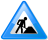This article is in not complete. You are welcome to assist in its construction by editing it as well. Everyone is allowed to edit after creating and account and/or logging in.
License and Authors
OpenCPN is licensed under the GNU General Public License (GPL) V2.
OpenCPN Lead Developer
Jesper Weissglas
Vector Chart Renderer Enhancements
Sean D'Epagnier
OpenGL Architecture
Kathleen Boswell
Icon design
Flavius Bindea
CM93 Offset and AIS enhancements
Gunther Pilz
Windows Installer enhancements
Alan Bleasby
Garmin jeeps module
Jean-Eudes Onfray
Dashboard and Dialog enhancements
Pavel Kalian
S52 Rasterization Improvements
Piotr Carlson
General usability enhancements
Anders Lund
RouteManagerDialog
Gordon Mau
OpenCPN Documentation
Tim Francis
OpenCPN Documentation
Mark A Sikes
OpenCPN CoDeveloper
Thomas Haller
GPX Import/Export Implementation
Will Kamp
Toolbar Icon design
Richard Smith
OpenCPN CoDeveloper, MacOSX
David Herring
OpenCPN CoDeveloper, MacOSX
Philip Lange
OpenCPN Documentation
Ron Kuris
wxWidgets Support
Julian Smart, Robert Roebling et al
wxWidgets Authors
Sylvain Duclos
S52 Presentation Library code
Manish P. Pagey
Serial Port Library
David Flater
XTIDE tide and current code
Frank Warmerdam
GDAL Class Library
Mike Higgins
BSB Chart Format Detail
Samuel R. Blackburn
NMEA0183 Class Library
Atul Narkhede
Polygon Graphics utilities
Jan C. Depner
WVS Chart Library
Stuart Cunningham, et al
BSB Chart Georeferencing Algorithms
John F. Waers
UTM Conversion Algorithms
Carsten Tschach
UTM Conversion Algorithms
Ed Williams
Great Circle Formulary
Philippe Bekaert
CIE->RGB Color Conversion Matrix
Robert Lipe
Garmin USB GPS Interface
GNU GENERAL PUBLIC LICENSE
Version 2, June 1991Copyright (C) 1989, 1991 Free Software Foundation, Inc.
51 Franklin Street, Fifth Floor, Boston, MA 02110-1301, USA
Everyone is permitted to copy and distribute verbatim copies
of this license document, but changing it is not allowed.
Preamble
The licenses for most software are designed to take away your freedom to share and change it. By contrast, the GNU General Public License is intended to guarantee your freedom to share and change free software--to make sure the software is free for all its users. This General Public License applies to most of the Free Software Foundation's software and to any other program whose authors commit to using it. (Some other Free Software Foundation software is covered by the GNU Lesser General Public License instead.) You can apply it to your programs, too.
When we speak of free software, we are referring to freedom, not price. Our General Public Licenses are designed to make sure that you have the freedom to distribute copies of free software (and charge for this service if you wish), that you receive source code or can get it if you want it, that you can change the software or use pieces of it in new free programs; and that you know you can do these things.
To protect your rights, we need to make restrictions that forbid anyone to deny you these rights or to ask you to surrender the rights. These restrictions translate to certain responsibilities for you if you distribute copies of the software, or if you modify it.
For example, if you distribute copies of such a program, whether gratis or for a fee, you must give the recipients all the rights that you have. You must make sure that they, too, receive or can get the source code. And you must show them these terms so they know their rights.
We protect your rights with two steps: (1) copyright the software, and (2) offer you this license which gives you legal permission to copy, distribute and/or modify the software.
Also, for each author's protection and ours, we want to make certain that everyone understands that there is no warranty for this free software. If the software is modified by someone else and passed on, we want its recipients to know that what they have is not the original, so that any problems introduced by others will not reflect on the original authors' reputations.
Finally, any free program is threatened constantly by software patents. We wish to avoid the danger that redistributors of a free program will individually obtain patent licenses, in effect making the program proprietary. To prevent this, we have made it clear that any patent must be licensed for everyone's free use or not licensed at all.
The precise terms and conditions for copying, distribution and modification follow.
TERMS AND CONDITIONS FOR COPYING, DISTRIBUTION AND MODIFICATION
0. This License applies to any program or other work which contains a notice placed by the copyright holder saying it may be distributed under the terms of this General Public License. The "Program", below, refers to any such program or work, and a "work based on the Program" means either the Program or any derivative work under copyright law: that is to say, a work containing the Program or a portion of it, either verbatim or with modifications and/or translated into another language. (Hereinafter, translation is included without limitation in the term "modification".) Each licensee is addressed as "you".
Activities other than copying, distribution and modification are not covered by this License; they are outside its scope. The act of running the Program is not restricted, and the output from the Program is covered only if its contents constitute a work based on the Program (independent of having been made by running the Program). Whether that is true depends on what the Program does.
1. You may copy and distribute verbatim copies of the Program's source code as you receive it, in any medium, provided that you conspicuously and appropriately publish on each copy an appropriate copyright notice and disclaimer of warranty; keep intact all the notices that refer to this License and to the absence of any warranty; and give any other recipients of the Program a copy of this License along with the Program.
You may charge a fee for the physical act of transferring a copy, and you may at your option offer warranty protection in exchange for a fee.
2. You may modify your copy or copies of the Program or any portion of it, thus forming a work based on the Program, and copy and distribute such modifications or work under the terms of Section 1 above, provided that you also meet all of these conditions:
a) You must cause the modified files to carry prominent notices stating that you changed the files and the date of any change.
b) You must cause any work that you distribute or publish, that in whole or in part contains or is derived from the Program or any part thereof, to be licensed as a whole at no charge to all third parties under the terms of this License.
c) If the modified program normally reads commands interactively when run, you must cause it, when started running for such interactive use in the most ordinary way, to print or display an announcement including an appropriate copyright notice and a notice that there is no warranty (or else, saying that you provide a warranty) and that users may redistribute the program under these conditions, and telling the user how to view a copy of this License. (Exception: if the Program itself is interactive but does not normally print such an announcement, your work based on the Program is not required to print an announcement.)
These requirements apply to the modified work as a whole. If identifiable sections of that work are not derived from the Program, and can be reasonably considered independent and separate works in themselves, then this License, and its terms, do not apply to those sections when you distribute them as separate works. But when you distribute the same sections as part of a whole which is a work based on the Program, the distribution of the whole must be on the terms of this License, whose permissions for other licensees extend to the entire whole, and thus to each and every part regardless of who wrote it.
Thus, it is not the intent of this section to claim rights or contest your rights to work written entirely by you; rather, the intent is to exercise the right to control the distribution of derivative or collective works based on the Program.
In addition, mere aggregation of another work not based on the Program with the Program (or with a work based on the Program) on a volume of a storage or distribution medium does not bring the other work under the scope of this License.
3. You may copy and distribute the Program (or a work based on it, under Section 2) in object code or executable form under the terms of Sections 1 and 2 above provided that you also do one of the following:
a) Accompany it with the complete corresponding machine-readable source code, which must be distributed under the terms of Sections 1 and 2 above on a medium customarily used for software interchange; or,
b) Accompany it with a written offer, valid for at least three years, to give any third party, for a charge no more than your cost of physically performing source distribution, a complete machine-readable copy of the corresponding source code, to be distributed under the terms of Sections 1 and 2 above on a medium customarily used for software interchange; or,
c) Accompany it with the information you received as to the offer to distribute corresponding source code. (This alternative is allowed only for noncommercial distribution and only if you received the program in object code or executable form with such an offer, in accord with Subsection b above.)
The source code for a work means the preferred form of the work for making modifications to it. For an executable work, complete source code means all the source code for all modules it contains, plus any associated interface definition files, plus the scripts used to control compilation and installation of the executable. However, as a special exception, the source code distributed need not include anything that is normally distributed (in either source or binary form) with the major components (compiler, kernel, and so on) of the operating system on which the executable runs, unless that component itself accompanies the executable.
If distribution of executable or object code is made by offering access to copy from a designated place, then offering equivalent access to copy the source code from the same place counts as distribution of the source code, even though third parties are not compelled to copy the source along with the object code.
4. You may not copy, modify, sublicense, or distribute the Program except as expressly provided under this License. Any attempt otherwise to copy, modify, sublicense or distribute the Program is void, and will automatically terminate your rights under this License. However, parties who have received copies, or rights, from you under this License will not have their licenses terminated so long as such parties remain in full compliance.
5. You are not required to accept this License, since you have not signed it. However, nothing else grants you permission to modify or distribute the Program or its derivative works. These actions are prohibited by law if you do not accept this License. Therefore, by modifying or distributing the Program (or any work based on the Program), you indicate your acceptance of this License to do so, and all its terms and conditions for copying, distributing or modifying the Program or works based on it.
6. Each time you redistribute the Program (or any work based on the Program), the recipient automatically receives a license from the original licensor to copy, distribute or modify the Program subject to these terms and conditions. You may not impose any further restrictions on the recipients' exercise of the rights granted herein. You are not responsible for enforcing compliance by third parties to this License.
7. If, as a consequence of a court judgment or allegation of patent infringement or for any other reason (not limited to patent issues), conditions are imposed on you (whether by court order, agreement or otherwise) that contradict the conditions of this License, they do not excuse you from the conditions of this License. If you cannot distribute so as to satisfy simultaneously your obligations under this License and any other pertinent obligations, then as a consequence you may not distribute the Program at all. For example, if a patent license would not permit royalty-free redistribution of the Program by all those who receive copies directly or indirectly through you, then the only way you could satisfy both it and this License would be to refrain entirely from distribution of the Program.
If any portion of this section is held invalid or unenforceable under any particular circumstance, the balance of the section is intended to apply and the section as a whole is intended to apply in other circumstances.
It is not the purpose of this section to induce you to infringe any patents or other property right claims or to contest validity of any such claims; this section has the sole purpose of protecting the integrity of the free software distribution system, which is implemented by public license practices. Many people have made generous contributions to the wide range of software distributed through that system in reliance on consistent application of that system; it is up to the author/donor to decide if he or she is willing to distribute software through any other system and a licensee cannot impose that choice.
This section is intended to make thoroughly clear what is believed to be a consequence of the rest of this License.
8. If the distribution and/or use of the Program is restricted in certain countries either by patents or by copyrighted interfaces, the original copyright holder who places the Program under this License may add an explicit geographical distribution limitation excluding those countries, so that distribution is permitted only in or among countries not thus excluded. In such case, this License incorporates the limitation as if written in the body of this License.
9. The Free Software Foundation may publish revised and/or new versions of the General Public License from time to time. Such new versions will be similar in spirit to the present version, but may differ in detail to address new problems or concerns.
Each version is given a distinguishing version number. If the Program specifies a version number of this License which applies to it and "any later version", you have the option of following the terms and conditions either of that version or of any later version published by the Free Software Foundation. If the Program does not specify a version number of this License, you may choose any version ever published by the Free Software Foundation.
10. If you wish to incorporate parts of the Program into other free programs whose distribution conditions are different, write to the author to ask for permission. For software which is copyrighted by the Free Software Foundation, write to the Free Software Foundation; we sometimes make exceptions for this. Our decision will be guided by the two goals of preserving the free status of all derivatives of our free software and of promoting the sharing and reuse of software generally.
NO WARRANTY
11. BECAUSE THE PROGRAM IS LICENSED FREE OF CHARGE, THERE IS NO WARRANTY FOR THE PROGRAM, TO THE EXTENT PERMITTED BY APPLICABLE LAW. EXCEPT WHEN OTHERWISE STATED IN WRITING THE COPYRIGHT HOLDERS AND/OR OTHER PARTIES PROVIDE THE PROGRAM "AS IS" WITHOUT WARRANTY OF ANY KIND, EITHER EXPRESSED OR IMPLIED, INCLUDING, BUT NOT LIMITED TO, THE IMPLIED WARRANTIES OF MERCHANTABILITY AND FITNESS FOR A PARTICULAR PURPOSE. THE ENTIRE RISK AS TO THE QUALITY AND PERFORMANCE OF THE PROGRAM IS WITH YOU. SHOULD THE PROGRAM PROVE DEFECTIVE, YOU ASSUME THE COST OF ALL NECESSARY SERVICING, REPAIR OR CORRECTION.
12. IN NO EVENT UNLESS REQUIRED BY APPLICABLE LAW OR AGREED TO IN WRITING WILL ANY COPYRIGHT HOLDER, OR ANY OTHER PARTY WHO MAY MODIFY AND/OR REDISTRIBUTE THE PROGRAM AS PERMITTED ABOVE, BE LIABLE TO YOU FOR DAMAGES, INCLUDING ANY GENERAL, SPECIAL, INCIDENTAL OR CONSEQUENTIAL DAMAGES ARISING OUT OF THE USE OR INABILITY TO USE THE PROGRAM (INCLUDING BUT NOT LIMITED TO LOSS OF DATA OR DATA BEING RENDERED INACCURATE OR LOSSES SUSTAINED BY YOU OR THIRD PARTIES OR A FAILURE OF THE PROGRAM TO OPERATE WITH ANY OTHER PROGRAMS), EVEN IF SUCH HOLDER OR OTHER PARTY HAS BEEN ADVISED OF THE POSSIBILITY OF SUCH DAMAGES.
END OF TERMS AND CONDITIONS
How to Apply These Terms to Your New Programs
If you develop a new program, and you want it to be of the greatest possible use to the public, the best way to achieve this is to make it free software which everyone can redistribute and change under these terms.
To do so, attach the following notices to the program. It is safest to attach them to the start of each source file to most effectively convey the exclusion of warranty; and each file should have at least the "copyright" line and a pointer to where the full notice is found.
one line to give the program's name and an idea of what it does.
Copyright (C) yyyy name of author
This program is free software; you can redistribute it and/or
modify it under the terms of the GNU General Public License
as published by the Free Software Foundation; either version 2
of the License, or (at your option) any later version.
This program is distributed in the hope that it will be useful,
but WITHOUT ANY WARRANTY; without even the implied warranty of
MERCHANTABILITY or FITNESS FOR A PARTICULAR PURPOSE. See the
GNU General Public License for more details.
You should have received a copy of the GNU General Public License
along with this program; if not, write to the Free Software
Foundation, Inc., 51 Franklin Street, Fifth Floor, Boston, MA 02110-1301, USA.
Also add information on how to contact you by electronic and paper mail.
If the program is interactive, make it output a short notice like this when it starts in an interactive mode:
Gnomovision version 69, Copyright (C) year name of author
Gnomovision comes with ABSOLUTELY NO WARRANTY; for details
type `show w'. This is free software, and you are welcome
to redistribute it under certain conditions; type `show c'
for details.
The hypothetical commands `show w' and `show c' should show the appropriate parts of the General Public License. Of course, the commands you use may be called something other than `show w' and `show c'; they could even be mouse-clicks or menu items--whatever suits your program.
You should also get your employer (if you work as a programmer) or your school, if any, to sign a "copyright disclaimer" for the program, if necessary. Here is a sample; alter the names:
Yoyodyne, Inc., hereby disclaims all copyright
interest in the program `Gnomovision'
(which makes passes at compilers) written
by James Hacker.
signature of Ty Coon, 1 April 1989
Ty Coon, President of Vice
This General Public License does not permit incorporating your program into proprietary programs. If your program is a subroutine library, you may consider it more useful to permit linking proprietary applications with the library. If this is what you want to do, use the GNU Lesser General Public License instead of this License.